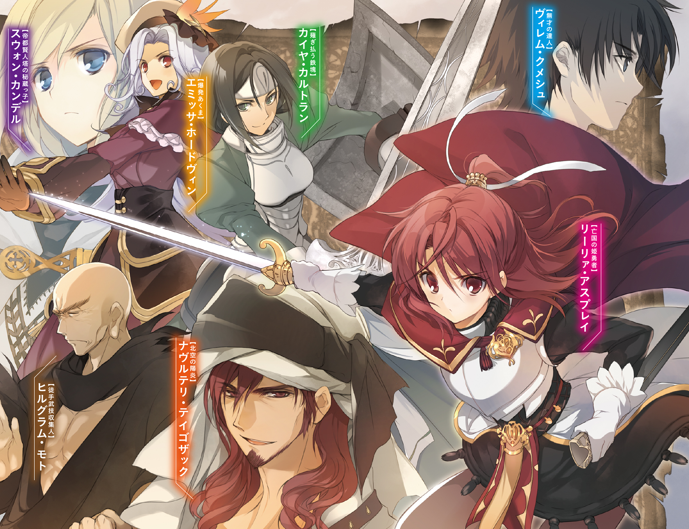

| 終末なにしてますか？ 忙しいですか？ 救ってもらっていいですか？＃０４ | |
| 枯野瑛 & ue | |

終末なにしてますか？ 忙しいですか？ 救ってもらっていいですか？#04
枯野 瑛

角川スニーカー文庫
本作品の全部または一部を無断で複製、転載、配信、送信したり、ホームページ上に転載することを禁止します。また、本作品の内容を無断で改変、改ざん等を行うことも禁止します。
本作品購入時にご承諾いただいた規約により、有償・無償にかかわらず本作品を第三者に譲渡することはできません。
本作品を示すサムネイルなどのイメージ画像は、再ダウンロード時に予告なく変更される場合があります。
本作品は縦書きでレイアウトされています。
また、ご覧になるリーディングシステムにより、表示の差が認められることがあります。
あの子ならもしかして、という気持ちがあった。奇跡を信じたいという思いもあった。けれど現実は、そんな願いのすべてと関係ないところで進行していた。
護翼軍の高速艇が、地上より、ひとつの亡骸を回収した。
それは、つい先日まで、クトリ・ノタ・セニオリスであったモノだった。
──部屋を出たナイグラートは、後ろ手に扉を閉めた。
そのまま、通路の壁に背をもたせて、ずるずるとその場に座り込む。
ごうんごうんと、呪燃炉の振動が全身を揺さぶる。まるで母親の胎内にいるようだ、という妄想が脳裏をかすめる。場違いだと思い、すぐに理性でそれを打ち払う──ここにあるのは生まれつつある生命ではなく、失われてしまった生命と、いずれ失われるであろう生命だけだ。
護翼軍所有の中型巡回艇。主に20番台の浮遊島の間を飛び回り哨戒を行うそれの一画に、彼女はいた。
「──辛イモノヲ見セタナ」
ナイグラートをこの巡回艇まで呼びつけた当人である巨軀の爬虫種が、重く低い声で労わってくる。
「戦ニ斃レタ妖精兵ハ、本来デアレバ骸ヲ残サヌ。光ノ粒ニ砕ケ、風ニ溶ケル。......貴様ノ言葉ノ通リデアッタ。クトリハ既ニ、妖精デハナカッタノダ」
「そうね」
視線を床に落としたまま、ナイグラートは生返事をする。
部屋の中には、おそらく以前まではクトリであったのだろうモノがあった。
打ち潰されてか。斬り飛ばされてか。突き貫かれてか。擦り削られてか。とにかく多様な傷が、少女だった肉体を、ほとんど原形をとどめないまでに損なっていた。しかしそれ以上に、おそらくは少女自身が限界を超えた動きを強行したせいだろう、筋や腱の断裂のほうがよほど深くそして多く、その体を傷つけていた。
ナイグラートは、思わず口元を両手でふさいだ。こみあげてくる嗚咽を、必死になって喉の奥へと押しかえす。同時にあふれてくる涙のほうについては、こらえることも隠すことも諦めた。ただの喰人鬼でしかない彼女には、多腕系の鬼族とは違い、腕は二本しかないからだ。それに──
「本当にがんばったのね、あの子」
喰人鬼だから、肉の具合をひと目見れば、わかる。あの骸が、どれだけ激しい戦いを、どれだけ激しい感情とともに潜り抜けてきたのかが。
おそらく少女は、戦いの間、自分の体が壊れることをまったく厭わなかったのだ。
死に近づけば近づくほど、その者の内の魔力はより激しく熾き上がる。そして彼女が熾したその力は、壊れかけの体を無理矢理動かし、無謀な戦いを続けさせるのに充分なものだったはずだ。肉が裂け、骨が砕け、血を失い、それでも残された命のすべてを目の前の戦いにぶつけ続けた。
「葬儀ハ、ドウスル。ヤハリ、鬼葬ヲ選ブカ？」
様々な種族と文化、さらには死生観までが入り混じる浮遊大陸群においては、死者の扱い方もまた様々だ。炎で焼く。土に埋める。風に晒し鳥に食わせる。香油に漬けて保管する。自治体が一種のゴミとして回収する等々。
鬼葬は、それらの中にあっては比較的一般的な埋葬法のひとつだ。内容は簡単で、葬儀人を務める喰人鬼を呼び、遺体を食べさせるというもの。別の生命を食らって存在してきた生命の終わりは、また別の生命の糧となることこそがふさわしい......とかなんとか、そういう思想の上にある。
「......やめときましょう」
ナイグラートも、葬儀人の資格は持っている。今ここで立候補をしたならば、その意は簡単に通してもらえるだろう。
けれど、そうする気はおきなかった。
これまでに犠牲になった妖精兵たちは、弔われずに、ただ光に消えていった。クトリだけをその例外にするのは──実際に彼女だけが特別な存在になっていたとしても──ためらわれた。それに、
「あのお肉は、もう、空っぽ。魂とか魔力とかについてはよくわからないけど、想いとか生きるための力とかは全部吐き出しちゃった後だって、見てわかる。食べても何も引き継げないようなお肉は、食べられないわ」
「フム」
会話が途絶えた。
感情の波はまだ激しく荒れ狂ってたけれど、声の震えと涙のほうは、なんとか収まってくれた。
ナイグラートは立ち上がる。
「......そういえば、あとの二人はどうしたの？ そんなに離れた場所に墜ちたわけじゃなかったんでしょう、一緒に見つからなかったの？」
「ソノ話ダガ」
迷うように、爬虫種の視線が宙をさまよう。
「確定シテイル報セガヒトツト、不確定ノモノガヒトツ、アル。ドチラカラ聞ク」
なにそれ、と思う。
良い報せと悪い報せ、ではないのか。もしそうであれば、良いほうだけ教えてあとは黙っていてくれと迷いなく言えたのに。今はとにかく、これ以上気分が沈むようなことは何ひとつとして聞きたくなかった。
「......確定してるほうから、お願い」
「彼ノ地ニ、〈最初ノ獣〉ガ出現シタ。コレガ、地上ノ探索ガ途中デ切リ上ゲラレタ理由ダ。ソシテ、コレ以上ノ探索ガ出来ヌ理由デモアル」
「それ、強いの？」
「判ラヌ。有史ヨリコチラ、誰一人トシテ、彼ノ〈獣〉ト戦ッタ者ハイナイ」
妙なことを言われた。
「だったら──」
「戦イニナラヌノダ。〈最初ノ獣〉ニ近ヅキシモノハ、タダソレダケデ、スベテ滅ビル。形モ命モ失イ、タダノ砂トナル」
その〈獣〉そのものは、悪意も敵意も殺意も持ち合わせていない。ただそこにあるだけで、脅威は完成する。何者も近づけず、何者も触れられず、ゆえに何者も敵わない。戦いを始めることすら、できはしない。
つまり。クトリとともに地上に失われた残りの二人──ヴィレム・クメシュとネフレン・ルク・インサニアについては、もう、形見を探すことすらできない。
「......そう」
ナイグラートは、背を壁にもたせたまま、両腕で自分自身をぎゅっと抱きしめた。
「それが確定している報せね。それで、もうひとつは何？」
何ひとつ期待をせずに、先を促した。
今がどん底だ。もう、これ以上何を言われたとしても、今より気分が落ち込むことはない。投げやりな気持ちで、そんな確信なんぞを抱いていた。
「大賢者ガ、失ワレシ秘術ヲ用イテ、ヴィレムノ行方ヲ探ッタラシイ。鼓動探知トイッタカ、生命持ツ者デアレバ大地ノ果テマデ追跡スルラシイガ」
──ん？
少し、おかしな話になってきた。
大賢者といえば、この浮遊大陸群の創設の立役者である。当然ながらその齢は軽く五百を超え、古代の秘術の数々にも通じて、いかなる者より見識が深い。かつてそうしていたように、今もこれからも浮遊大陸群を守護し続けるであろう、伝説の人物である。子供の絵本にも学院の教本にもそう書いてある。
そして──その言葉を聞いた時はとても信じられなかったが──そういえば同じく生ける伝説であったところのヴィレムいわく、昔馴染みであった、らしい。だから、恐れ多くも偉大なる大賢者がヴィレムの行方を気にして伝説の秘術を使ったということ自体には、戸惑いこそあれ驚きはしないのだけど、でも。
「生命持つ者を追跡する......って......」
「結果ハ、〝地上ノ何処カニ在ル〟デアッタトイウ」
「......────ッ!?」
息を吞んだ。
まさか、そんな。ありえない。
いやでも、それはつまり、そういうことのはずで。でもでも。
「結論ハ出セヌ。大賢者ホドノ者ノ操ル秘術ノ結果ガ〝何処カ〟ナドト曖昧ナモノデアル時点デ、何カガ狂ッテイルノダ。シカシ、ソレデモ......」
しかしそれでも、可能性は、残る。
生命持つ者を追跡するという古代の秘術が、十全にではないにせよ、効果をあげたというその事実。そこからは、どうしても、ひとつの希望が生まれてしまう。
「アノ戦士ハ、未ダ、何処カノ戦場ニ身ヲ置イテイルノヤモシレヌ」
「うぁ」
変な声が出た。
「うあぁ」
続いて、やっと止まったはずの涙が。せっかく飲み込んだはずの嗚咽が。先ほどとはまったく違う理由で飛び出してきた。そして喰人鬼の二本の腕は、今度はそのどれひとつとして、止めることができなかった。
わかっている。これは確かに、不確定な報せなのだと。彼が生きていると決まったわけではないし、もちろん、その傍にいたであろうネフレンの生存とも結びつけられない。しかしそれでも、連想してしまう心は止められない。
絶望とは、望みが絶えること。その痛みを厭うなら、望みを抱いてはいけない。頭ではそう理解していても、こみあげてくる喜びは、どうにもこうにも抑えられない。
ごうんごうんと、揺りかごのように、呪燃炉が揺れる。
わあんわあんと、赤子のように、喰人鬼の女が泣きわめく。
１．父と娘
アルマリア・デュフナーは母親の顔を知らない。
物心のついた時にはもう、彼女の家族は父親ただ一人しかいなかった。
そして、その父親のことも、あまりよくは知らない。
彼はほとんど、自分の家に帰らなかった。日中は両替商の仕事、夜は夜で愛人のところへ通い続けていた。
ときおり娘の顔を確認するためアパートへと戻り、生きていることだけを無言で確認していた。その際、ついでのように、必要最低限の生活費をテーブルの上に置いていった。それが、二人の間にあったコミュニケーションの、ほぼすべてだった。
だから、幼かった少女は、一人で生きていた。
誰にも頼らず、誰にも頼られずに育った。
少女が七つだった、ある日のことだ。
何やら犯罪に手を染めていたらしい父が、共犯者に刺されて死んだ。
そして当然、少女はアパートを追い出されることになった。
他に身よりを持たない彼女は、そのまま、ゴマグ市営の施設に送られることになる──はずだった。しかしそこに、父の犯罪について調査していた一人であるらしい老人（たぶん）が口を出した。いわく、自分がそこに居合わせたのも何かの縁であるから、この娘は自分のところの養育院で預かりたい、と。
その場に居合わせた衛士たちにも、役人たちにも、特にその提案に反対する理由がなかった。そしてもちろん、少女自身は自分を取り巻く環境の激変についていけず、意見を口にする余裕そのものがなかった。

その老人に連れられた先には、古びた木造の建物があった。
ここが今日から、お前の家だ──そう語る老人の声を、アルマリアは聞き流した。
そんでもってあいつらが、お前の家族だ──その言葉ももちろん、少女の耳を素通りした。少女にとって家とはあのアパートの狭い部屋のことであり、家族とはほとんど顔を見ることもない父親のことだった。今日から新しいナニカがそれらにとって代わるのだといきなり言われても、意味を理解できなかった。
そうしている二人を見つけたか、一人の少年が駆け寄ってきた。
その姿を認めた老人が、少年に、新しい家族ができたぞと告げた。
少年は少女の顔を覗き込んで、
──なんだお前、つまんなそーな顔してんな。
少女はそちらを一瞥だけして、すぐに目をそらした。その時の彼女は、あまり人と話したいような心境になかった。その相手が、会ったばかりの相手にいきなり失礼なことを言うコドモだとなればなおさらだった。
──なぁおい、お前何歳だよ。
無視した。
──まぁ、いくつでもいっか。ここじゃ、俺のほうがセンパイなんだしな。
無視した。
──いいか、ここに来た以上、俺たちは家族だ。家族でセンパイってことは、つまり俺のほうが兄貴だ。おにいちゃんって呼んでもいいんだぜ、特別に許してやる。
無視した。
──なんだよ、かわいくねぇの。
しばらくそうしていたら、少年は少女にかまうことを諦め、つまらなそうに立ち去っていった。その背中に一瞥だけを送り、少女は足元へと視線を落とす。
かまわないでほしい、と思った。
家族なんていらない。そんなものをいきなり押し付けられても、どう接したらいいのかわからない。放っておいてくれれば、自分は勝手に生きていくから。
老人が、やれやれと肩をすくめるのが見えた。
さて、その夜のことだ。
環境の激変。途切れることのない緊張状態。未熟な体力と精神力。
当たり前の結果として、少女は体調を崩した。
高い熱を出して、寝床から出られなくなった。
頭は重くて、息は苦しくて、胸は痛い。
朦朧とした意識の下で、このまま死ぬのかな、とアルマリアは考えた。
気弱になっているだけだ、と頭では理解していた。その上で、別にそれでもいいかなという投げやりな考えも湧いてきた。そういえば、もとより自分は、生きていきたいという願いをそれほど強く持っていたわけではなかったのだ。続けたところで特に意味のない人生ならば、ここで終わらせるのも、悪くはない。
額に、何か冷たいものが載った。
意識はぼんやりしたままで、それが濡れたタオルだということまでは気づけなかった。ただ少しだけ、気持ちいいなと思っただけだった。そう、ほんの少しだけ。
──ふん。
──かわいくねぇくせに、手間かけさせやがって。
その悪態も、ほとんど聞こえていなかった。
熱を吸ったタオルを、悪態の主はこまめに取り替えた。そのうち桶の水がぬるくなってくると、夜闇の中、井戸まで新たに汲みに行きさえした。
そうしているうちに、少女の意識が、少しだけ鮮明さを取り戻した。
誰かがすぐそばにいるということを、ぼんやりとだけ、認識した。
──うわ、もうこんな時間かよ。
その誰かが、驚いたように何かを言った気がした。
──やべぇな、俺も早く寝ねぇと、朝起きらんねぇな。
気配が立ち上がる。ひとりごとの内容までは聞き取れなかったけど、この場を去ろうとしているのだということだけはわかった。
手が、勝手に動いた。
その人物の袖を、指先が力なくつかんでいた。
「──と──さん──」
口が、やはり勝手に動いていた。
「──かないで──お──さん──」
震える声で、自分自身でも聞き取れないくらいの小声で、何かを訴えていた。
立ち去ろうとしていた誰かが、戸惑った。
少しだけ迷って、その場に腰を下ろし直す。
──心配すんな。
──お前の『おとーさん』はここだ。どこにも行きゃしねぇよ。
それは噓だと、簡単に見抜けた。
アルマリアの本物の父親は死んでいる。生前の彼も、ほとんど娘と話さなかった。まして、優しい言葉で気を遣うことなどあるはずもなかった。
それでも、その噓に少女はすがりついた。
そこにいる『おとーさん』の手を探り当て、一生懸命に握りしめる。誰かにそばにいてほしいと思ったから、そこにいる誰かのことを、全身全霊で頼った。贋物の父に、本物の温かさを求めた。
果たしてその温かな手は、少女の手を、優しく握り返してくれた。
「おとー......さん......」
──おう。
呼べば、声が返ってくる。
嬉しい、と思う。
誰かにいてほしい時に、誰かがいてくれる。それだけのことで幸せになれるということは、もしかして何よりも幸せなことなのではないだろうか──そんな、どこかねじまがったようなことを考えてしまったりもする。
後日になって、例の少年が、この夜のことについてこう語った。
いわく、この養育院という場所では、こういうのは珍しいことではない。両親を喪ったり生活環境が激変したりといったことが要因で、よく新しい家族が調子を崩して倒れてしまうのだという。そういう子供たちを、少年は何度も見てきたのだという。
さらに言うなら、その際に父や母のことを呼ぶのも、ごく普通のことだ。
知っている家族がみんないなくなって、知らない人たちばかりの場所にやってきて。心細くないわけがないのだ。強がりきれるはずもないのだ。だから、心と体が両方とも弱ってどうしようもない夜には、そいつが言葉に漏れてしまう。珍しいことじゃない。この養育院にいる誰もが一度は通った道だ。
だから、恥ずかしいとか情けないとか、そういうことは考えなくていい。自分も忘れてやるから、お前もとっとと忘れろ......と。軽くぱたぱたと手を振りながら、少年はそんな感じのことを言った。
「......やだ」
自分でもびっくりするくらいにはっきりと、アルマリアはその好意を拒絶した。
だって、あんなに暖かかったのだ。あんなに心強かったのだ。あんなに嬉しかったのだ。珍しくないとかごく普通のことだからとか、そんなどうでもいい理由のために、大切な思い出をなかったことにはしたくない。
「忘れるなんて絶対にやだからね......おとーさん」
少年が、嫌そうな顔になる。
いやお前どうせならおにいちゃんて呼べよ俺まだこの年で一児の父とかなりたくねぇよ──そんな気の弱いことをぐだぐだと言い始める。その姿には確かに、父と呼べるほどの威厳も貫禄も感じられなかった。けれど。
「だってヴィレムってさ、おにいちゃんって感じ、全然しないし」
いやお前それ言うなら、おとーさんって感じのほうがしねぇだろどう考えても!?
「そこはそれ、別の話だし」
同じ話だろ!? なんでそこまで親父扱いにこだわるんだよ!?
「なんでって、それは......」
少しだけ考えてから、
「ひみつ」
甘えるように、片目をつぶって舌を出した。
────────目を開ける。
暗闇の中、ぼんやりと、目の前の天井を眺めて時を過ごす。
窓の外から、かすかに聞こえる鳥の声。夜明けが近いんだなと考える。
「ん......」
とても長い夢をみていたような気がした。
その夢から、まだ醒めきれていないような気もした。
悪い夢ではなかった......ような気がする。少なくとも、自分が小さいころにさんざん悩まされたあの悪夢とはまた別の何かだ。
頭が重い。うまく考えられない。
むくり。ベッドから身を起こし、軽く首を振りながらスリッパを履く。夢見心地のまま、部屋を出る。廊下を歩く。ぎしぎしと、木造のおんぼろ床がきしむ。
そして......
「あ」
その部屋で、その人物を見つけた。
見覚えのある黒髪に、温和な顔立ち。細身の長身を、ちょっとだけ手狭そうに、古びたソファの上に乗せている。
「......おとー、さん？」
その瞬間、まるで夜明けが霧を晴らすように意識がはっきりしてきた。
自分が何者で、何をするためにこの部屋を訪れて、これから何をしなければいけないのかを、一通り思い出した。
「いけないいけない」
ぱたぱたとスリッパを鳴らしながら、廊下にとってかえす。
養育院の朝は忙しい。やるべきことはたくさんある。太陽が昇る前に窓を開けておきたいし、ちびっ子たちが目を覚ます前に朝食の準備は済ませなきゃだし。その朝食も、予想外のタイミングで帰ってきた家族のために、ちょっとだけ豪勢にしておきたいし。
たぶん今日は、久しぶりに、忙しい一日になるだろうし。
「帰ってくる前に連絡くらいよこせってーの、このバカおとーさんは」
そのうち彼は目を覚ます。そして、開口一番、腹減ったと言いだすのだ。
いつもそうだった。本当に空腹なのかは怪しいが、この『おとーさん』はいつも、ここに帰ってくると食事を要求するのだ。まるで、離れていた間の日常を、大急ぎで取り戻そうとでもしているように。
「よっし。ひとつ気合入れますか」
くすりと小さく笑って、お気に入りのエプロンを取り出した。
２．異邦人たち
自分はもう戦えないのだ、とヴィレムは知っていた。
無理に戦場に立とうとすれば死ぬ。その覚悟も、固めていた。
そのことを、前向きに受け入れてもいた。少女たちが戦場へと向かう。自分はその背中を、平和な場所にいながら見送る。──そのことについても、納得していた。
それだというのに。
飛空艇『プランタギネスタ』が〈獣〉の襲撃を受けたあの時に、自分は、ごくごく自然に、戦うことを選んだ。眠り続けるクトリの傍を離れて、魔力を燃え滾らせて、ひたすらに敵を叩くことを選んだ。
戦場で会ったラーントルクは、ヴィレムのその様を見て、「クトリを言い訳にして自殺をしようとしている」と評した。そしておそらく、それはこの上なく正確に、あの時の彼のことを言い表していたのだろう。
敵を殺しながら、死にたかったのだ。
少女たちを守るという決意を握りしめ、それ以外のすべてを諦めたかったのだ。
そんな身勝手な願いのために、戦場を利用した。少女たちの帰りを待つ者になろうという、自分自身の決心を踏みにじった。
できるだけのことをした。できないはずのこともした。
久しぶりに魔力を全力で熾した。自分の血が濁り、肉が焼け落ちる音を間近で聞いた。どうせ戦えば死んでしまう身の上で、加減をすることに意味はない。そして、どうせもう戦えなくなるならば、痛いも苦しいも関係ない。これ以上ないほど派手に、全力で大暴れをした。
そして、願いは叶ったはずだった。
護翼軍の二位呪器技官で、妖精倉庫の責任者であるヴィレム・クメシュは、激しい戦いの中でその命を失ったはずだった。
小鳥がちゅんちゅん鳴いている。気持ちのいい朝だ。
「ふわあぁ......あふ」
養育院の屋根に腰かけ、ヴィレムはあくびをかみ殺す。
そのまま、わずかに涙のにじむ目で、辺りを見渡した。
見慣れた街並みが、見慣れたままの姿で、広がっている。
彼方に見える緑色は、アダムさんちの集合農場。その手前、ずんぐりとそびえているのは礼拝堂。その周辺に散らばる色とりどりの煉瓦屋根はそのひとつひとつが安アパートで、端っこのほうで風に揺れている赤い旗は冒険者組合の証だ。そのさらに向こうのほう、用水路を越えた先には、ゴマグ市の中央区が広がっている。
いくつかの煙突から、煙が立ち上っている。
この世界に住む人間たちが、朝食の準備を始めている。
そう。人間たちが。今日という日を生きようと、動き始めている。
もちろん、それらが本物であるはずがない。
地上は、かつてそこに栄えていた人間という種とともに、とっくの昔に滅び去っている。
五百年以上も昔のことだ、と史書は伝えている。当時の人間たちの帝国のド真ん中、王城のあたりで、〈獣〉なる侵略者が出現した。
そいつはとんでもなく強くて、それ以上に多くて、そして速かった。それまでの歴史上のどんな軍隊にもできなかった速度で、そいつは世界を蝕んでいった。ほんの数日で、帝国を構成していた主要な都市国家がいくつも消えた。
消されたのは、人間だけではない。それらは大地にあるものすべてを、一切の区別をせずに飲み込んでいった。草や樹も。動物や虫も。古霊族など、敵対していた種族たちも。その場所に在ること自体が罪なのだとでも言わんばかりに、何もかもを、ことごとく飲み込んでいった。
本物の地上は、今やただ灰色の砂嵐が吹き荒れるだけの、枯れた荒野だ。
わずかに生き残った者たちは、偉大なる大賢者の導きに従い、天空に浮かぶ浮遊群島へと逃げ延びた。そしてその地で、ささやかで先細りの文明を築くに至った。しかしもちろん、わずかにも生き残らなかった種族の者たちには、天空への道すら開かれはしなかった。
「畜生」
聞こえないように、口の中で小さく悪態をついた。
人間はもう滅びたんだ。俺の故郷はもうどこにもないんだ。そう、何度も何度も自分自身に言い聞かせる。この光景は、いわば、日記帳のようなもの。遠い昔の思い出を呼び起こされ、懐かしい気分をかきたてられているだけ。
自分が帰るべき場所は、ここじゃない。あの、遠い空の上だ。
『広い』
ぽつん、と。
すぐ隣に座るネフレンが、浮遊大陸群の公用語でつぶやいたのが聞こえた。
『ここ、何番島なの？』
『どうして俺に聞く』
『ここがどこだか、わかってるみたいだったから』
微妙に肯定も否定もしづらいことを言われる。
『......ここは帝国領ゴマグ市で、足元にあるのはフォーリナー記念養育院。かの偉大なる十八代正規勇者ニルス・Ｄ・フォーリナーが設立し自ら運営していたはずの、ありがたーい養育院だ』
めったなことでは表情を見せないネフレンが、訝し気な顔になる。
『勇者が、運営？ 聞いたことない話だけど......帝国ってことは６番浮遊島？』
『浮遊大陸群に勇者なんざいねぇだろ。地上だよ地上』
ネフレンの顔が、ますます難しいものになる。少し面白い。
『勇者がもういないのは、地上も同じでしょう？』
『問題はそこだな。五百年前に地上は滅びてる』答えながら、ぐるりと辺りを見渡す『でも、こいつは間違いなく、俺の記憶にある故郷の光景だ』
ネフレンの視線が、その後を追う。
『......ここは、昔の地上』
『ああ』
『地上って、その下に地上があったりはしない？』
『そりゃそうだ』
破綻した質問だったが、まぁ、言いたいことはわかる。
ネフレンは、浮遊大陸群で生まれ育った現代っ子だ。だからもちろん、こういう景色は、広さの限られた浮遊島の上にだけ広がるものだという常識が頭に刷り込まれている。ちょっと歩けば縁に突き当たり、そこから下を覗けば灰色の地上が広がっている。そういう感覚が、体に染みついている。
どこまでも続く肥沃な大地などというものは、たとえ知識としては理解できても、想像力の及ぶところにないのだろう。
『あの山、ずいぶん遠くにあるみたいだけど』
遥か彼方を指さされる。
『あー、そうだな。ここからだと、ちょうど、68番島の幅くらいの距離だな』
『あの向こうにも、地面が続いてる？』
『続いてる。馬車で二日くらいの距離のところに、けっこう大きな街がある。その向こうは』頭の中に帝国の地図を広げる『しばらく穀倉地帯が広がって、川を横切って、でかい森があって、山脈があって......そのへんから、古霊族との交戦区だ』
『......すこし、気持ち悪くなってきた』
『ああ、わかるわかる。非常識にでっかいもののこと考えると、そうなるよな』
『でも、地上は滅びてる』
『そうだな』
『なら、これはどういうトリック？』
『そいつは、たぶん......』
答えながら、ヴィレムは自分の胸元を確かめる。紐を通して首から下げた金属片が、ほのかに魔力の光を放っているのが見える。
これは、言語理解の力を秘めた護符だ。着用者のわずかな魔力で起動し、言葉を媒介に意思そのものを伝達するというシロモノ。
非常に便利なものではあるのだが、欠点もある。
言葉が通じることが常に良い結果を生むとは限らない。噓や痛罵のように、伝わることで初めて意味を成す『攻撃』だってあるし、あらゆる言語を理解してしまうということはそれらの『攻撃』がすべて直撃するということに通じる。この護符が起動している間は、外部からのメッセージをまったく選別せずにすべて受け入れてしまうことになるため、精神干渉系の攻撃に対する耐性が極端に落ち込んでしまうのだ。浮遊大陸群で暮らす中で問題になることはなかったので、すっかり忘れていた。
その護符が、ヴィレムの意志を無視して、いまこうして起動している。そのことが、何を意味しているのか。
『......たぶん、夢だな』
思いきり冷たい目で見られた。
『いや待てそうじゃない、もちろんただの夢じゃなくて、そういう特筆能力で攻撃を受けてるんじゃないかってことだ』
ヴィレムがかつて準勇者として大陸を股にかけ活躍していたころ、そういう手合いの悪魔と戦ったことがある。
悪魔というのは、高潔な人間を堕落させることに特化して存在する精神体種族だ。連中はとにかく様々な手管で人間を誘惑し、自制心やら信念やらを棄てさせようとする。その手管の中のひとつが、この、夢世界を使った精神攻撃だ。
『標的の記憶を反映して、限りなくそいつにとっての現実に似せられた形で出来上がる特製の夢幻世界。その目的はただひとつ、標的をその世界の完全な住人にすることだ。気ぃつけろよ、ここから脱出したいっつー気持ちが完全に折れたら、その瞬間に向こうの勝ちだからな』
『じゃあ、この夢が昔の地上にそっくりなのは』
『多分、この景色ひとつで俺が堕ちると思われたんだろうな』
実際それは有効な攻撃だった。今こうしているだけで、懐かしさと愛おしさで心が溶けそうになっている。......だが、そうと自覚していれば、抵抗ができる。誘惑に屈するまいと心を強く持てる。
『夢の世界......』
ネフレンはつぶやき、おそるおそる自分の頰をつねりあげる。
むにぃ、と柔らかそうな頰肉が景気よくのびる。
『痛い。ほんとに夢？』
目尻に、ほんのわずかに涙がにじんでいる。
『覚めない夢ってのがウリなわけだからな、そう簡単にはボロを出さねぇよ』
『なら、私たちがここで何もしないでいたら、どうなる？』
『向こうの目的は、俺たちをこの世界の完全な住人にすることだ。そのために、世界をいじくって、手出しをしてくる』
『世界を、いじる』
『何せ向こうは世界の創造主だ。俺たちに直接手出しをする以外なら、記憶っつー素材を使って何だってできる。
その手の誘惑を専門にしてる悪魔族っつー連中がいたんだけどな。そいつらのやり口がまた色々あった。屍悪魔なら登場人物がバタバタ死ぬし、争悪魔なら襲い掛かってくるし、富悪魔なら大量の金やら宝石やらが手に入るようになるし。俺も色悪魔ってのと一度戦ったことがあるんだが......』
色悪魔は、主に性的な欲望を強引に叶えることで人間を堕落させようとする手合いだ。そのため、あの時ヴィレムが閉じ込められた夢の世界は、そういった方向の誘惑に満ち溢れていた。
なんというか、こう、女の子に向かって詳しく説明するのは、さすがにまずい。
（あの後しばらく、リーリァとかエミッサとかの顔、まともに見られなかったんだよな......）
『まぁ、それはおいといてだな』
『すくぶす、はどんな夢を見せるの？』
ネフレンが首をかしげる。頼む、興味を持たないでくれ。
『それはおいといて、だ』
強引に話題を変える。
『敵の正体はわからねぇが、ターゲットは十中八九、俺だ』
このネフレンは......夢の中の贋物ということは考えにくい。過去の地上という舞台設定に、あまりにそぐわないからだ。これまた十中八九、巻き添えをくらった本物だろう。
『つまり、いつまで経っても俺が脱出の意志を棄てなければ、向こうからこの世界にアレンジを加えて心を折りにくる。そこが隙だ。敵の正体を突き止め、反撃に移れる』
『反撃する必要、ある？』
『そりゃあるだろ。このままじゃいつまで経っても、ここから脱出できねぇし』
『脱出する必要、ある？』
........................
『ここから出たら、私もヴィレムも、きっと、すぐに死ぬ』
それは、たぶん、その通りだ。
現実で死ぬ寸前だった二人の精神が捕らえられて、今この世界にいる。つまり、現実における二人の体は、とっくに死体になっている可能性がとても高い。
あるいは、夢の世界で過ごした時間は、もしかしたら現実における一瞬にも満たないほどしかないのかもしれない。であれば、ここから脱出することで、まだ死んでいない体に帰還できる可能性はある。しかしその場合でも、おそらく数秒もしないうちに同じオチを迎えることは想像に難くない。
『どこにも、帰れない』
『......そういう問題じゃ、ねぇだろ？』
自分に言い聞かせるように、ヴィレムは反論する。
『妙なことは考えんな。脱出する気を無くせば、永久にこの夢の住人になっちまう。敵のターゲットが俺一人だとしても、お前が安全だってわけじゃねぇんだからな』
『......ん』
ネフレンは頷いて、黙り込む。
どうしたのだろうと思う。
もともと浮世離れした、不思議な言動の目立つ少女ではある──が、今のこの娘に感じている違和感は、いつものそれとは少し違う。ぼんやりとした表情はいつものまま、しかし、その奥に潜む感情が、なんとなく見てとれる、のだ。
ネフレンは、今、何かに迷っている。
こらー、おとーさーん！
下から、帝国の言葉で、呼ばれた。
その声を聞いただけで、胸を締め付けられるような錯覚に襲われる。
身を乗り出して見下ろせば、玄関先に出てきたアルマリアが......アルマリアの姿をした何かが、こっちを見上げてぶんぶんと手を振っていた。
胸が、かきむしられるように痛んだ。
アルマリア。あの姿を。この声を。失った時に、どれだけ嘆いただろう。諦めるために、どれだけ苦しんだだろう。吹っ切ることはできずとも、その痛みを和らげることができただけで、どれだけ救われたことだろう。そんなヴィレムの二年間の苦悩のすべてを否定するように、今ここに、彼女の姿がある。彼女の声が聞こえる。
なんでそんなとこいるのー！ 朝ごはん、できたんだけどー！
『何て言ってるの？』
ネフレンには、浮遊大陸群の公用語しかわからない。
『朝飯だとさ。とりあえず、後のことは食った後に考えるか』
『......ん』
ネフレンは頷く。
『心配すんな、アルの飯はうまいぞ。ナイグラートの料理にも、そうそう引けはとらねぇよ......』
そこまで言ってから、小声で『肉料理以外ならな』と付け加えた。喰人鬼の食肉への理解と執着は人智を越えている。いくらアルマリアといえど、アレには勝てない。というか、勝って欲しくない。
『別に、そういうことを気にしてるわけじゃない』
『ん？ それじゃ、何を気にしてるんだ？』
軽い気持ちで尋ねてみたが、ネフレンは答えない。無言のまま魔力を熾し、白灰色に輝く光の幻翼を背に生み出すと、そのまま屋上から飛び降りた。
妖精の翼は実体を持たず、だからというわけではないが、物理法則を雑に無視する。羽ばたきのひとつもなくネフレンは飛翔し、大地に降り立つと、翼を消した。
うひゃあっ、と、アルマリアの悲鳴が聞こえる。無理もない。勇者でも冒険者でも騎士でもない一般人は、空から女の子が降ってくるなどという光景を見慣れていないだろう。
やれやれ、まったく。
後頭部を搔きながら、ヴィレムもまた、軽く魔力を熾す。
小爆発めいた炸裂音をその場に残して、跳躍する。水増しされた脚力が、普通の人体に許される限界を遥かに超えた勢いで、ヴィレムの体を空へと撥ね上げた。
空中で少しだけ姿勢を正し、ネフレンのすぐ隣に着地する。
靴底の形が、地面に深く刻まれる。土埃が舞い上がる。
『ヴィレム......!?』
『大丈夫だ』
心配そうな顔をするネフレンを制止し、自分の体の調子を確かめる。
特に痛むところはない。
何度かその場で軽く飛び跳ねてみる。問題はない。熾きあがった魔力は、本来の機能の通りに、ヴィレム・クメシュの全身を正しく賦活している。
なるほど。ということはどうやら、自分たちは現実に持っていた能力をそのまま、肉体的ダメージだけを捨て去って、この夢の中に持ち込めているらしい。そして、体の傷がなくなってさえいれば、ヴィレムはかつて準勇者として培ってきた力を、二度と振るうことはないだろうと諦めていた戦技のすべてを、何の問題もなく行使できる。
『そういえば、さっきの話だけど』
『あん？』
『すくぶす、っていう悪魔の作る夢だと、何がどうなるの？』
『......忘れろ』
ゴマグ市の外れに、ひとつの建物がある。
正式名称を、帝国領ゴマグ市、フォーリナー記念養育院。かの偉大なる十八代正規勇者ニルス・Ｄ・フォーリナーが私費で設立した、ありがたーい養育院である......と、名前と経歴だけは立派なのだが、それ以外のあらゆるものが立派じゃない。
一言で言えばボロい。二言で言えばとてもボロい。
年季の入った木造建築だ。それなりに大きな二階建て。素人工事を繰り返してきたのだろう、壁も屋根もツギハギだらけ。もともと取り壊し予定だった幼年学校を買い取り改装したものなので、その歴史はそんじょそこらの石造建築にも負けない。大きな嵐のひとつも来れば基礎ごと吹き飛んでしまいそうな、何とも言えない頼りなさ。
それは、私営の養育院だった。
そこに住む子供たちは、現在二十一人。役に立たない大人にはさっさと見切りをつけて、たくましくもやかましく、今日を生きている。
ヴィレム・クメシュはこの養育院の住人だ。
とはいえ、ここ五年ほどは、ほとんど戻ってきていなかった。勇者になるための修行、および準勇者になったあとの使命などで、なかなか帰って来られなかった。しかしそれでも、当の本人は、今でも変わらず養育院の住人のつもりでいる。
養育院に来て日の浅い子供たちの多くは、見慣れない年上の男を見て、あからさまに怖がった。しかし、ヴィレムが歯を見せて笑いかけてやると、すぐに警戒を解いた。威厳のかけらもない顔つきは、こういう時だけ、やたらと役に立つ。
そして、ヴィレムのことを既に知る年長組（だいたい十歳前後の子たちが中心だ）の反応はこれまたわかりやすく、
「なんだよオトーサン帰ってきてたのかよー！」
「なー、剣教えろよー、今度戻ってきたら教えるって約束だっただろー」
「今度はどこで戦ってきたんだ？ えるふとかたくさんブッた斬ってきたのか？」
まとわりつき、話をせがんできた。
「いようお前ら、元気にしてたか！」
男女を問わずに片っ端から抱きしめ、頰ずりし、髪をわしわしとかき回す。
子供たちがぎゃーぎゃーと楽しそうにわめく。
「こらこら、おとーさんもみんなも、食事中にそういうのはやめなさい。行儀悪いでしょ？」
アルマリアに叱られ、素直に席につく。食事を摂る。
苦いサラダに、甘酸っぱいドレッシング。忘れかけていた味の組み合わせに、胃の奥が小さく痛む。
自分が守りたかったもの。
帰ってきたかった場所。
もう一度会いたかった人。
もう一度聞きたかった声。
大して才能もなかった剣を、それでも振るい続けてきた理由。
そのすべてがここにある、などと言うつもりはない。けれど、かつて自分が失って、そのことに苦しんで、慟哭しながら諦めてきたものの多くは、間違いなくここにある。大勢の子供たちの姿をとって、今、目の前にいる。
しかし、それでもそれは、本物ではない。それに心を揺らされることは、結局、本物のアルマリアたちへの......五百二十七年前に死んだ子らへの、裏切りにしかならないのだ。
こうして話しているだけで、また泣き出しそうになる。抱きしめたくなる。
ふと、考える。もしも自分がこの衝動を抑えるのをやめたなら、どうなるだろうか。唐突に抱きしめられたこの娘は、どういう反応を返すだろうか。
──ちょっとちょっと！ こらこら、見てる、小さい子たちが見てる！
たぶん最初は、そんな感じに嫌がる。けれど抵抗はしない。そしてそのうち、
──まったく。情けないおとーさんだよね。
──図体だけ大きくなって、中身は子供なんだから。
そんな感じに、受け入れてくれるのだ。
呆れたような顔で、けれど優しい声で、抱きしめ返してくれるのだ。
簡単に予想ができた。できてしまうことが、悲しかった。
「おとーさん」
「何だ」
「その百面相、ふつうに気持ち悪い」
ひでぇな、おい。ちょっと本気で傷ついたぞそれは。
「おとーさんって、帰ってくるときはいつも突然だよね？」
アルマリアが、やや不機嫌そうな声で、咎めるようなことを言う。
「おじーちゃんもそうだったし、勇者ってそういうお仕事なんだろうなーってのはわかるけど、ものには限度ってものがあると思うのよね？」
ぶちぶちと愚痴めいた言い方をしているが、その表情は明るく、足取りも軽い。
いろいろ素直でないところのある娘だということは、ヴィレムもよく知っている。だから、不満そうなその言葉を、そのまま素直には受け取らない。
椅子に腰掛け直しながら、改めて横目でアルマリアを見る。
記憶の中の彼女よりも、少し小さくなったような気が──いや、間違いなく一回り小さくなっている。なぜだろうと考える。
すぐに答えを得る。笑い出したくなるのを堪える。
現実に五百年以上などという常識外れの時間を挟んでいたから忘れかけていたが、ヴィレム・クメシュが最後にアルマリアと逢ったあの夜は、ヴィレム自身が十六の年のことだった。そしてその後、ヴィレムは浮遊大陸群で二年近くの時を過ごしている。その間に背を伸ばしてすらいた。
五百二十七年の間に、二年分、ヴィレムは変わった。肉体的には、十六から十八のそれへと成長した。けれど、このアルマリアはまったく変わらなかった。その差が今、違和感となって表れている。
そして、それほどはっきりと、彼女が贋物だということがわかっているのに。
「......なぁ。今日の俺、どこかおかしいか？」
「うん」
「どのへんが」
「そーゆーこと聞いちゃうあたりとか」
なるほど。反論の余地がない。
「あとは、ファルコが『こわいゆめみたー』って泣きべそかいてる時みたいな顔してるのと、うちにいるのに妙にそわそわしてるとことかかな？」
......そうか。それだけか。
少しだけ、思考が冷める。
先ほどヴィレムの目には、アルマリアが小さく見えた。逆を言えば、アルマリアの目には、今の自分はずいぶんと成長して見えるはずだ。本物のアルマリアであれば、そのことに間違いなく気づいていたし、指摘もしていたはずだ。
それがなかったということは、つまり。この少女は間違いなく贋物なのだ。
「ね、ねぇ、おとうさん」女の子の一人が軽く袖を引いて「あの子、誰？」
ネフレンには、人間の言葉はわからない。しかしそれでも、自分に視線が向けば反応する。軽く目線を上げて、『何？』と小さく首をかしげる。
「おとーさん、今回は北のほうで戦ってたんだっけ？ そっちのほうの国の子？」
「ん、あー......」
少し考えてみたが気のきいた言い訳も思い浮かばなかったので、「ま、そんなもんだ」と適当な答えを返しておいた。
『どうしたの？』
『お前の素性について聞かれた。正直に答えるわけにもいかねぇし、うまいことごまかしておくつもりだ』
『......わかった』
ネフレンは頷いて、もしゃもしゃと食事に戻る。
「きれいな髪だよね、その子。銀髪ってのともちょっと違う感じ」
「まぁ......そうだな」
奇抜な色の髪を持つ者の多い妖精たちの中で、ネフレンの髪は比較的おとなしい色合いをしている。そのため、少々の違和感を抱かれることこそあれ、「人ではない」ということまではバレずにすみそうだった。
「それで、その子は結局どういう子？」
おかわりのサラダボウルを運びながらアルマリアが尋ねてくる。
「いきなりここに連れてきたってことは、うちで預かったほうがよさそうな子かなって最初は思ってたんだけど......さっき、空、飛んでたよね？」
「あー......」
この養育院はゴマグ市の支援を受けて運営してはいるが、集められている子供はゴマグ市民に限られていない。ヴィレムの師匠でありここの子供たちの「おじーちゃん」である院長があちこちの戦場から拾ってきた孤児も、けっこうな数が集められている。
「そーゆーんじゃねぇよ。こいつは、まぁ、俺の後輩だ」
「後輩」
訝しげに、アルマリアはその言葉を繰り返す。
「何の？」
「そんなん、ひとつしかねぇだろ。準勇者だ」
「勇者!?」
「おれよりちっこいのに!?」
「ほんとかよ!?」
男の子たちの野獣のような視線が、いっきにネフレンに集まる。
ぎょっとなったネフレンが、思わず身を引く。
なにせ女性しかいない妖精倉庫で育った身だ。身近に接した男性など、軍の爬虫種どもくらいしかいなかったはず。種族の近い男の子の注目を集めることなど、もちろん初めての経験だろう。
「なあ、勝負しようぜ勝負！」
「あ、ずりぃぞ！ おれが先だ、おれが！」
がしがしと両腕を摑まれ、ネフレンが廊下の向こうへと引きずられていく。
『よくわからないけど、コロンがたくさんいるみたい』
大陸群公用語のそんなつぶやきが、すぐに遠ざかって、聞こえなくなった。なかなかうまく喩えたものだと、少し感心する。
「こら、食べ終わったらごちそうさまくらい言いなさい！」
アルマリアの叱責が、廊下の奥へと投げかけられる。何人かの男の子たちの元気な「ごちそうさま！」が返ってくる。
「お行儀悪いなぁ、もう」
アルマリアは、頰を膨らませてむくれる。
「あんなにちっちゃい子なのに......やっぱり、前におとーさんが見せてくれたおっきな剣とかも、振り回したりできちゃうわけ？」
「ああ見えて、少なくとも、勇者としての素質は俺よりずっと上だぞ」
そこまで言って、ふと思い出したことをつけ足す。
「......ああ、それとな。小さくは見えるが、年はアルと大差なかったはずだ」
「うわ、それも驚き。ナネッテと同じくらいかと思ってた」
テーブルの隅、十になったばかりのナネッテが、うんうんと頷いていた。
無理もない話ではある。なにせネフレンは小柄だ。けれど今のやりとりについては本人には伏せておこうと、ヴィレムは心の奥だけで決める。
──......と......さ、ん......──
「......ん？」
不意に、どこかから、声が聞こえたような気がした。
「誰か、今、何か言ったか？」
「え？ だからほら、あの子、ナネッテと同じくらいに見えるって」
「いや、そいつじゃなくて、その後だ。なんていうか、遠い感じの声で......」
「わたしも、おんなじくらいだと、おもってた！」
はいはいはいと元気よく手を上げて、ナネッテがそんなことを言う。それもたぶん、先ほど聞こえた声とは違うのではないかと思える。
......まぁ、いいか。
......気のせい、だったのだろうか。
（まずいな、気がゆるみ始めてやがる）
思うように、緊張を維持できていない。これは、想像していた以上に厄介な夢だ。ここは謎の敵の腹の中なのだと自分に言い聞かせ、ヴィレムは気を引き締めた。
３．帰ってきた準勇者
それからあっさりと、三日が経った。
その間、異変らしい異変は、起きていなかった。少なくとも、養育院がいきなり血の惨劇に見舞われたり、子供たちが口々にヴィレムを罵倒し始めたりといった、わかりやすい事件はその予兆すら見えなかった。
アルマリアが元気にぱたぱたと、いつものように家の中を走り回っている。
「ただいまー」
おかえりーああもう泥だらけじゃないのタオルタオル。
「おねーちゃん、おしっこー」
はいはいはいちょっと待ってね今いくから。
「はらへったー、おやつー」
お昼食べたばっかでしょもう少し待ちなさい。
右へ左へ上へ下へ。ばたばたぱたぱた走る走る走る走る。
鉄釘をくわえ庭先に座り込んだヴィレムが、その後ろ姿を、呆っと眺めていた。
「ま......元気なのはいいことだ」
つぶやいて、金槌を振るった。かこん、と気の抜けた音。
「何、してるの」
話しかけられて顔を上げると、ネフレンがすぐ隣に立っていた。
「見ての通りだ。壊れてた柵を修理してる」
「噓。アルマリア見て、にやにやしてた」
「微笑ましく見守ってたんだよ」
「ふぅん」
信じているのかいないのか、微妙に読みづらい表情でネフレンはヴィレムの背後に腰を下ろす。そのままヴィレムに背をもたせると、養育院のどこかから拝借してきたらしい本を開いた。
「おい。作業ができん」
「動かないで」
ぴしゃりと言われた。
どうしろってんだよ。そんな気持ちで、金槌を持った手を下に下ろす。
「......ここの言葉、ずいぶんうまくなったな」
「地上の文字は、ラーンと一緒に、勉強したこと、あった。文法と単語はそこそこ知ってたから、あとは、たくさん聞いて、たくさん喋る、だけ」
「普通は、それが大変なんだけどな」
自分が大陸群公用語を覚えるまでの苦労を思い返し、ヴィレムは苦笑する。
そもそも、聞くほうはともかくとして、このネフレンが「たくさん喋る」を実践しているかは疑わしいと思うわけだが。
『俺と話す時くらい、公用語でもいいんだぞ？』
「だめ」
有言実行、公用語で提案してみたが、あっさりと断られた。
「新しい言葉を覚えるコツは、できるだけ、その言葉だけを使うこと。慣れた言葉に逃げたら、すぐに、覚えたこと、忘れる」
「真面目かよ」
ふぅ、とため息ひとつ。
「この『言語理解』の護符が貸せたら、話が早かったんだがなぁ。なんでか、俺の首から外れやしねぇし」
「外れても、いらない。便利は成長の敵」
「大真面目かよ」
目の前には作業途中の柵。右手には金槌、左手には鉄釘。背中にはネフレンのぬくもり。なんとなく空を見上げて、ぼんやり答える。
「そんなに気負って覚えなくても、いいんじゃないか。この世界を出たら、どうせ、二度と使うことのない言葉だ」
「この世界を、出るまでは、使うでしょう？」
ぺらりとページをめくりながら、ネフレンは言う。
「ヴィレムは、待つって言った。敵が焦れて、世界をアレンジし始めるまで。なら、言葉を使う時間、たくさん、あるはず」
確かに言った。とはいえあの時には、そこまで長いスパンで待機することになるとは思っていなかったのだが。せいぜい半日やそこらのことになるだろうと。
「それに、気になることも、ある、たくさん」
「......気になるって？」
少し文法が怪しかったが、言わんとするところは伝わる。振り返って尋ね......ると、背中を預け合っているネフレンが倒れてしまいそうだったので、そのままの姿勢で尋ねる。
だから、ネフレンの表情は、見えない。
「これがヴィレムの夢だとしたら、ヴィレムの知らないことは出てこないはず」
「まぁ、そうだな」
ぺらり、と本をめくる音。
「西、ガル......ガルマ......ガルマンド砂流連邦？ ......に加盟する二十氏族の中で、帝国暦......一〇三〇年時点で、王族が生き残っているものがいくつあるか、知ってる？」
「え......は？ 何？」
不意打ちだったので、軽く混乱した。
もちろん、西ガルマンド砂流連邦そのもののことは知っている。広大な乾燥地帯に広がるガルマンド地方、その西半分ほぼすべてを占める広大な砂原と、そこに生きる人々の代表会議を指す。独特の呪術体系が発達しており、特に存在改竄系の呪いに関しては、帝国にあるすべての呪術門派が束になっても届かないほど造詣が深い。
しかし逆を言えば、ヴィレムは、そのくらいのことしか知らない。歴史も、国政の形式も、まったく学んだ記憶がない。
「私の読み方が間違ってなかったら、この本に、書いてある」
「......マジかよ」
ヴィレムが先に説明した通り、特筆能力によって創られた夢は、対象となる者の記憶を反映することで形づくられる。それはつまり、そいつが知らないことは、その世界の中には決して登場しないということでもある。
「もちろん私は、この、西ガルマンドっていう場所がどういう所なのか、全然知らない。つまりこの本には、私とヴィレムのどちらも知らないようなことが書いてある」
『マジかよ......って、痛ぇ!?』
思わず大陸群公用語で呟いたら、尻をつねられた。痛い。
「公用語、禁止」
「わーったよ。とにかく、ええと......それはつまり、どういうことなんだ？」
「この世界を創った敵がやった、アレンジ？」
そういうことになるのだろうか。
いや、しかし、それでは意図がまったくわからない。本を読んで知らない知識を手に入れられるということで、こちらの精神にどういう攻撃をしかけられるというのか。いや、そもそも、ネフレンが読書を始めなければ気づきもしなかったそんな場所にアレンジを施しておくことに、何の意味があるというのか。
「......今は気にしないでいいんじゃねぇか」
これ以上考えても、何もわかりそうにない。そういう結論に至った。
「それでいいの？」
「情報が少ないうちは、下手に謎解きを始めねぇほうがいいんだ。仮説と思い込みが増えれば増えるほど、あとで答えが見えにくくなる。もうちょいわかりやすいヒントを見つけるまで、まだ深読みはしないでおこう」
「そう」
それきり、ネフレンは何も言わずに、読書に集中し始めた。
「......そこにいられると、作業、続けらんねぇんだけどよ」
ぽつりとつぶやいた抗議の言葉は、あっさりと無視された。
帝国領には、絶景として知られる名所が数多く存在する。
例えば、帝都第一街区の雪片通り。
例えば、ネゲイテス記念大聖堂。
例えば、フィスティラス熱湖。
異種族との戦火に焼かれ消えてしまったが、かつては黒曜塔や双子墓地なども帝国領内の美景に数えられていた。詩人たちは口をそろえて帝国のことを「大陸の美術庫」と誉めそやし、愛国心に溢れた臣民たちからおひねりを稼いでいた。
とはいえもちろん、帝国のどこもかしこもが洗練された美に溢れているというわけではない。いくら都会が先進的であろうと、田舎というやつはどこに行っても田舎なのだ。
ゴマグ市というのは、つまり、そういう場所だった。
帝国の南北をつなぐ大交易路からは少々離れているし、有名な建造物もないし、これといって有名な特産品があるわけでもない。よって、観光客も新規の商人も寄り付かない。国境からもだいぶ距離があるため、戦火を怖れることもない。
毎日ほとんど同じ顔ばかりを突きあわせ、同じようなことばかりを話し、同じような毎日を過ごしている。
突然に雨が降り出した。
ヴィレムとネフレンは、慌てて近くの喫茶店へと飛び込んだ。
「うへえ......こりゃすげぇな」
ちょいと覗いた窓の外は、ちょっとした土砂降り状態だった。
水煙に遮られて遠くの方は見えないが、限られた視界の中だけでも、大慌てで走り回る何人もの人々の姿が見える。さほど強くはないが横向きの風も吹いていて、傘はそれほど役に立ちそうにない。
「止むまで時間を潰すしかねぇな、こりゃ......ああ、注文いいか？」
メニューの粘土板をざっと眺めてから店員を呼び止め、
「俺にはコーヒーと、そうだな、ついでに揚げ芋の皿を頼む。こいつにはー......」
ちらりとネフレンに目をやり、
『オレンジのジュースでいいか？』
「私にもコーヒーと、この、三種のジャムつきスコーンを」
公用語での質問は、きれいに無視された。
「私を甘やかすの、禁止」
「そうだったな」
肩をすくめる。まぁ、今回は尻をつねられなかっただけよしとしよう。
「......当たり前だけど、ここも、徴無ししかいない」
「妖精倉庫だって同じだろ？」
「大人や男性が大勢いるところは、あまり見る機会、ない」
なるほど。徴無しの種族は一般的に体格に劣ることが多く、護翼軍の兵士になる者がそれほど多くないと聞く。68番島の住人と軍人くらいしかふだん見ることのない彼女にしてみれば、ここはちょっとした珍獣園のようなものだろう。
「それで、収穫はどうだった？ 面白そうな本は、見つかったか？」
「それは読み始めてみないとわからない。ジャンルを問わずに手あたり次第に選んだから、そんなには期待していないし」
そう言うネフレンの胸元には、数冊の本の入った紙袋が収まっている。つい先ほど、雨が降り出す寸前に、近くの本屋で見繕ってきたものだ。
手書きで一冊一冊書き写さなければならなかった昔とは違い、大型の活版印刷機が普及したいま、書籍はずいぶんと入手しやすくなった。しかも二人がいまいる通りは、ゴマグ市唯一の大学のすぐ裏手にある。学生たちが多く行き来するため、立派な店舗を構えているものから路上の露店まで、様々な書店が並んでいる。むろん、扱われている書籍も、それだけ多種多様。
心なしか、ネフレンの目が輝いているような気がする。まだ公用語には不慣れだろうに、知らない本が読めるということが、それだけで相当に嬉しいらしい。
この世界の不自然さを究明するため、という目的があっての買い物ではある。つまり、自分たち二人の知らない知識が書かれた本を読み比べていくことで、この世界を創った者の意図を読もうということだ。
しかし、もしその狙いが不発に終わったとしても、ネフレンが嬉しそうだというただそれだけで、今回の買い物に価値はあった。ばれないように小さく苦笑しながら、ヴィレムはそんなことを思う。
そして──辺りを、ちらりと見渡してみる。
雨が降る前から半数近くの席が埋まっていて、雨のせいでそれらの客がなかなか席を立たない。そんな経緯で、喫茶店は、それなりに賑わっていた。そのほとんどは、当たり前だが大学の学生たち。そんな中、あまり学のありそうにない自分と、そもそも学問の道を志すには幼すぎるネフレンは、少しばかり、目立っているような気がした。
──クトリだったら、この状況に対して、何と言っただろう？
たぶん、あれだ。目を伏せて、もじもじと恥ずかしそうに、『恋人同士のデートとかに見えてるかな？』などと尋ねてきただろう。それに対して『いいとこ兄妹連れだろう』と答えてやると、『子供扱いしないでってば』と、嬉しそうに怒るのだ。
いくらでも、想像ができる。
そしてその想像が、胸を締め付ける。
「ヴィレム？」
「何でもねぇよ」
苦い感情が、そのまま表情に出ていたのだろうか。ネフレンがいつもの表情のまま心配してくるのを、視線をそらしてごまかす。
「違和感は、見つけたの？」
「ん？ ......ああ、その話か」
この世界は、夢だ。誰かの記憶を模倣し、その上に世界創造者の恣意的なアレンジを施されただけの、箱庭でしかない。問題は、その先だ。
「難しいな。そもそもこの世界が、誰の記憶をベースにしてるのやら」
ヴィレムのよく知る光景がここにある。だから、これはヴィレムの夢なのだと最初は考えた。しかしそれでは、この世界は、彼が知らないことを内包できなくなる。
ぐるりと、冬のゴマグを見渡してみる。
石畳に生えた苔の濃淡。煉瓦積みの壁に入った細かな罅。漆喰の落書き。
「──その誰かは、俺よりも細かくゴマグを知っていて、俺より本を読んでいて、俺と同じくらいに養育院にも詳しいらしい。そんな奴、見当もつかねぇよ」
「ふうん」
「だいたい、俺たち以外のいなかったあの地上に、他に犠牲者になる奴がいたはずもねぇしな。何がどうなってるんだか、現状じゃさっぱりわからん」
「そう」
ネフレンの相槌は、特に残念そうには聞こえない。
「『そう』......って、お前、さっきから反応薄いな？」
「そんなに興味ないから」
興味がどうとかいうレベルの話だろうか。この問題が解決しないことには、そもそも現実の世界に帰ることができないというのに。
「この世界の居心地、悪くない。もうちょっと長居してもいい」
「ここは贋物の世界で、ここにいるのは贋物の人間だけだ。本物なんて何もない。いればいるだけ、虚しくなるぞ」
「ヴィレムが、それを、私に言うの？」
言葉に詰まる。
黄金妖精は、命の贋物。聖剣を騙すために人間を詐称する。そこに本当のことなど、何もない。
本物は何もないけれど──彼女たちは、間違いなくそこにいる。
そうだ。ヴィレム・クメシュ二位技官という男は、その一点を見捨てられなくて、大切にしたくて、肩書きだけの責任者であることをやめたのだった。だとしたら。
「アルマリアたちは、ここにいる。私も、ここにいる」
夢の中の登場人物は、多分、命の贋物だ。
捕らえられた者達を騙すために、実在した人物を詐称しているだけの、架空の存在だ。
倉庫の妖精たちと、何も、変わらない。
「向こうの世界と、この世界。好きなほうを、ヴィレムが選べばいい」
「......ったく、お前は」
本人には聞こえないように、小さくつぶやく。
「何かってぇと俺を甘やかすわりに、優しくねぇよな」
雨はなかなか止まない。
注文していたコーヒーが届くと同時に、ネフレンは戦利品の本の一冊を取り出し、さっそく読書に没頭してしまった。ちょうどいい暇つぶしの手段を持ち合わせていなかったヴィレムは、視線を窓の外にさまよわせたまま、ぼんやりと雨音に身を浸す。
昔は、退屈というやつが、苦手だった。
というより、時間を無駄にするということに耐えられなかった。
何せヴィレムには、目標があった。それも遠大すぎて、まともな努力では到底たどり着けないようなシロモノだった。だから、まともではない努力を行った。少しでも空いている時間があったら、そのすべてを、自分を高めることに費やした。
結局、そのまともではない努力は実を結んだような結んでいないような、微妙な結果に終わった。無数の剣技を習得し、無数の体術を体得し、その他戦場に連なる多くの技術を学んだヴィレムは、かなり強くなった。引き出しの広さは、そのまま戦場での安定した働きに通じる。その戦いぶりは仲間の何人かから「誰かに可能なことは大抵できる」と評されたし、実際、自分でもそれに近い境地まではたどり着けたかなという実感があった。
しかし、それでもだ。
ヴィレムの目標は、正規勇者になることだった。
それはつまり、「誰にもできないはずのことができる」ということだ。ヴィレムがいくら人としての頂点に限りなく迫っても、人を遥かに超えなければ到達できないような領域には行きつけなかった。
修行も勉強も、すべて、意味がない。
少なくとも、それらをいくら積み重ねても、目的には決して届かない。
そのことを知り、受け入れてなお、当時のヴィレムは自身を鍛え続けることを止められなかった。その理由は、自分でもよくわからない。もしかしたら、それまでの自分を無駄にしたくなかっただけとか、そういう後ろ向きな理由だったのかもしれない。
もったいないことをしたかなと、思わなくもない。叶わない夢をさっさと切り捨てて、空いた時間を普通の青少年らしく過ごしていたなら、もう少しいろいろと融通の利いた人生を送れていたかもしれない。
女の子の扱いだって、もう少しマシにできるように、なれていたかもしれない。
......こんな自分のことを好きだと言ってくれた女の子を、ちゃんと幸せに、してやれていたかもしれない。
「ヴィレムさん!?」
突然、男の声に名前を呼ばれ、思索を中断した。
振り返ると、銀髪の青年が一人、明るい笑顔をこちらに向けている。雨の降る中を駆けこんできたばかりと見えて、全身が派手に濡れている。
「やっぱりヴィレムさんだ。お久しぶりです！ いつゴマグに戻ってきたんです？」
戦利品の本を読み始めていたネフレンが、「知り合い？」とでも聞きたそうに視線を軽く上げた。「ああ」と軽く答えておく。少なくとも、知り合いなのは間違いない。
「......つい先日だ」
「あれ。あまり見ない女の子連れてきてますね。新しく養育院に来た子ですか？」
「ま、そんなもんだ」
その青年はヴィレムたちのテーブルに押しかけてくると、許可もとらずに席に座る。読書を続けるネフレンに笑いかけ、
「よろしく。僕はセオドア・ブリックロード、ヴィレムさんとは昔からの友人なんだ。親しい人はみんなテッドって呼んでるから、そっちで覚えてほしいな」
ネフレンは、本のページから視線を動かそうとしない。完全に無視。
テッドの額に、小さく汗がにじんだのが見えたような気がした。
「元気そうだな、テッド」
「あ、はい、おかげさまで！ けっこうレベルも上がりましたよ！」
「レベル......」
少し考える。
「......ああ、そうか。お前、冒険者になったのか」
冒険者とは何か。
本来の意味で言えば、それは、危険に身をおくことを商売とする者たちを指す言葉だ。
危険と冒険は類義語であり、冒険を生業とするということは危険を生業にすることと等しい。彼らは自生怪物との戦いに身を投じ、地下迷宮の調査に足を運び、竜の討伐に命を懸ける。
普通の人間ならばとても手を出せない危険の数々に、危険だからこそ見込める巨額の収穫を求めて、己が身を顧みずに突っ込んでいく。
「聞いてなかったんですか!?」
「いや、ゴマグに戻ってきたのが久しぶりだし、お前のことに興味もねえしな」
「そこは噓でも知ってたふりをしといてくださいよ！ 正直は美徳ですけど、徳を備えたひとが長生きするとは限らないんですよ!?」
ははは、こいつ、無駄にうまいことを言う。
「それで？ いまそのレベルがいくつだって？」
レベルというのは、冒険者たちの間で使われている、個人の鍛錬度合や戦闘能力をざっくりと数字にしたものだ。数字が大きければ戦いに長け、小さければ未熟であるとされている。
戦いを知らない一般市民で２から３。熟練の兵士で10前後。戦場に生きて戦場に死ぬような人生を送ったとして、到達する数字はおおよそ30弱。この辺りが、人類が到達できる常識的な上限であるらしい。それを越えるのは、どこか人間の枠の外に踏み出すことに等しいのだとかなんとか。
「８です」
なるほど。市井の冒険者としては平均的だ。いや、年齢を考えればむしろ高い方だと言っていいだろう。胸を張って言うだけのことはある。
「......そういえば噂で聞いたんですけど、ヴィレムさん、めちゃくちゃレベルの数値高いらしいじゃないですか。人類には許されない30の壁を越えてるとかなんとか」
「あー......まぁ、な」
もちろんヴィレム自身は冒険者ではない。が、彼らと共闘することも多かったため、何度か、レベルの数字を測定してもらったことがある。
最後に測った時には、69と言われた。
その場に居合わせた全員に、驚くより先に、非常識にもほどがあると呆れられた。
「すごいなぁ。あ、もしかして勇者にのみ伝えられる、讃光教会秘伝の鍛錬法とかで鍛えてたりするんです？」
「別に、そういうんじゃねぇけどよ」
コーヒーを軽くすする。
「てか、あんなの、ただの数字だろ。そんなに欲しいもんなのか？」
レベルは強さを示す指針のひとつだ。逆を言えば、指針のひとつでしかない。
数字が小さくても実際の戦場で使えるやつは大勢いるし、困ったことにその逆はさらに数多く存在する。大して気にするようなものだとはヴィレムには思えない。
「そりゃ欲しいですよ。僕たち冒険者にとって、レベルの数字は稼ぎの数字ですからね。それなりのレベルがないと、報酬のでかい自生怪物の情報は貰えませんし」
なるほど。そうやって組合は、組合員の無駄死にを防いでいるのか。危険に近づかせてもらえない冒険者というのもおかしな話だが。
「いや、本当に数字を増やしたいだけなら、そう難しいことでもねぇぞ。要は、困難に対して力押しを続けてれば勝手に増えてくわけだからな」
「難しいから困難って言うんですが」
生意気なことを言う。
「......コツってわけじゃないが、さっくり数字を増やす方法には心当たりがある」
「ほんとですか！」
テッドが身を乗り出してきた。
「ここから近いやつだと......そうだな、陶都アルヴァリエで西の剣聖ってやつが広く門下生を募ってるから、行って、最終奥義の試練ってやつを受けさせてもらえ」
「いきなり最終奥義ですか、いかにも裏技っぽいですね」
「一度始めたら、奥義を極めて帰ってくるか、死ぬか。二つに一つのどちらかしかねぇってフレコミのやつだ」
「......死ぬ？」
テッドの声に、訝しげな響きが混じる。
「その奥義ってのが、念知系と氣斬系の複合技でな。鎧の上からでも相手の臓腑を破壊してブッ殺すってぇ技だった。センスがあるやつが死ぬ寸前まで追い詰められて初めて摑める系のやつで、もちろん、センスのないやつには一生できない」
「......あの？」
声に、不安の色が混じる。
「んで、試練の内容ってのが、ぶっつけ本番の亜竜討伐」
「死にますよねソレ。秒で死ねますよねソレ」
「あー、そうだなぁ、亜種とはいえ竜の眷属だからな。当然めちゃくちゃ強いし、鱗が固くて、人が使うような武器はほとんど通じねぇし。生き延びるためには、どうにかして最終奥義に開眼して、ぶっつけ本番で叩きつけるしかない、はずだった。
んでもって、俺は最後までそいつに開眼できなかった」
「......はい？」
目を丸くする。
「あ、もしかして、何か裏技を使ったんですか？」
「裏といえば裏だな。奥義が使えなかったから、真正面から叩き殺した」
「..................はい？」
「人が使うような武器はほとんど通じねぇ。けど、まったく通じないってわけでもなかったらしくてな。少しでも有効な手はないかと、それまでにあちこちで学んできた技を全部試してたんだが、一週間目くらいに、小さなダメージの蓄積で相手が勝手に倒れた」
「..................はぁ」
「困難に対して力押しをしてりゃ、内容に関係なくレベルは増える。あん時だけで10くらいは変わってたかな。剣聖のやつ、頭抱えてたぞ」
「............そりゃそうですよねぇ」
なぜか疲れたような声。
ちなみにあの後、その話を聞いた師匠とリーリァは腹を抱えて大笑いしていた。センスのないやつは苦労するねえとか指を指して言ってきた。実に失礼な連中だ。
「そういうのを片っ端から潜り抜けてりゃ、表面上のレベルと、出禁の道場が勝手にどんどん増える。禁呪を使うってのもいいな、ありゃあ呪文を知ってれば誰でも使えるぶん、反動がキツい。そいつに無事耐え切れれば、レベル、軽く２か３は変わるぞ」
にやりと笑って、
「お前もやってみるっていうなら、何枚か、紹介状書いてやるが」
「いえ、すみません遠慮しときます。僕は堅実に生きていきたいです」
いやお前、それならなんで冒険者なんて職を選んだんだよ。
「堅実にレベルを上げて、それからどうする気なんだ？」
ふと、そんなことを尋ねてみた。
「そりゃあアレですよ」なぜか顔を赤くして、頰をかきながら「ちゃんと一人前にならないと、アルマリアちゃんを嫁にくださいって言いにいけないじゃないですか」
「よし今すぐ50くらいまで上げられそうな試練を紹介してやる遺書を用意しろ」
「すみません遠慮しときますマジ勘弁してください」
がたがたと器用に椅子の脚を動かして、距離をとられた。
そういうのはやめてくださいと、店員に怒られた。素直に謝っ──
──ぢり、と。
首筋を、何か鋭いものが撫でたような錯覚。
「............ヴィレムさん？」
「ん。悪ぃ、ちと席を外す」
手のひらでうなじをさすりながら、席を立つ。
ネフレンが、無言のまま顔を上げる。
「どこか行くの？」
「ああ。もう一人、懐かしい相手に会ってくる。......テッド、悪いがこいつのことを頼む。俺の代わりに養育院に連れ帰ってくれ」
それだけ言い残して、喫茶店を出た。
「へ？ あ、あの、ヴィレムさん？」
戸惑う声は、とりあえず無視。
雨は相変わらず降り続いていたが、この際、気にしてはいられない。
──突然に。
昔のことを思い出した。
あれは、五百二十七年と、さらにもう少しだけ昔の話。
リーリァを筆頭に集まった七人の仲間たちが、星神エルク・ハルクステン討伐に向かうことになった日の、さらに何日か前のことだった。
「あんまり大きな剣は好きじゃないのよね」
そう、リーリァは言った。
刃渡りは、せいぜい自分の腕の長さくらいまで。重さは、片手で苦労なく振り回せる程度まで。つまり、親や恩師やししょー（別人らしい）から学んだいろいろな剣技をすべて注ぎ込める対人用の長剣こそが、自分の好みなのだと。
聖剣は、人間では届かないものを殺すために存在する大剣だ。弱っちい人間という種が精一杯に背伸びをして、それでも届かないものに無理やり手を届かせるために使う底上げ靴だ。だから、あまり好きではないのだと。
言いたいことは、わかる。
わかるのだが、他ならない正規勇者で、しかも、あの極位古聖剣セニオリスに選ばれた当代の使い手が言っていいことではないと思うのだ。
強力な聖剣に選ばれたくても選ばれず、力を持ちたくても持てずにいる人が、世の中には大勢いる。持てる者が自分の力を軽んじるようなことを言うのは、彼らすべてを敵に回すことに等しい。そんなことを公言していては、いつか刺される。ていうか刺したい。月夜の晩ばかりと思うなよ。
「......で、練習試合を挑んで、こてんぱんにやられてきたわけだ」
呆れたように言うナヴルテリに、ヴィレムは低いうなり声で答えた。
赫杖からの熊掌。狐尾からの針肘。鶯賛崩疾からの戯鍾鉄鼓。ヒルグラムに頭を下げて習い覚えた数々の技は、選ばれし勇者の特権である卓越した洞察眼──〝深淵眼〟などという大層な名前があるらしい──の前に、すべて見破られてカウンターを食らった。途中、ナヴルテリに教わった〝陽炎の歩法〟や〝北星の歩跡〟も挟んでみたが、まったく意味を持たなかった。
正規勇者の才能と実力の壁は、どこまでも高く厚い。
「ヴィレム君はね、ひどい勘違いをしているんだよ」
大げさに嘆くような仕草を交えて、ナヴルテリは言う。
「そもそも男である僕らがね、女性に勝てるはずがないんだ。挑めども挑めども届くことはない。僕らにできることは、ただ彼女たちの愛を乞うことだけだ」
「あんたにまともなアドバイスを求めた俺がバカだった」
ヴィレムはうめいた。
「いや、これはまともで真面目な話さ。剣質の違いの話、と言ってもいいかな」
ナヴルテリは剣閃をなぞるように指先を軽く振って、
「君の剣は、いわゆる戦いの剣だ。敵の力を削ぎ、でかいダメージを与えて、破壊するために振るわれる。極端に言ってしまえば、目の前にあるものを殺せる・殺せないの二種類に色分けして、それ以上の情報を拒絶するやり方と言っていい」
「いけないか？」
「戦闘者としてはスタンダードだろうね。それを咎める人はいないさ」
肩をすくめる。
「ただね。君はリーリァちゃんを否定したいわけでも、屈服させたいわけでもない。そういう相手に対して振るうには、ちと向いてないってことだよ」
「......いや。アレを屈服させられるもんなら、一度やってみたいけどな」
「それは男の見果てぬ夢だねぇ。応援してるよ。安全なところで、陰ながら」
しみじみと言われる。
「俺の剣が戦いの剣だっていうなら、リーリァのアレは何なんだ？」
「んー。あの子の剣は、ニルス先輩の剣に、とてもよく似てる。根が素直だから師のそれに似たのか、それとも、普通に人間としての本質が近いのかもしれない」
ニルス・Ｄ・フォーリナー。リーリァの『ししょー』であり、ヴィレムにとっても同じように『クソ師匠』であるはずの男。
「傷つきたくなくて、傷つけたくなくて、それでも仕方がないから剣を握った......そういう迷える者に特有の、欲張りな剣筋。──あれは典型的な、臆病者の剣さ」
通りを二つ挟んだところまで来て、ヴィレムは足を止めた。
その首筋に、いつの間にか、銀色の刃物が押し当てられている。うっすらと赤い血がにじみ出て、すぐに雨に洗い流されて消えた。
「よう」
背後に向けて、ヴィレムは緊張感のない声で呼びかけた。
「殺気の招待状とはまた、無駄に古風じゃねぇか。別に、知らない仲ってわけじゃねぇんだ。用事があんなら、普通に言葉で呼び出してくれてもよかったんだぜ？」
「......人前ではしにくい話になりそうだったからね」
ヴィレムの背後に、いつの間にか、黒い撥水ローブを着た男が立っていた。
とぼけたような声で、その男は答える。
「旧交を温めるよりも先に、聞いておきたいことがいくつもあるんだ。できれば素直に答えてくれると嬉しいな、ヴィレム君」
「そういう用事なら、正面から来てくれよ。俺が隠しごと苦手なの、知ってるだろ？」
「ひとつめの質問は」
軽口は無視された。
「なぜ、君はここにいる？」
「......と言われてもな。俺の故郷がゴマグなのは知ってるだろ？ 俺に言わせれば、あんたがここにいることのほうがよっぽど不自然だ」
「質問の意図が通じていなかったみたいだね」
首に触れる刃に、わずかに力がこもる。
「あの決戦の日、黒燭公との戦いで相討ちになったはずの君が、どうして今になって突然、この街に現れた？」
「......何？」
一瞬、何を問われたのかを理解できなかった。そして、言葉の意味を理解した次の瞬間には、しまったと思った。
今の今まで、重要なことについて考えるのを忘れていた。
この世界は夢だ。その前提を意識するあまり、この世界における「今」がいつとして設定されているのかについて、確認していなかった。
（夢の中なら時系列の扱いなんて適当だろうと、甘く見ていた......！）
今の話から、いくつかわかったことがある。
ひとつは、この世界は、自分たちが星神討伐に向かった後のものである......その上で、どうやらまだ〈十七種の獣〉に滅ぼされる前でもあるらしいということ。
次に、どうやらこの世界のヴィレム・クメシュも、その戦いから帰ってこなかったらしい──おそらくは石になって戦場に転がっている──ということ。
そして最後に、やはりこの世界は、単にヴィレムの記憶をもとにして構成されただけのものではないらしいということ。本にはヴィレムの知らない知識が書かれていて、人々はヴィレムが体験していない時代に生きている。
（どうなってんだよ、ほんと......）
そんなことを考えていたのは、時間に直せばほんの数秒といったところだっただろう。その時間をどういう回答として受け取ったのか、背後の男は、ヴィレムの首に当てていた刃を引いた。
「......いいのか、解放しても。俺はまだ、何とも答えてねぇぞ」
「もとより脅しになっているとは思ってないよ。最強の準勇者相手にこんなオモチャみたいな刃物じゃ、いくらなんでも役者不足だ」
「最強、ね」苦笑が漏れる「あんたに言われるとこそばゆいな、ナヴルテリ」
ゆっくりと、振り返る。
男が、撥水ローブのフードを外す。燃えるような赤毛と、無精ひげを生やした三十がらみの男の顔が露わになる。
ナヴルテリ・テイゴザック。
讃光教会の認定する準勇者の一人。西ガルマンドの一氏族の出身。ふだん扱っている武器は氏族伝来の双曲刀だが、強大な敵に立ち向かう時には、愛剣である純位聖剣ラピデムシビルスを抜く。
「あんまり俺ばっか持ち上げないでくれよ。同じ準勇者でも、あんたのほうが先輩で、腕もよかった。俺より高位の聖剣を扱えもした」
ナヴルテリが小さく笑う。
「謙遜でも韜晦でもなく、本気でそれを言ってるところが君の怖いところだよね」
ヴィレムもまた小さく笑い返す。
「世辞でも揶揄でもなく、本気でそれを言ってるところがあんたの面倒なとこだよ」
短い沈黙。雨が石畳を叩く激しい音だけが、辺りを満たす。
「......黒ドクロのやつとは、確かに相討ちになったはずだった。その後の記憶はない。気がついたらゴマグにいた、それが三日前の朝のことだ」
問いに、答えた。
すべてを正直に話した場合、『この世界そのものが偽りである』という話まで納得させなければならない。それはあまりに難しいと判断し、話せそうにないことについては噓をついて隠すことにした。
「何があったのか、俺のほうが聞きてぇよ。てか、それだけじゃねぇ」
ヴィレムは、たっぷりと水を含んだ自分の髪を軽くかきむしり、
「あの戦いは結局どうなった？ 人間がまだ滅ぼされてないところを見ると星神は倒せたんだろうし、あんたが生還できたのもわかった、けど、他の連中は無事だったのか？」
ナヴルテリは答えない。
「それに何より、仲間に向けていきなり殺気だのナイフだのを向けてくるってのは、いったいどういうことなんだ？ 状況を説明してくれよ、状況を」
「真界再想聖歌隊だよ」
ぼそり、と、その単語がつぶやかれたのが聞こえた。
聞いたほうが恥ずかしくなるような、ちょっとやっちゃった感じの組織名。
「覚えてるだろ？ あの連中が以前、帝都転覆のために、何をしようとしていたのか。あの時の残党が、当時の計画の続きをやろうとしている」
──ああ、なるほど。
そこでその単語が出てくるのか。
考えてもみれば当たり前の話だ。ここが過去の地上を模した夢であり、既に星神討伐までの事件が発生したことになっているなら、その後に続くものは〈十七種の獣〉の出現に決まっている。そして、その日から数日で街が吞まれ、国が亡び、人という種そのものが大地から消えるのだ。
であれば、その〈獣〉たちを生み出した当人である真界再想聖歌隊たちが、今このタイミングで何か暗躍しているというのは筋が通る話。
ここは、いずれ遠からず、彼らの手によって、終わる世界なのだ。
（ちょっとした、予言者気分だな）
確定した未来を知っているというのは、奇妙な感じだ。全能感と無力感の入り混じったマーブル模様。快と不快で比べるならば、不快のほうに大きく傾く。
そんな動揺を真顔の下に隠し、ヴィレムは問いかける。
「それとこれとに、どういう関係があんだよ」
「勇者と元勇者の中に、真界再想聖歌隊に通じている者がいる」
「────何？」
知らない情報だった。想像したこともなかった。
「噓だろ──って、いや、確度の低い情報であんたは動きゃしねぇよな。てことはガチ情報か。しかもそいつを隠してないってことは、準勇者同士が互いに疑心暗鬼になっても構わないと判断されたということ。造反者の特定よりも、警戒させてその動きを鈍らせることを優先してるわけか」
「相変わらず、読みが速いね」
ナヴルテリが、呆れたように言う。
「その読みが女心に対してもちゃんと働くようになれば、もっとモテるのにさ」
うるせえ。
港の数だけ恋人がいるなどと豪語するナヴルテリにそんなことを言われると、別にモテたいというわけではないけどそれはそれとして、なんというか妙な説得力を感じてしまって非常に悔しい。
「その反応からして、君と真界再想聖歌隊との関係はシロ寄りと見てよさそうだ」
ナヴルテリが両の手を広げると、右手に握られていたはずの銀色のナイフが、手品のように消え去った。
「とはいえ、全部を正直に話したってわけでもないか。今朝までの記憶がないって話、そっちはどうやら、言葉通りに受け取るわけにはいかなそうだね」
......相変わらず、読みの正確なことだ。
しかもあれだ、こいつのその読みは、女心に対してもちゃんと働くんだろう。羨ましいことだ。ああもう、本当に羨ましいことだ。
「オーケー、ヴィレム君。君の容疑はひとまず保留だ。少なくともクロではなさそうだという判断のもとで扱う。状況が一段落するまで、あまり目立った行動はしないでくれ」
一方的にそれだけ言い放ち、ナヴルテリは背を向ける。
「協力しなくていいのか」
「今の僕の仕事は、仲間を疑うことだ。シロと言いきれない相手には背中を預けられないよ」
無防備な背中を向けたまま、そんなことを言う。不器用なのか遠回りなだけなのか、いまいちよくわからない言い回し。
「......もうひとつだけ、答えておこうか。あの時、星神と地神に挑んだメンバーで、生き残ったのは僕、と、リーリァだけだった。これに、たった今、君の名前が加わったわけだけど」
「そう......か......」
その結果は、以前、大賢者であるスウォンから聞いていた通りだった。だから驚くことはなかったが、それでもやはり、改めて聞かされれば気分は沈む。
「死体が回収できたのも、スウォンとエミッサだけだ。スウォンのほうは何か複雑な呪蹟を自身に施していたらしくて葬儀にも回せず、教会の地下聖堂に安置してるよ」
いやいや、何やってんだ大賢者。暢気に寝てる場合かよ。まだ、蘇生だか復活だかのために組み上げた呪蹟がうまく起動していないのだろうか。
「教えられることは、こんなもんかな。それじゃ、続きの話は、全部終わったあとにでも酒を飲みながらってことで」
飄々とそんなことを言って、ナヴルテリは歩き出す。
「なぁ、ナヴルテリ」
なんとなく、その背中に問いかけていた。
「あんたは、その......元気だったか？」
去りゆく背中が、一度だけ、足を止める。
「おかげさんで、ね」
振り返らずにそう答えて、今度こそ、ナヴルテリは煙る雨の中へ消えていった。
雨が降り続いている。
ヴィレムは空を見上げている。
夢でしかないはずのこの世界で、それでも、雨のしずくはとても冷たい。
派手なくしゃみがひとつ、通りに響きわたる。
４．緋色の髪の少女
小さな教会の壁に、一枚の大きな絵画が掲げられている。
描かれているのは、土がむき出しになった不毛の荒野。顔の見えない十人ほどの男女が、その中に身を寄せ合うようにして立っている。
「──遠く星々の海より、彼ら神々は来たりて荒野に立った」
一人の少女が、その絵画を見上げている。
元気よく燃え盛る炎のような、明るい緋色の髪。背丈や体つきは、十代の半ばのそれ。しかし壁画を眺めるその顔つきは、まるで赤子のようにあどけない。
「何もないその荒野を哀れと感じた彼らは、自分たちの魂を細かく分け、地を這う獣たちに与えた。魂の欠片を宿した獣たちは知恵を得て、二本の足で大地を歩み始めた。それが、人という種のはじまりである──」
この教会の責任者であろう年老いた教導師が一人、語りを終え、少女の隣に立つ。
「──ずいぶん熱心に見ているね、お嬢さん。星神の伝説に興味がおありかな？」
「ん」少女は小さく頷く「わたし、おとうさんたち、あったことないから」
教導師は「ほう」と小さく感心する。人間という種を星神たちが創造したのだという讃光教会の教えは、あまり市井に普及していない。だから、星神たちのことを父や母と呼ぶほど信仰に篤い者は、なかなか珍しい......と、そう考えた。
「寂しく思うことはない。我々人間の魂は、もともと神々より分け与えられたものだよ。我らがここに在る限り、遠い父祖である星神の魂も必ず共にあるのだからね」
「それ、ちょっと無理かな」
少女が、緋色の髪をわずかに揺らして、寂しく笑う。
「星神から与えられた魂の欠片は有限。なのに人は、増えすぎてしまっていた。欠片は限りなく薄れ、意味を失い始めていた。違う？」
教導師は眉をひそめた。少女の言い分は、讃光教会の教えを否定するような考え方を含んでいる。そのことを咎めるべきかとも思ったが、それよりも気になったのは......
「なぜ、過去形で言うのだね？」
「あなたたちにとっては現在のことでも、わたしにとっては、遠い昔のことだもの」
ふざけているのではない。とぼけているのでもない。何もかもを諦めた者に特有の、どこまでも透明で中身のない表情。幼げな少女の顔にはまるで似つかわしくない。
「きみは、一体......」
素性を尋ねようとした時に、不意に少女が「あ」と声を出し顔を上げる。
「ごめんなさい、もう行かなきゃ。かーまが呼んでる」
くるり、とその場で踵を返す。旅装の裾が、軽く揺れる。
「さよなら、おじいさん。わたし、その絵、すごく好きだな」
「ちょ、ちょっと待ちたま......え......」
たっ、と小さな足音を聞いたかと思うと、少女の姿は、教導師の目の前から消えていた。
少女の肩へと伸ばしかけていた手をゆっくりと引き戻し、その手のひらを見つめる。
「......む......？」
急速に、記憶が混濁していく。
いま確かに、ここに誰かがいた。言葉を交わした。それは確かなことのはずなのに、その姿も声も、交わした会話の内容も、うまく思い出せない。まるで、霧の深い夜中に、妖精に騙されでもしたような気分だった。
「今のは、一体──」
ぽつりと呟いても、答えるものは、もう、誰もいなかった。
壁に掲げられた絵画へと目を移す。画布の中に閉じ込められた星神たちの似姿は、もちろん、何も語ってはくれない......しかし教導師には、一瞬だけ、描かれていないはずの彼らの顔が、なぜか寂しげに微笑んでいるように見えた。
１．あの時の七人
たぶん、周到に計画を立てていたのだろうと思うのだ。
長い時間と大量の資金を投入して、念入りに準備していたのだろうと思うのだ。
概念改竄型の呪いによって武装強化された怪物の大群、法で禁止されていた重金属をふんだんに使って組み上げられた決戦傀儡兵たち、強制共感型の呪詛で無理矢理コントロールされた蛇尾鶏。
ひとつひとつが一軍に匹敵、いやそれどころか凌駕しかねない大戦力。小さめの国ならそのまま攻め落とせそうな、圧倒的としか言いようのない兵力。
計画が発動した時、責任者は、必勝を確信していたと思うのだ。
あれは、何年前のことだったか。
当時、ヴィレム・クメシュは十四歳だった。だから、ヴィレム自身の体感的には四年前、現実世界で考えるなら五百二十九年前、そしてこの夢の世界の中で流れたことになっている時間は、わずかに二年。
そう。ここでは、あれはわずか二年前のことなのだ。
剣を振るう。振るう。また振るう。
二十あたりから、倒した敵の数を数えるのも面倒くさくなってきた。なので、途中からはただひたすら無心になって、目についた敵を斬り倒すことに専念した。
ただ、厄介なのは、呪いによって強化された怪物たちの存在だった。
概念改竄型の呪いというのは、かけられたものの「在り方」そのものを上書きするというタイプの呪術だ。童話でよく出てくる、人間を石像に変えたり、小鳩をかわいい女の子に変えたりといった呪いがそれにあたる。そいつによって、本来その生き物が持ちえないような筋力を与えたり、武器を骨格に組み込んだりという改造を施されていた。
とはいえ、敵として手ごわかったわけではない。ただ、高度で緻密な呪詛を組み込まれた敵を切り刻んでいるうちに、同様に高度な呪詛で組み上げられている聖剣のほうの調子がおかしくなってきたのだ。
面倒くさいから、無視して最後までゴリ押ししようかと思っていた。しかし、思っていたよりも周りの敵の数が多い。剣の性能を落としたまま戦い続けたのでは、横着のせいで手間が増えるという本末転倒な事態にもなりかねない。
しょうがねぇな。
陽炎の走法で敵の群れから距離をとり、右手の聖剣に魔力を通す。
「調整開始！」
聖剣は、護符と呼ばれる金属片を呪力で嚙み合わせることによって完成する武器だ。本来ならば、調整を始めた時、その呪力線の拘束力がほどける。剣は剣の姿を失い、二十九の金属片へと変わる。そしてその二十九個は、周囲の空間に散らばって、細かい調整を受け付ける状態へと変化する。
しかし戦場において、そこまで悠長なことをしている余裕はない。ヴィレムは呪力線を解除せず、弱めるだけに留めた。金属片は解放されるが、剣の形は崩れない。指の数本が入る程度の隙間を開き、固定される。
追いすがってくる鋼鉄の傀儡兵を、左手の聖剣で両断する。同時に、右手の親指を金属片の隙間に滑り込ませ、内側に隠れていた水晶片に押し付ける。その接触によって、聖剣の状態を読み取る。
......げ。
脊髄回路に大きな魔力詰まり。せっかく熾きあがった魔力が刀身を巡らなくなっている。こりゃまともに動かなくなるわけだと納得。後でフルメンテナンスをするとして、ひとまずこの場は応急処置で乗り切ろう。親指を介して護符の配置を変更、魔力の巡る経路に即席のバイパスを造る。調整を終え、呪力線を戻す。
聖剣にも色々とあるが、ヴィレムが特にこの量産剣、パーシヴァルを好んで扱う理由はこれだ。構造がシンプルなので、調整時にもいろいろ無理や応用が通しやすい。戦闘中に敵意レベルや耐性効果の配分を調整できるような聖剣は他にない。ついでに言えば、比較的小ぶりの剣であるということも、まだ手足の伸びきっていない十四歳のヴィレムにとっては、高評価。ちょっと無理をすれば今回のように二刀流で扱うこともできる。
もっとも、他の準勇者の連中は「そもそも個人で調整すること自体がありえねぇよ」と呆れるばかりで、いくらヴィレムがパーシヴァルの素晴らしさを説いても同意してはくれないのだが。
さておき。右手のパーシヴァルがひとまず調子を取り戻したが、左手のディンドランもそろそろくたびれ始めている気がする。ここからは、少し気をつけて戦ったほうがいいかもしれないと気を引き締め直し──
──後方に向けて、全力で跳躍。
目の灼けるような大閃光。
音というより、衝撃そのものとしてしか受け入れられないような轟音。
強烈な爆風に、五体を引き裂かれそうな錯覚を覚える。
「──ぐ、」
魔力を強く熾し、力を足に集中。五感のすべてがアテにならない状況で、平衡感覚だけを頼りに地面の方角を探し当て、蹴りつけるようにして着地する。
「ご、が、ぁ......え......」
ほんの数秒ほどその姿勢でうめいているうちに、五感が少しずつ戻ってくる。
衝撃に押し潰されていた肺が、仕事を再開する。
喉の軽い痛みを無視し、息を全力で吸ってから、
「エミッサあああ!? お前、殺す気かああ!?」
叫んだ。
「あら？ なによ、あなたそんなところにいたの？」
少し離れたところに、ふわりと、一人の女が降り立つ。
年は二十と聞いた。戦場にまるでそぐわない、フリルのついたロングスカート。少し走り回っただけで泥まみれになってしまいそうな格好ではあるが、そういった汚れがついているようにはまるで見えない。
エミッサ・ホードヴィン。冒険者。登録されているレベルは61で、これは現役の全冒険者達の第二位にあたる、らしい。
「ちまちまやってるんじゃないわよ。まとめて吹き飛ばすとこだったでしょ？」
「そりゃまとめて吹き飛ばされそうになったほうが言う文句だ！」
「何よ。結局無事だったわけだし、敵もきれいに片付いたんだから問題ないわよね？」
「だからそれも、俺のほうにしか許されない台詞だよな!?」
叫びながら──戦場を、戦場だった場所を、見た。
さきほど自分が走り回っていた場所、二振りの聖剣を駆使して戦い続けていた場所が、すり鉢状の巨大な穴になっていた。
敵の姿は、もう、まったく見えない。
とんでもない規模の、魔力の爆発によるものだ。本来であれば個人で熾すことのできる魔力の限界を遥かに超えているが、生来の特殊体質とずば抜けた才能、さらには独自の制御理論などによってこれだけの破壊力を実現しているらしい。
剣を振って、振って、振って、二十あたりから数えるのをやめて、たぶん五十か六十くらいの敵は倒したと思う。けれど、いまの一瞬でエミッサが吹き飛ばした敵の数だけで、たぶんヴィレムの積み重ねた数字を軽く超えている。
「......まとめて吹き飛ばしたのか」
「だから、さっきからそう言ってるでしょうに」
妙に見晴らしがよくなってしまったその場所で、どさりと腰を地面に落とす。辺りをぐるりと見回す。戦いが始まる前には、ここは険しくも美しい曲線を描いた山麓で、まばらながらも針葉樹の森が広がっていた。が、改めていま見渡した限り、曲線はいつの間にかデコボコだらけになり、森だった場所のあちこちにえぐれた岩肌が覗いていた。
「自然破壊すぎる」
「なによ。言っておくけど、あたしだけのせいじゃないからね？ 向こうの山とか、あちらの川とかは、ヒルグラムの担当だったんだから」
「......へぇ」
ヒルグラム・モト。冒険者。レベルは58。
武器は持たない。魔力も熾さない。自ら望んで無手の技のみを使い前線に立とうとする、極めつけの変人にして卓絶の武技使い。
エミッサの指さす先を見る。巨岩が砂のように砕け、滝だった場所には無数の小川が流れていた。
「あれ全部、素手かぁ。ああいうの見ると、魔力使いとして自信なくすのよね」
気持ちはわかるが、お前に言われるとすげぇむかつく。
「さてっと。残りの敵がどのくらいなのか、見える？」
「あーっと......カイヤ担当の森にちょっと残ってるのと、あと......ああ、向こうの群れがまるまるひとつ残ってるな」
ヴィレムの視線を追ったエミッサが、「なにあれ」と呆れたような声を出す。
「あれって、蔦系の樹霊よね？ それにしちゃ、すごく大きいけど」
「そりゃ、例によって、呪いをかけて生態そのものを変質させてるんだろうな」
「ふうん......気色悪」
概念改竄型の呪いは、本当に、とんでもないコストがかかる。たぶんあれは、向こうさんにとっては、最大最後の切り札なんだろうと思う。
それが、「気色悪」の一言で切って捨てられる。気の毒だ。
「で、誰がアレやるの？ あたし嫌よ、近づきたくない」
エミッサがそんな我がままなことを言った次の瞬間。
空に、巨大な光の円が浮かび上がる。
「......あー。スウォンがやるのか」
ぼんやりとそれを見上げながら、荷物から耳栓を取り出す。
見えない絵筆が光を振りまき、レース編みのように精緻な図柄を蒼空に描いていく。
「今日はまた、ずいぶんと大型ね」
「既に呪われてる相手に呪蹟を重ねてかけても効きが悪いしな。強引に力押しで片づけたいから、強めにブチ込むつもりなんだろ」
呪蹟刻印は、文字通り、呪蹟を刻むときに触媒として用いる紋章だ。高位の呪蹟のためにはそれだけ複雑で大きな刻印が必要となる。
もちろん戦場においては、そんなものをいちいちこしらえているような時間がない。だからほとんどの呪蹟師は、あらかじめ羊皮紙やら粘土板やらに刻み込んでおいた刻印を、状況に応じて使い分けるという手段をとる。
スウォン・カンデルは、その「ほとんどの呪蹟師」の枠外にいる。
彼は、その時に必要な呪蹟刻印を刻む呪蹟を、即興で作り上げることができる。それによって、どれだけ複雑で特別な呪蹟であっても、必要になったその場で生成し、行使することができた。
そもそも図画を扱うセンスがなくて初級の呪蹟すら刻めなかったヴィレムの目から見てすら、とんでもないインチキだとはっきりわかるのだ。世間の同業者たちの心中はいかほどのものだっただろう──
などと考えているうちに、蒼空の呪蹟刻印が完成する。
ヴィレムとエミッサは二人同時に耳に栓を押し込み、呪蹟刻印に背を向け目を閉じた。
五秒後。
目を開き、背後を振り返った二人は、そこにあった山がひとつ、削れて一回りほど小さくなっていたのを目撃した。
「自然破壊すぎるわよね」
完全に同意するが、やっぱりお前に言われるとむかつく。
「やあ少年、おつかれ！」
ねぎらいの言葉と同時に、カイヤ・カルトランに抱きつかれた。
「ちょ、やめこら、痛、痛い汚い痛い汚い!?」
カイヤは、エミッサやヒルグラムといったイロモノ連中とは異なる、しごくまっとうな冒険者だ。レベルは39。よく鍛えられた鎧を身につけ身を守り、名匠の手になる剣を振るって敵を討つ。
そんな歴戦の剣士の腕力で思いきり抱きしめられれば、普通の人間なら一瞬で背骨がぼっきり折れるだろう。ついでに言えば、戦闘直後のカイヤは、怪物の返り血でべっとり汚れた鎧を着たままでもある。
「ごめんごめん。少年がかわいくて、ついつい、ね？」
「『つい』で、魔力の全力防御が要るような絞め技かけるなよ!?」
「やぁね。魔力で全力防御してくれるからこそ、やるんじゃない。他の子に同じことしたら、次の日から私、賞金首なんだから」
笑顔で何てこと言ってんだこのおばさん。
「だって、少年がこんなにかわいいのも、今のうちだけでしょう？ 成長期なんだし、来年か再来年あたりには、手足も伸びて立派な男の人になっちゃうんだから。今のうちに愛でておかないともったいないじゃない」
ああそうかい。早く大きくなりたい。
「そしたら、次は息子さんの番ですね。いま三つくらいでしたっけ？」
ひょい、と横から顔を出したリーリァが話に加わる。
「それなんだけどねぇ。うちの旦那が、息子に剣を握らせるの反対してるのよ。今のうちに鍛え始めてほしいのに」
「ありゃ。それはまたどうして」
「冒険者みたいな乱暴な職には就かせん、腕力で嫁にも息子にも負けるとか我慢ならん、とか言い出してるの。困った人よねぇ」
困った人なのはあんただ。がんばれ旦那さん、こっそり応援してる。
「ヴィレム君、いま、こっそり旦那さんを応援しただろ？」
ナヴルテリに心を読まれた。
「そういうことは、気づいても言わないでくれよ......うへ、服が凄いことになってる」
自分の戦闘やらエミッサの爆風やらで泥臭く汚れていた服が、いまカイヤの鎧に押し付けられたことでさらに血まみれになってしまった。夜中に道を歩いていれば、即座に衛士に追いかけられること請け合いだ。
「だいぶ泥だらけだな。陽炎の走法は使わなかったのかい？ 前に教えただろう？」
「確かに教わったし、使ったよ。それでコレなんだって」
むっとして、答える。
ナヴルテリの故国に伝わる曲刀術の一環。基本的な理屈は動きの緩急によるフェイント術なのだが、極めることで己が身を陽炎そのものと化し、あらゆる攻撃をすり抜けられるようになるとかなんとか。
「ちょっと慣れれば、土埃も避けられるようになる」
一生慣れられる気がしねぇ。
「あたし、できたよ？ ほらほら、服きれいでしょ」
黙れリーリァ。お前の才能はすべての凡人の敵だ。
「ほら、綺麗だって言ってあげなよ。そういう言葉は出し惜しみしちゃいけないんだ」
「そうだそうだ、言え言え素直になりやがれー」
黙れ二人とも。
──と。少し離れたところで、一人の小柄な少年が怪物の死体のそばに座り込んでいるのに気づいた。
ぶかぶかの白マントの裾が泥と血にまみれているのに、どうやら気づいていない。
「......何してんだ？」
近づいて、尋ねてみた。
スウォン・カンデルは......弱冠十二歳の天才呪蹟師は、顔を上げずに答えた。
「呪詛の構造を調べてた。戦闘中、ちょっと、違和感があったんだ」
「呪詛？」
言葉につられるように、ヴィレムは魔力を熾し呪脈視界を開く。
怪物の全身に、複雑な呪力が張り巡らされている。何がどうつながってどのような呪詛を形づくっているのか、その道に詳しいわけではないヴィレムにはよくわからない。
「何か、おかしなことでもあるのか？」
「パターンが、どいつもこいつも、ほとんど同じなんだ」
スウォンが顔を上げ、こちらを見る。
「本来この手の呪いは、オーダーメイドみたいなものだ。対象ごとに別々の呪詛を組み立てないと効果が薄れる。だからコストがかかるし、もちろん大量生産に向かない。けれどこれは、どうやら、その問題を克服した呪詛だ」
「......同じパターンの呪詛が、どんな相手にも施せるってことか!? そんな無茶苦茶、セニオリスの専売特許じゃねぇのかよ!?」
「いや、セニオリスほど身も蓋もないわけじゃなさそうだけどね。研究がまだ途中なのか、パターン化されてるのは、単純で変化量も小さい呪詛に限られている。角を生やしたり、単純に筋量を増やしたり、内臓の数や位置を変えてみたり......」
「研究途中ってことはお前、それ将来的には結構ヤバいってことじゃねぇか」
「ヤバいね。こいつらを作ったっていう組織は今のうちに念入りに潰しておかないと、後々に大変なことになるかもしれない」
ヴィレムはこめかみを押さえ記憶を漁り、忘れていたその名前を思い出す。
確か、真......真世界......なんとか聖歌隊......
「真界再想聖歌隊」
そう、それだ。
「ひでぇ名前だよな。覚えにくいし書きにくいし恥ずかしいし」
「そうか？ いい趣味してると思うけどな」
そうかお前そういうセンスの持ち主だったのか。頼むから自分で考えた二つ名とか名乗り始めないでくれよ、ああいうのは、聞いているほうが恥ずかしくなるんだ。
当時、ヴィレム・クメシュは十四歳だった。だから、ヴィレム自身の体感的には四年前、現実世界で考えるなら五百二十九年前、そしてこの夢の世界の中で流れたことになっている時間は、わずかに二年。
そう。あれからまだ、二年しか経っていないことになっているのだ──
２．守るべき者
具体的な日付はわからないが、もうすぐこの世界に、〈十七種の獣〉が誕生する。
そして、その日から数日で、世界は滅亡する。
今、ナヴルテリが、そいつを阻止するために動いている。しかしまぁ、たぶんダメだろう。世界は滅びる。歴史がそう言っている。
「さて、どうすっかな」
夢世界の中とはいえ、殺されてしまえば、現実の命にも悪影響があるかもしれない。自分たちが人類ごと〈獣〉に殺される前に、この世界を脱出するべきだろう。
（......少し気合を入れて、違和感を探すか）
この世界を創った者が誰であれ、その目的は、ヴィレムとネフレンをこの世界に永住させることのはずだ。であれば、〈獣〉が誕生しヴィレムたちが殺されるであろうその日までに、心を折るための何らかのわかりやすいアプローチをかけてくる公算が高い。それを見極められれば、脱出の公算についても考えやすくなるはずだ。
庭の木陰で、ネフレンが、本を読んでいる。
いつもの無表情のまま、ぺらり、ぺらり、とページをめくっていく。
そこから少し離れたところに、男の子が数人で固まっている。木陰に隠れて、こそこそとネフレンの様子を窺っている。
「何だありゃ」
その様子を、ヴィレムは養育院の窓から見ていた。
「何って、見たまんまだと思うけどなぁ」
すぐ隣に立ったアルマリアが、いひひ、とあまり品のよくない笑い方をする。
「ネフレンさん、人気者なんだよ？ おとなしいし、ミステリアスだし、ちゃんばらもすっごく強いし」
まぁ、言われてみれば、それはそうだなと思う。口数は少ないし、何を考えているのかわかりにくいし、剣の扱いについては言わずもがな。
「あんなに小さいのに、８レベルの僕よりずっと強いんだもんなぁ。自信なくすなぁ」
何か聞こえた気がした。無視する。
「だから、うちの男の子たち、ネフレンさんのことが気になってしかたがないわけ。できるなら一緒に遊んでほしい。でもちょっと近寄りがたい雰囲気があるから、ああやって話しかけるタイミングをはかってるわけね」
「......なるほど。憧れのきれいなお姉さんってやつか」
「あはは、そんな感じそんな感じ」
ネフレンがお姉さんポジションというのはなかなかおかしな話だが、そこはそれ、より幼い者から見れば誰だって年上だ。
「あいつらも、そういうことを気にするような年になったかぁ。微笑ましい微笑ましい」
「とかなんとか、余裕ぶって言えるような立場なのかなぁ、おとーさんは」
アルマリアが意地悪く笑う。
「結局、恋人とか結婚相手とかそういうの、ちゃんと作れたの？」
「あー......」
その瞬間、クトリの顔が浮かぶ。
「......すげぇいい女がいたんで、色々あってから、プロポーズした」
「え」
「わ」
アルマリアと、もう一人どうでもいいやつが固まった。
「そ、そうなの？ 相手、私の知ってる人？ もしかしてリーリァさん？ エミさん？ 意表をついてスウォン君？ ......ネフレンさんのことじゃないよね？」
「食いつきすげぇな。てか、いろいろおかしい名前が出てきたぞ」
リーリァはリーリァだし、エミッサは彼氏持ちだし、スウォンは男だし、ネフレンは子供だ。どいつもこいつも、プロポーズ相手としてはおかしすぎる。
「そういえば、おとーさん昔、皇女様に会ったことあるって言ってたよね......まさか」
「どんだけ飛躍してんだよ」
楽しそうに暴走するアルマリアの頭を軽くはたく。
「お前の知らねぇやつだよ。まっすぐで一生懸命で優しくて甘ったれで思い込みが激しくて単純でバカで単純でバカなやつだ」
言いすぎたとは思っていない。もうワンセット単純とバカを増やしてもいいくらいだ。
「......ふぅん」
横顔を覗き込んできて、
「なるほど、似た者同士ってことか」
「おい待てどうしてそういう話になる」
「今度、うちに連れてきてよね。せいいっぱい、意地悪な連れ子、やってあげるから」
「お前なぁ......」
連れてくる。ここのやつらに会わせる。
それができれば、どれだけよかったことか。
クトリとアルマリア。たぶん、気が合うと思うのだ。似たような環境で育ち、似たような悩みを持った二人は、仲良く盛り上がれると思うのだ。
その際、メインになる話題はヴィレム・クメシュの悪口であろう......そう簡単に確信できてしまうあたりだけは、少しアレだが。
「あ、動き出した」
改めて視線を少年たちのほうに向ける。
どやどやとネフレンの場所まで押しかけた彼らは、オモチャの剣を押し付け何事かをわやわやと喚きたて、少女の手を引き立ち上がらせると、そのまま強引に、ちゃんばら遊びに引きずり込んだ。
「おーおー、押しの強いことで」
「女の子の扱いとか、全然わかってないからね。そういうとこ、おとーさんそっくり」
「いや待て。さすがにあそこまではやらねぇぞ俺は」
「やりかたが違うだけで、やってることは違ってないでしょ」
微妙に反論しにくいことを言われた。黙るしかない。
かん。かんかかん。風に乗って、オモチャの剣の打ちあう音が聞こえてくる。
「あーほらほら、見て見て。ファルコの顔、すっごいまっか。照れてる照れてる」
アルマリアが、今にも指ささんばかりの勢いで、窓から軽く身を乗り出す。
「ああもう、可愛いなぁ......」
興奮に頰を染めて、アルマリアがそう呟く。
「そんなアルマリアちゃんが一番可愛い......」
ふざけた呟きが、すぐそばから聞こえた。
「なんだ、いたのかテッド」
「いましたよ。あと、条件反射で蹴り出そうとするのやめてくださいマジで」
「防げてるだけ大したもんだぞレベル８。次は手加減抜きで首から上をすっとばすか。生き残るだけでレベルがいくらか増やせそうな勢いで」
「つまり生き残れないってことですよね!?」
ひょいひょいと繰り出すヴィレムの蹴りを、なんだかんだでテッドはよく避ける。なかなか楽しくなってきて、少しずつ速度を上げてみたりする。
「こっちはこっちで、仲良しだなぁ」
アルマリアは、妙に嬉しそうにその様子を見ていた。
「で、そもそもお前、何しに来たんだよテッド」
「それは、その、様子を見に来たんですよ、最近ほら、例の件が心配ですし、ぐぶぁ!?」
ヴィレムの踵が脇腹に突き刺さった。
明るい笑みを浮かべたまま、テッドは苦悶する。器用なやつだ。
「例の件？」
「ほ、ほら、アレですよ、夢の話の噂です。聞いたことないです？」
はて、こいつは何のことを言っているのか。
「夜中にヘンな夢をみる人が、ここ数か月、あちこちで増えてるんだそうです。しかも内容がみんな一緒だから、これはもう何かの予兆に違いないーって、噂になってて。組合同盟から冒険者組合に下りてきた話によると、この夢の話、大陸のどこでも、偏りなく起こってるみたいなんです」
「......夢、ねぇ」
ヴィレムにしてみれば、ここが既に夢の中の世界なのだ。そこでさらに夢の話をされたところで、なんだかややこしいことになってるなー以上の感想は出てこない。
「それに、ちょっと追加の情報がありまして」
テッドは脇腹をさすりながら身を起こす。
「最近ちょくちょく、原因不明の昏睡者が出てきてるじゃないですか。それらしい病気とかにまったく縁のなかったひとが、いきなり目を覚まさなくなるっていう」
「そうなのか」
「......そうなんですよ。あれの原因がその夢だっていう噂が出てきてるんです」
「......え」
アルマリアが、小さく身を震わせた。
「ああ、ごめんごめん。怖がるようなことじゃないんだよ、ただの噂だからさ」
痛みをこらえているのだろう、脂汗をたっぷり浮かべながら、テッドは笑う。その根性だけは認めてもいいような気がしてくる。
「といっても、そっちは大した数じゃないし、ただの偶然かもしれませんけどね。でも、そういう話を聞くと、やっぱり気になるじゃないですか。そういうわけで今日は、みんな元気にしていることを確認するのを口実にアルマリアちゃんの顔を見に......おわぁっ!?」
ち、また避けやがった。いい目をしてやがる。
追撃を叩きこもうとした瞬間、呼び鈴が鳴った。
「ん、客か？」
「あ、最近近くにできた新しい貸本屋かも。難しい本ばっかり扱ってるからうちにはいらないって言ってるんだけど、新刊が入るたびに見せにくるのよね」
「ああ、俺が出る」
ヴィレムは片手を上げて、玄関へ向かおうとするアルマリアを制した。言っても聞かない類の迷惑な来客を相手どるなら、若い女の子などより、男のほうが適役だろう。
「んー。じゃあ任せるけど、乱暴なのとかは無しでお願いね？」
「お前、俺を何だと思ってんだ」
「いろいろ限度を知らない非常識なおとーさん」
はは、よくわかっているじゃないか。じゃあ家族の理解が得られたところで、これから招かれざる来客には生と死の狭間というやつを見せてやろう。
こきこきと肩を鳴らしながら、玄関へ向かった。
呼び鈴がもう一度鳴った。
「へいへい、今開けますよっと」
ノブをつかみ、回し、開く。
「悪いが、うちの子たちに難しい本は──」
「やぁヴィレム君」
扉の外、来客と目が合う。
そいつは、無精ひげを生やした口元に、にやにやと意地の悪い笑みを浮かべていた。
「久しぶりだね、元気にしてたかい？」
「......ああ」
ヴィレムは指先で額を押さえ、突然の頭痛をこらえる。
そうだった。こいつは、そういうやつだった。
「久しぶりだな、ナヴルテリ。おかげさまでこの通りだ」
皮肉のつもりでそう答えたが、当のナヴルテリは「そいつはよかった」と上機嫌そうにうなずいた。
「やぁアルちゃん、相変わらず美人だね」
「いらっしゃいナヴルテリさん、お世辞の腕は相変わらずですね」
「いやいやこれは本音だよ。綺麗なつぼみは綺麗に花開く。あと二年もしたら、男たちが放っておかない素敵なレディになること間違いなしだ。この僕が保証するよ」
「はいはい。話半分くらいに受け取っておきます」
「寂しいなぁ。もうちょっと比率、上げてくれないかなぁ......」
「......おいこらちょい待て、二人とも」
ぽんぽんと交わされる会話に割り込んだ。
「アル、お前、ナヴルテリのこと知ってんのか。スウォンたちならいざ知らず、このニヤケヒゲは引きあわせた覚えねぇぞ」
「最近ときどき、様子を見に来てくれるの。おとーさんたちの仲間なんでしょ？」
「......ナヴルテリ。どういうつもりだ」
「うーん、最近、教会のほうからの使命でこの辺りに来ることが多くてね。ニルス先輩や君がいたりしないかなーと思って訪ねてみたわけだ。二人とも留守が多かったけど、今日は君を捕まえられてよかったよ」
涼しい顔で、そんなことを言いやがる。
ニルス先輩──つまりはあのクソ師匠のことだ──のような変人にわざわざ会いたがるとは、なんとも変わったやつだと思う。そして、自分がその師匠と同列に扱われているということに、なんともいえない虚しさを感じる。
「もちろん、途中からはこの小さなレディに会いたいっていうのも大事な目的になったわけだけどね？」
「よしナヴルテリ表に出ろ墓碑に刻むコメントの希望くらいは聞いてやる」
「やめてよ、おとーさん。......ごめんなさいナヴルテリさん、うちのおとーさん、私たちのことになると冗談通じないんです」
「冗談じゃないんだけどなぁ」
「冗談で済ますつもりもねぇしなぁ」
「だからやめてってば、もう」
アルマリアがふくれる。
「さておき、今日はヴィレム君に会えたら頼もうと思っていたことがあってね」
「ほう」
自分の顔のひきつる音を聞いたような気がした。
「つい先日、背中は預けられねぇとか言われたばかりの気がするんだがな？」
「そりゃもちろん、そっちの件についてじゃないよ」
精一杯に嫌みを込めて言ってやったが、とぼけた顔で受け流された。
「今日の話は、それとは別件だ。最近、原因不明の昏睡者が増えてるっていう噂は聞いたことあるかい？」
ああ、それは。
先ほど話題に出たアレのことだろうか。ちらり、とテッドのほうを見た。
ナヴルテリは準勇者になる前は冒険者としてかなり名をあげていたらしく、一部の冒険者たちの中では半ば伝説的な存在として語り継がれている。そしてどうやらテッドもその「一部」の中に含まれていたらしく、先ほどから瞳をきらきらと輝かせていた。
少し、面白くない。てめぇ同じ準勇者相手なのに俺に対する態度と随分違うじゃねぇかよオイ、と思わなくもない。
「......ああ。聞いたことだけなら、ある」
ついさっきの話だけどな、とは言わない。
「話が早くていいね。あれの犯人は真界再想聖歌隊だ」
......は？
「何ですかその、若気の至り全開で数年後には後悔しそうな名前の組織」
どこかで聞いたような感想がテッドからこぼれる。
「平たく言えば、軍事力を持った邪教組織だよ。僕とヴィレム君と愉快な仲間たちが、一昨年に一度叩き潰した。けれどどうやら、最近復活してきたらしい」
「......やつらの研究は、呪術の兵器転用だっただろ？ それがなんで、無差別の昏睡事件を起こすなんて話になってんだ？」
「詳しいことはわかってない。けど、いま彼らが進めている研究の一環だろうと予想されている。つまり、対象をランダムに選んでなお十全の効果を挙げる呪詛の開発。および、それを超々広範囲に自在にバラまけるようにする技術も並行開発ってとこか」
ぞくりと、背筋に冷たいものが走った。ナヴルテリは簡単に言ってのけたが、それはもし本当に実現したなら、さっくりと世界を滅ぼせるレベルの技術だ。
......ああ、いや。
よく考えたら、そういうレベルの話で、当たり前なのだ。
なにせ史実では、この後、実際に世界は滅びたのだ。〈獣〉の誕生にどう関わってきたのかはわからないが、その最新鋭のトンデモ呪詛技術が無関係ということはあるまい。
「帝国議会が事態の危険性を認め、とりあえず調査を組合同盟に依頼した。この件はどうやら大陸ほぼ全土で起きているらしいんだけど、とりあえず調査対象は帝国領内だ。というわけで、ゴマグ市の冒険者組合にも、もうすぐ調査依頼が行くだろう」
ぴくり、とテッドの耳が動いた。
「それと俺とに、どういう関係が？」
「いやー、実は讃光教会のほうから、ゴマグ市での調査に準勇者をひとり補助につけたいとか言い出されてさ。このままだと、僕がその役目を押し付けられそうなんだよ」
──おかしい、と思った。
冒険者と勇者が協力すること自体は、そこまで珍しいことではない。極めて危険な自生怪物を討伐する時。周辺地域にまで瘴気をまき散らす地下迷宮を潰す時。乗り越えなければならない大きな壁を前に、挑む力を持つ者たちが手を組むのは自然なことだ。先の星神討伐の際にも、エミッサとカイヤとヒルグラム、三人の冒険者が正規勇者であるリーリァに力を貸した。
しかしそれは、基本的に、何かをブン殴ったりブッ壊したりする系の任務での話。戦闘の起こることが確定していないタイプの任務では、そもそも勇者に出来ることなどほとんどないはずなのだ。
（まぁ、どうでもいいか）
どうせ働くのはナヴルテリだ。
その役目を押し付けるためにここに来たんだろうが、そうはいくものか。
「仕事があってよかったな、せいぜい励め」
「まぁそう言わず、代わってくれないかな。困ってる人を助けるためだよ？」
「困ってるのはあんただ」
「ま、そうなんだけど」
ナヴルテリは後頭部をぽりぽりと搔く。
「こう見えて、いま僕、けっこう忙しいんだよ。いま関わってる使命が、冗談抜きで世界の存亡に関わりかねない話になってきててさ」
それはそうだろう。〈十七種の獣〉の完成が近い今、真界再想聖歌隊の野望を阻止できなければ、世界は滅ぶ。
というか、阻止できなくて、滅びる。
ヴィレムは、そのことをよく知っている。
「......あの。すみません。ちょっといいですか」
その、会話とも呼べそうにないやりとりに、アルマリアが横から入ってきた。
「その、眠ったまま目を覚まさない人たちって、みんな同じ、変な夢をみていたかもしれないっていうお話ですよね？」
「そういう話は聞くね。まだ因果関係が証明されてるわけじゃないけど、その夢が例の呪いの受け入れやすさとかに繫がるんだろうって予想はつく」
ナヴルテリは頷く。
「それ、どういう夢なのかとか、わかりますか？」
「そうだね。辺り一面が灰色な砂原にいる夢で、なぜかとても懐かしい気持ちになるのが特徴、だそうだ」
アルマリアがテッドのほうを見る。テッドはこくこくと頷いている。
「......おとーさん」
今度は、不安そうな顔で、こっちを見てくる。
「何だ」
その場の全員の視線を集めながら、アルマリアは消え入りそうな声で、
「どうしよう。その夢、私、昔からよくみる」
「────────────────ぅおおーい」
がっくりと、地面を突き破らんばかりの勢いで、肩を落とした。
「はっはは、心配はいらないよ、アルちゃん」
ぱんぱんと手を叩きながら、朗らかにナヴルテリが言いやがる。
「こんな事件、ここにいる歴戦の勇者がすぐに解決してくれる」
「自分より圧倒的にキャリアのあるやつにそれ言われるとムカつくなぁ......」
頭をかきむしる。
ここは夢の中。このアルマリアは贋物。わかっている。割り切っている。
けれど、それでも。
アルマリアの姿をしてアルマリアの声で喋ってアルマリアの笑顔で「おとーさん」と自分のことを呼ぶこの娘を見捨てることなど、ヴィレム・クメシュには、
「わぁったよ」
できるはずがなかった。
「畜生。引き受けりゃあいいんだろ、引き受けりゃ」
「そう言ってくれると信じていたよ」
満面の笑み。全力で殴りたい。
「──別にこれは、僕が楽をしたいってだけの話じゃないんだ。冒険者組合との共同作戦なら、君が生きてることは組合同盟を通じて大陸中に広がるだろ？」
ナヴルテリは片目をつぶる。よほど練習したのだろう、きれいなウィンクだった。
「大陸中の色んな人たちが、君が帰ってきてないと聞いて、悲しんだんだ。全員に顔を見せろとは言わないから、せめて無事を知らせて安心させてやんなさいな」
「そりゃあ......」
もちろん、そういうことを考えていなかったわけじゃない。
けれど、心配も安心も、すべてがすべて夢の中の錯覚でしかない──すぐに消えて無くなってしまうのだと思うと、実行する気になれなかった。
「......この流れじゃあんまり聞きたくないんだけどよ。リーリァはどうしてる？」
「あー」ナヴルテリは言いにくそうに表情を曇らせ、「彼女は、星神との一戦で、すっかり衰弱しちゃってね。あれからずっと、帝都の施療院だよ」
「そか」
どうでもいい話だとは思っていた。
贋物の世界、贋物のリーリァ。しかもアルマリアと違って、帝都にいるとなればその贋物の顔を拝むことすら、できやしない。
それでも、まぁ。あの殺しても死ななそうな天才娘が、どういう形であれ少しでも長生きしていたというなら、それは良い報せだったと思っていいかもしれない。
「ん？ やっぱり彼女のことは、気になってるかい？」
「ごくごく一般的な意味で、いちおう仲間だったやつを気遣うレベルではな」
「またまた。照れなくてもいいんだよ、愛は世界を救ったり救わなかったりするんだ」
ばんばんと背中を叩かれる。
「そういうわけだから、アルちゃんのことは僕に任せて、ね。大丈夫、ちゃんと成人するまで待つくらいの分別はあるからさ」
ヴィレムは拳を握る。
かのヒルグラム・モト直伝の、ちょっと過激な突撃術の構え。
「......わかった、わかったからその右手やめて。覚えてるよそれ龍爛劫鼎の準備動作だろ前に錆竜を倒した時に使ったやつだろ？ 食らったらすごく痛いよねっていうかはじけ飛ぶよね人体!?」
わんぱく坊主どもから解放されてきたらしいネフレンが、部屋に入ってきてすぐに、不思議そうな顔で首をかしげた。
３．自称娘と自称ペット
アルマリア・デュフナーは、夢をみていた。
どこまでも広がる、どこまでも何もない、灰色の大地。
ときおり、視界の隅を、名も知らない獣がのそりのそりと横切っていく。
吹き抜ける風が、奇妙な旋律を耳の奥に残していく。
奇妙な光景のはずだった。
けれど、不思議なくらいに、気持ちが落ち着いていた。
それどころか、胸の奥には、懐かしさすら感じていた。
ああ、そうだ。これが、我々のあるべき場所だ。あるべき姿だ。
そう囁く声が、耳の奥のさらに奥で、歌い続けている──
目を覚ました。
心臓が、ばくばくとうるさく鳴っていた。
また、あの夢をみた。小さいころから、繰り返し、何度もみた夢。
悪夢というわけではない。おどろおどろしいわけでも、血みどろなわけでもない。わけがわからないものを見て、わけのわからないことを感じたという、それだけのこと。
けれど、その感覚が......夢の中で感じたあの安らぎが、怖い。自分が自分でなくなってしまったような、しかもそのことを気持ち悪いと感じないことが、どうしようもなくアルマリアを怯えさせる。
最近しばらくは、みなかったのに。
生家にいたころは、半年に一度くらいだった。父を失い養育院に移った後は、年に一度くらいまでになった。最近はさらに頻度が落ちていた。だから、安心と油断をしていた。
「目を覚まさなくなる呪い、かぁ......」
テッドとナヴルテリの教えてくれた事件のことが、アルマリアの不安に拍車をかけた。夢をみたら呪われると決まったわけではないし、そもそも因果関係がまだわかっていないとは言われたけれど、それでも怖いものは怖い。
──明日も早いんだし、寝なおさないと。
そうは思うのだけど、一度昂ってしまった心臓は、なかなか鎮まってくれない。目を閉じればまたあの不思議な光景が見えてしまうような気がして、まぶたを下ろすだけのことすら、なかなかできない。
「......ふぅ」
だめだ。このままベッドの中でもそもそしていても、何も解決しない。
水でも飲んで、気分を変えよう。
そう思って、ベッドを降りると、カーディガンを羽織った。
ぶるりと小さく、体が震える。
ぱちぱちと、ストーブの火が小さく燃えている。
居間まで出てきたところで、ソファの上に眠る女の子を見つけた。本を読みながら、途中で眠気に負けてしまったらしい。誰かがかけてくれたらしい毛布が、少しずり落ちてしまっている。
「ネフレンさん......」
その少女は準勇者で、ヴィレムの後輩であると聞いていた。
遠い国の生まれなので帝国の言葉には不慣れだという話だったが、とても勉強家で、ほんの数日のうちに簡単な会話ができるようになってしまった。「文法が似てるから、楽」というのが本人の弁だったが、だとしても、限度というものがあると思うのだ。勇者というのは、みんなそんな感じなのだろうか。
しかし、本を抱きしめ丸くなって眠る今のこの姿は、ただの子供だ。
灰色の髪を、軽く撫でてみる。ふわふわとして温かい、子供の髪の毛だ。
その指をもうちょっと動かして、柔らかそうな頰をつついてみようと──
「......いけないいけない」
踏みとどまった。
「毛布、そう、毛布直してあげないと風邪ひいちゃうし」
そう自分に言い聞かせながら、毛布に手をかけようとしたところで、
ネフレンが、目を開いた。
「......アルマリア」
「あ、あれ？ 起こしちゃった？」
「ん......」ネフレンは寝ぼけた目で辺りを見回し「私、寝てた？」
「ごめんね、毛布直そうと思っただけなんだけど」ちょっとだけ噓をついた「起きたなら、ちゃんとベッドに行って寝たほうがいいよ。今夜けっこう冷えるし、風邪ひいちゃうから」
「ん」
ネフレンは頷くが、立ち上がらない。どうやら寝ぼけているらしい。
「......私、軽くお茶とか飲もうと思うんだけど、ネフレンさんもいる？」
「ん」
やはり寝ぼけたような感じで、ネフレンはまた頷く。
なんだか子犬みたいだな、と思う。
そんな経緯で、夜中に、奇妙なお茶会が始まった。
淹れてみたのは、神経を落ち着かせるとかそういう効能があるらしいハーブティー。ひとに勧められるままに買った名前も知らない葉っぱではあるけれど、こういう夜に二人きりで飲むには丁度いい。
お茶請けにはクッキー。戸棚の奥に隠しておいた、とっておきだ。
熱いものが苦手なのか、ネフレンはふうふうと、カップに息を吹きかけている。
「ネフレンさんって、うちのおとーさんと、どういう関係？」
ふと、そんな疑問が、口をついて出た。
咎めるような言い方になってしまったと、声にしたあとに気づいた。
「......ごめんなさい、聞き方間違えた。あのね、不純な関係を疑ってるとかそういうのじゃなくて、なんていうのかな」言葉がうまく見つからない「勇者の後輩なんだって話は聞いたけど、ただそれだけって感じが、あんまりしないから」
そう。そのことを、初めてこの子を見た時から、不思議に思っていた。
ネフレンは、ヴィレムに、とても大事にされている。
ネフレン自身も、ヴィレムのことを大切にしているのだと感じられる。
そして、二人のこのお互いへの態度が、傍から見ていても、とても自然なのだ。
どうやら、男女の恋愛感情とか、そういう類のものではなさそうなのだけど。
「ん......」ネフレンは少し考えて、「ペット」
ペット。
それはまた予想外な言葉だった。
それまで曖昧な笑みを浮かべていたアルマリアが、一瞬で真顔になる。これはちょっと、おとーさんのほうも問いたださないといけない事態かもしれない。
「ヴィレムは、一人でいると壊れそうだったから。そうならないように、そばにいるのが私の役目。ちょっと邪魔かなってくらいの距離感を保つのが、最近つかんだ極意」
「あ......ああ、そういう意味」
ペットという言葉に何か過激なものを想像してしまったが、どうやら、ちょっと親しい友達とかそういうニュアンスで使われた言葉だったらしい。
安心して、表情を崩した。
こうして普通に会話できているせいで忘れそうになるが、ネフレンはここの言葉を覚えたてであり、語彙も乏しいはずだ。エキセントリックな言葉の選び方はそのせいだろうと、アルマリアは解釈した。
「でも」
ネフレンが、寂しそうに、小さく笑う。
「ここにいるヴィレムは、少し違う。壊れそうな感じが、あまりしない」
「......そうなの？」
養育院の外でのヴィレムを知らないアルマリアには、比較ができない。
「たぶん、もう、私がそばにいる必要、ない」
「......そうかな？」
養育院の中でのヴィレムをよく知るアルマリアは、それは何かが違うと思う。
「ああいうおとーさんだからさ、きっとまた、ここから出て、どこかに行っちゃうと思うんだ。その時私はついていけないし、その時はまた、ネフレンさんが言うように、壊れそうになるのかもしれないし」
自分のカップに、ハーブティーのおかわりを注ぐ。
「その時は、ネフレンさんに任せるしかないかな。あんな情けないポンコツおとーさんですが、どうかよろしくお願いします、って」
「......アルマリア」
少し驚いたような顔をされる。
自身でも、自分の口からこんな言葉が出てきたことが、ちょっとだけ意外だった。
「ん。その時は、頼まれる」
ネフレンが、こくんと小さく、でもどこか力強く、頷いた。
お茶会を終えて、ティーセットを片付けた。部屋に戻る。
（おとーさんの周り、相変わらず、すてきな女の人、いっぱいいるみたいだなぁ）
いそいそとベッドにもぐりこむ。夜明けまであまり時間は残っていないけれど、今度こそ、ちゃんと気持ちよく眠れるような気がした。
４．冒険者たち
もともと、冒険者とは、その大半がろくに訓練も受けていない、無謀で夢見がちなだけの連中だった。
彼らの生活は当たり前だが安定しておらず、社会的な信用も絶無に近かった。ついでに言うなら、自生怪物やらなにやらに挑んだ際の生還率も驚くほど低かった。
冒険者組合は、そんな冒険者たちの互助組織である。かなり一般的なものであり、大陸全土、それなりに栄えた町では、たいていひとつ以上の組合がそれぞれ独自採算で運営されている。
そして組合同盟は、そういった各地の組合がさらに互助するために作られた上位組織だ。
彼らが普及させたレベルシステム等の制度は、無謀で夢見がちなだけの連中だった冒険者たちを訓練された探索者へと変えた。分の悪いギャンブルでしかなかった彼らの収入をある程度安定させ、低すぎた生還率をそれなりに引き上げた。
「勇者だ......」
「勇者だぞ......」
「勇者かよ......」
ひそひそ話が、嫌でも聞こえてくる。
視線に込められた感情は、嫉妬と憎悪と憧憬のまだら模様。
（慣れちゃいるけど、居心地悪いんだよなぁ......）
ため息を吐きたい気持ちをぐっとこらえて、辺りを見回した。
ゴマグ市にひとつしかない冒険者組合のエントランス。広々とした空間に、十数人の男女がたむろっている。
その全員が、複雑な感情に満ちた視線をまっすぐにヴィレムへと向けていた。
（嫌われてるよなぁ、俺たち）
とぼけるように、苦笑する。
なにせ冒険者という連中は、世間一般的には、ごろつきやならず者にちょっと毛を生やしてみましたみたいな扱いを受けている。その一方で、勇者は、人間という種を守るために異種族との戦いの最前線に立ち続ける、ヒーローの中のヒーローだ。少なくとも、世間的にはそういうことになっている。
ついでに言えば、立場を逆にしても、同じような話がある。勇者側は基本的に戦場を自分で選べない。掲げた看板こそ美しいものの、勇者とはつまり、讃光教会に雇われた傭兵団のようなものだ。その戦いには敗北も逃走も許されない。命じられるままに戦い、勝ち続けるしかない。そういう立場から見ると、冒険者たちの生きざまは、いかにも自由で暢気なものに映るのだ。
これらは、それぞれ一例でしかない。他にもいろいろと、両者の間の摩擦になるような理由はある。なので、両方の立場を知るナヴルテリのような一部の例外を除き、冒険者と勇者は基本的に仲が悪い。
「だから、あんまり来たくなかったんだがなぁ......」
徴無しとして冷たい視線を集めていた、28番浮遊島時代を思い出してしまう。斜め上に視線をさまよわせながら、やれやれと、軽く息を吐く。
「......ヴィレム・クメシュ様」
受付の娘に、どこか震える声で名を呼ばれた。
「資格認証しました。あなたを讃光教会所属の準勇者として認めます。そして改めて、今回の一連の任務への協力を要請します」
「あー、おう。ばっちり協力してやる」
「で、ではお手数ですがこちらの書類の」
「待った待った。その喋り、やめてくれ」
ぱたぱたと手を振って、
「安酒場だったとこを改装しただけの組合が、まさかいつもそこまで事務的ってこたぁねぇだろ。今の俺は協力者で、仲間だ。普通に話してくれ。もちろん──」
くるりと首から上で振り返り、
「──言いたいことがあったら、視線じゃなくて、口で言ってくれよ」
十数人が、揃って目を逸らした。そんな中、
「......そうだな。じゃあ、お言葉に甘えようじゃねェか」
一人だけ、視線をまっすぐこちらに向けたままの男がいた。
色黒の巨漢が、ゆっくりと椅子から立ち上がる。一歩一歩、踏みしめるようにして、こちらに近づいてくる。ずいぶんと立派な体格なので、一瞬、巨人種かななどと思ってしまう。そんなわけがない。これは人間だ。
無造作に歩いているようでいて、そうではない。体重移動や重心のずらし方を見る限り、この男、少なくとも素人ではない。少し、感心した。
「いま手前ェが言った通りだ。ここは安酒場を改装した組合でな、あまりガラがいいとは言えねェんだよ。スプーンひとつ転がるだけで殴り合いが始まる。自宅に帰るより拘留所か施療院に泊まるやつのほうが多い日もある。そういう場所だ」
「へぇ」
ずいぶん安い脅し文句だな、と思った。
三流チンピラの定番口上に少し毛が生えた程度のボキャブラリ。腕のほうを評価した直後であっただけに、正直、拍子抜けしてしまう。
まぁ、それでも、展開としては悪くない。
組織の上のほうが協力を決めました、などという理由だけで人と人が仲良くするのは難しい。それが勇者と冒険者のように、もともと相性の微妙な関係であるならなおさらだ。
そしてその状況を解決するのに一番いいのは、本音をぶつけ合うこと。ついでに、ほどほどに拳もぶつけ合えたなら、なおのこといい。もちろん、それで相手の面子を丸つぶれにしてしまっては意味がなくなるから、精妙な手加減が必要になるだろうが。
目の前の男はそこそこタフそうに見えた。少しくらいは強めに殴っても大丈夫そうだ。問題は、うまいことダメージを演出しながら殴られることのほうだが......口の中を軽く切るくらいで、なんとか済ませられるだろうか。
「だからな」
男は、ヴィレムをまっすぐに睨みつけていた目を、隣へと動かす。
「小さな子供を連れてくるんじゃねェ。うちは、十五歳未満立ち入り禁止だ」
「............ん？」
「しかもこんな、大人しそうな女の子を。何のつもりで連れまわしてんのか知らねェが、教育に悪ィだろが」
ネフレンが、首を小さくかしげる。
「えーと」
ヴィレムが組合中を見渡すと、その場の半数近くが目を逸らし、残りの全員がそろって頷いた。
「あーと......そうか、うん、確かにそうだな。悪かった」
「謝るなら、そっちの嬢ちゃんにだ」
「お、おう。悪いなレン、ちょいと、外で待っててもらえるか」
「ん」
素直に頷いて、ネフレンはすたすたと組合の外へ出ていった。
三十分後、ゴマグ市内を巡回する乗り合い馬車の中。
馬車のワゴンは四人乗りで、今はその席がすべて埋まっていた。
ネフレンが、目を輝かせて、背後へと流れてゆく景色を眺めている。
妖精倉庫のある68番浮遊島にある車といったら、せいぜい荷車くらいだ。人を乗せて高速で走るようなものはない。だから、68番島に育ったネフレンにとって、ガラガラと音を立てて後ろに流れていく景色というもの自体が新鮮に見えているのだろう。
（飛空艇とかは、たぶん、まったく別カテゴリ扱いなんだろうな......）
尻尾があったら、確実にぶんぶんと左右に振っていたことだろう。そう思えてしまうくらいに、彼女は上機嫌だった。これといって見どころのないゴマグの中を走ってすらこれなのだから、帝都まで連れていったらどういうことになるのやら。
さて、そのネフレンから目を離して正面を見る。
腹を抱えて大笑い中の、テッドがいる。
「......そこまで笑うことか？」
「そりゃそうですよ。あーもう、僕もその場で見たかったなー。圧されてるヴィレムさんなんて、今後しばらく見るチャンスないだろなー、もったいなかったー」
先の、冒険者組合での一幕を聞いてからずっと、こうなのだ。
ああもう、こいつ殴りたい。
「ゴマグ市の平和ボケを甘く見てた。まさか組合の中までヌルい世界になってるとは」
「それは、しょうがないんですよ」
涙なんぞをぬぐいながら、テッドは言う。
「ここの周りは地下迷宮とかもないし、強力な自生怪物が棲んでるわけでもないですからね。本当に乱暴な人たちは、そういう仕事の多い他の市の組合にすぐ移籍しちゃうんです。いま在籍してる人たちは、なんだかんだで常識人が多いですよ」
「常識人なら冒険者なんてやってねぇで普通に働けよ......」
「そこはそれ、ロマンとか野望とかありますから」
めんどくさい常識人もいたもんだ。
......まぁ、いいとする。恥をかいた話など、いつまでも引っ張っていたくはない。
「それにしても。君さ、ほんとに準勇者なの？」
テッドの隣から、この馬車に乗る最後の一人──赤い薄手の革鎧に身を包んだ女に、しげしげと観察される。
年はヴィレム自身より少しだけ上、二十かそれを少し過ぎたくらいか。好奇の目に晒されること自体には慣れているが、相手が年の近い女性でかつここまで距離が近いとなると、さすがに少し落ち着かない。
「体つきはひょろいし、顔はぼーっとしてるし、専用聖剣も持ってないって言うし」
ちらりとヴィレムの隣のネフレンを見やって、
「しかも、仕事に子供なんて連れてきてるし。そのへん全部ひっくるめて全然強そうに見えないんだけど」
自分の外見に覇気だの迫力だのといったものが足りていないことは、ヴィレム自身、とてもよく知っている。
「ん、まぁ、よく言われる」
「ふうむ。受け答えにも覇気がない。よくないなぁ、今どきの男は、受け身じゃ何も手に入れられないんだよ？」
「......ん、まぁ。身に染みてる」
ふうむむむ、と女は眉をひそめる。
「ほんと、らしくないなぁ。前にあたしが会った勇者、こんなんじゃなかったよ。なんかこう、すごく自信家でさ。『戦いはすべて私が引き受けるから弱者は引っ込んでいたまえー』とか朗らかに言っちゃう感じで」
「あー......」
準勇者の人数は、常時三十人前後。仕事の都合上、その顔ぶれはけっこう頻繁に入れ替わる。また、常にほぼ全員が大陸各地を転戦しているため、準勇者同士でも面識がある相手は限られている。
その上で、なんとなく思う。そんな感じの奴が、確かに、いたような気もする。
「悪気がないのはわかってたし、実際その人のほうがあたしたちよりずっと強かったわけだけどさ。でも、そういうのって、腹立つじゃない。ねえ？」
同意を求められたテッドが、「そうですねえ」と曖昧に肩をすくめる。
「だから、今回も準勇者と仕事するって聞いて、またむかつく奴が来るんだろうなーって覚悟を決めてたわけ。なのにフタを開けてみたらこの優男なわけでしょ。この肩すかしくらった感じ、どうしてくれるっていうのよ？」
「それ、俺の責任かねぇ......」
「違うっていうなら、誰の責任なの」
誰でもいいだろう、そんなもの。
「準勇者といっても人間だ、色んな奴がいるってことで納得してくれ」
「むう、可愛くないこと言うなぁ」
馬車の車輪が小石でも巻き込んだか、がこん、と車体が大きく揺れる。
「はいはい、ルーツィエ先輩もヴィレムさんもそのくらいにしてください、そろそろ本題に入りましょう」
ぱんぱん、とテッドが軽く手を叩く。
「本題に入るのはいいけど、セオドア君が仕切るのはなんだかむかつく」
「そうだな、テッドが偉そうなのは無条件に腹立つ」
「そんなところで仲良くならないでくださいって。確認しますけど、今回の仕事は、昏睡してる男性を市の施療院まで搬送する、でいいんですね」
「ん、そうよ」
ルーツィエと呼ばれた女は、軽く頷いた。
「名前はオードル・Ｎ・グラシス。四十七歳、ペンキ屋。ふたつ下の妻と二人暮らし。昏睡状態になってから今日で三日目。おとといの朝、いつものように奥さんが起こしに行った時に気づいたんだって」
ばさばさと、鳩の群れが馬車のすぐそばを飛んでいった。
ネフレンの視線が、その白い集団を追いかけて空へと向かう。
「あの、ルーツィエ先輩、質問です」
テッドが片手を上げる。
「そのオードルさん、変な夢をみていたとか、そういう話はありましたか？」
「あったわよ。面白い夢をみた、って話を奥さんに何度もしていたみたい。見渡す限り灰色の、広大な砂漠の光景──」
ヴィレムは、軽く目を伏せる。アルマリアも、その光景をみたと言っていた。
ついでに......これは事件と関係があるかはわからないが......ヴィレムとネフレンも、その光景についてはよく知っていた。それも、眠っている間の夢の中ではなく、夢であるこの世界の中ですらなく（ああややこしい）、現実の世界でしっかりと見た。
「──その砂漠をうろつく、見たこともない、獣のような生き物」
これも、アルマリアの証言と一致した。
ついでに、ヴィレムたち自身の現実での体験とも一致した。
「──あとは、歌のようなものが聞こえた、んだって」
「歌？」
思わず問いかけてしまった。ヴィレムの知る地上には、灰色の砂漠や闊歩する〈獣〉の姿はあっても、歌が聞こえてくるなどということは特になかった。
「そう、歌。メロディも歌詞も思い出せないけど、確かに歌だったって」
ルーツィエはそこで、手元のメモを一瞥する。
「それでね、その砂漠と獣と歌を、そのオードルさんは、不思議と、懐かしいと感じてたらしいの。それも、一回目より二回目、二回目より三回目と、どんどんその懐かしい感じが強くなっていったらしいのね」
「その夢と昏睡の呪い、繫がってると思います？」
「そんなのわかんないわよ。現状では何とでも言えるし、だからこそ何とも言えない。施療院がきっちり検査をしてくれれば、もうちょい言えることも絞れるでしょ」
そう言ってから、ルーツィエは視線をヴィレムに向けて、
「で、歴戦の準勇者さんは、ここまで聞いて、何か気づいたこととかある？」
意地の悪いことを聞いてきた。
「そうだな。帝国と組合同盟と讃光教会は、その呪いの元凶と目されている真界再想聖歌隊の本拠地について情報を握ってる」
「へ？」
「は？」
二人の冒険者が、揃って間の抜けた声を出した。
「何でそんな話に？」
「昏睡事件は大陸全土で起こってる。にも係わらず、組合同盟は帝国内でだけ調査を開始した。讃光教会は、このゴマグ市の調査補助に準勇者をつけた。帝国と組合同盟はそれを受け入れた。この流れ、明らかに不自然だろ？」
ぽかんとした顔の二人に向かって、説明を続ける。
「真界再想聖歌隊の武力抵抗が予想できるだけの情報と、その予想に説得力を与えるだけの材料を、三者で共有しているはずだ」
「なんで」
「『なんで』も何も、勇者ってのは広く人類を守るために戦うもんだ。少なくとも讃光教会はそう宣伝してるし、世の中にそう信じさせるため、色んな手を打ってる。
その讃光教会が、今回の案件に、わざわざ横から勇者を投入した。ってことは、少なくともこいつが人類規模の戦闘になることを、讃光教会はほぼ確信している。しかもこの横槍を受け入れた以上、帝国と組合同盟もその確信を共有している可能性が高い」
ついでに言えば、真界再想聖歌隊について裏で調べているナヴルテリがこのゴマグに留まっているということが、既にどうしようもなく怪しい。加えて、空の上で聞いたスウォン──大賢者の言葉もある。〈獣〉を開発した連中は、帝国はずれの小さな街をアジトにしていたと。
さすがに、これらのことまでは、目の前の二人には話せないが。
「ちょ......ちょっと待ってよ!?」
話を遮られた。
「え、冗談よね今の？ そんな危ない依頼だなんて、聞いてないんだけど？」
「じゃあ、あとで組合にそうねじ込んで、追加報酬でも貰うんだな」ヴィレムは窓の外に目をやる「俺がこれまで関わってきた冒険者たちは、だいたいそうしてた」
「......今さらですけど、ヴィレムさんて、準勇者なんですねぇ」
テッドは、何か悟りを開いたような顔をしている。
「なんだテッド。何か言いたいことでもあんのか」
「いや、身近な人の意外な一面って、にわかには信じられないものだなって」
「お前の身近な人になった覚えはねぇぞ」
「そこはもう長期戦を覚悟してますので、のんびりなんとかしていきます」
「言ってること通じてねぇな」
馬車が止まる。
「──着いたみたいですね。ここからは歩きですよ」
言うが早いか、テッドはワゴンの扉を開き、石畳の上へと飛び降りた。
（......真界再想聖歌隊、か）
懐かしくも忌まわしい名前を、心の中で呼んでみる。
奴らが地上を滅ぼした。そのことは、今さらもう取り返しがつかない。仮に、この世界の中でヴィレムがどうにかして彼らの野望をブチ潰したとしても、とっくに滅び終わっている現実の世界が蘇るわけじゃない。そもそも自分たちは、この夢世界からの脱出口を見つけるため、観察者に徹するつもりだったはずなのだ。ならば、あまりこの世界の歴史に大きく干渉するべきじゃない。わかっている。わかっているのだ。
それなのにこんな仕事を請けたのは、いつも気丈なアルマリアが、珍しく気弱な顔を見せてきたからだ。決して、ナヴルテリの口車に乗せられたからではない。
（ま......こうなったからには、真面目に追ってみるか）
かつて奴らを叩き潰した時に調べたことと、今回この依頼を請けた際の説明とで、連中に関する基礎的な知識はさらってある。
彼らは、讃光教会から派生した宗教団体だ。基本的な経典を共有し、教義にもそれほど大きな違いはない。それがなぜ軍隊なんぞを持って帝国にケンカを売るようなことになったのかといえば、教義に追加されていた「この世界の本来あるべき姿は今のようなものではない」という一文のせいであるらしい。彼らはこの教えに従い、間違った世界を攻め滅ぼし、正しい世界をもたらそうと努力していたようなのだ。
世界に生きるあらゆる者にとって、傍迷惑な話だ。
その傍迷惑の末に本当に世界の姿を描き変えられてしまったのだから、まったくどうしようもなく困った話だ。
オードルなんちゃらの家までは、乗り合い馬車の停留所からも、やや距離があった。
ゴマグ市の東側、やや雑然とした住宅街を、四人でのんびりと歩く。
「......お」
道端に、焼き栗の屋台を見つけた。
ゴマグ市近郊の森の中には栗の木も多い。そこで拾い集めた栗をそのまま焼いて古新聞に包んで提供すれば、元手をほとんどかけずに商売ができる。毎年秋ごろになると、この手の屋台は市内のいたるところに出現し、うまそうな匂いを振りまくのだ。
冬になると屋台の数は大きく減るが、それでも無くなりはしない。このように、ときどき不意打ちのように出現し、こちらの食欲を責めてくる。街の住人にとっては毎年毎年休むことなく繰り返される、そしてヴィレムにとっては二年ぶりの、この街の風物詩。
三人に「ちょっと待ってろ」と言い置き、屋台に駆け寄る。火の上の栗の数を確認してから四人分を注文。焼き上がったばかりの栗が古新聞に包まれ、手渡される。それを受け取り、待たせていた三人のところへ。
「もう、栗の季節じゃないと思うけど？」
「気にすんな、俺が食いたくなっただけだ」
放るようにして、待たせた三人に栗の包みを渡す。
「熱いから気をつけろよ」
無言で頷きながら、ネフレンが包みを開く。
「焼いた......木の実？」
「経緯はどうあれ、この季節のゴマグに来た以上、こいつを食わない手はねぇからな」
言いながら、さっそく自分でもひとつをつまんで食う。熱かった。
旬の秋はもう過ぎたとはいえ、うまいものはうまい。
（──冬、か）
ふと、思い出すことがある。
（そういや、俺の誕生日、そう遠くねぇな）
だからどうだ、ということはない。ヴィレム・クメシュが生まれて十七年目の日をこの世界が迎えたからといって、今ここにいる自分にはあまり関係ない。現実の自分は五百歳を超えているわけで、なんというか、自分の年齢というものについてまともに考える気がしていない。
──バターケーキ。
──お前の焼くあれは、けっこう好きだ。次の俺の誕生日にも、特大のを頼む。
はた、と。
自分自身がかつて口にした言葉を不意に思い出して、栗をつまむ手が止まる。
（......そう、だ）
それは自分にとって、守れなかった約束だ。
長い間心に突き刺さっていた、抜けない棘だった。
クトリと新しい約束を交わしたこと。その約束を、お互いに守れたこと。それらによって棘の痛みは消え、ヴィレム自身の記憶からも薄れかけていた。けれど。
ここにいるアルマリアにとっては、違う。
彼女にしてみれば、あの約束の日から、まだそれほど時間が経っているわけではないのだ。過去のものになど、なっているはずがない。だから、ヴィレムの誕生日が近いということは、約束の果たされるべき日もまた近いということ。
「あいつ......」
ちり、と違和感が意識の裏側をくすぐった。
何かがおかしい。そんな気がするのに、何がおかしいのかに行きつけない。
「......ヴィレムさんって、変わった人ですよね」
ふうふうと自分の栗に息を吹きかけながら、テッドがそんなことを言いだした。
ヴィレムは思索から引き戻される。
「いきなり何だ」
「いや、今のは僕だけ仲間はずれにされて、『てめぇにやる栗はねぇ』とか言われる流れかなって思ってたんですよ。すごく自然に貰えちゃったので、少し驚きまして」
あ。
「......思いつきもしなかったんですね」
「いや、なんつーか、そうじゃなくてだな。これはあれだ、栗を食いたかったらうちの娘は諦めろ的なだな」
「あれ、そんなこと言っていいんですか？ そこで僕が『はい』って言ったら、アルマリアちゃんが焼き栗より安い女の子ってことになっちゃいますよ？」
ぐぐぐ。
「お前、口がうまくなったなぁ」
「ヴィレムさん、なんだかんだ言って屁理屈に付き合ってくれますからね。僕としてもやりがいを感じてたりするわけでして」
「性格は悪くなったなぁ」
「素直な恋愛ができないと、人はひねくれるんですよ」
はふはふはふ。熱いままの栗を口に放り込んでしまったらしく、赤い顔のネフレンが目を回している。「何やってるのよこのお子様!?」などと吠えながらルーツィエが手近な公用井戸へと走り、水を汲んできて手渡す。そうそう、慣れないと誰もが一度はコレやるんだよなと、微笑ましくも懐かしい気持ちになる。
「──なぁ、テッド。おかしなことを聞くけどよ」
「何でしょう」
「もし俺が......」少し迷う「......遠くに戦いに行って帰らなかったら、お前、代わりにアルマリアを幸せにしてくれるか？」
もちろんですよ！ なんですか近いうちにそういう予定でもあるんですか!? でしたら是非是非後のことは僕に任せてください！ あ、先のことですけど子供にヴィレムさんの名前をつけてもいいですか？
そう言われると思っていた。
「嫌です」
「......ん？」
「嫌ですよ、そんなの。仮定の話としても考えたくないです」
「何でだ。俺のこと邪魔じゃねぇのか？」
「そりゃ邪魔ですよ。さっさと馬に蹴られてほしいといつも思ってます。けど、それはそれ、これはこれですよ。できない約束はしない主義なんです」
「あいつを幸せにできる自信がない、と？」
「そりゃあ、ありませんよ」
さらっと言う。
「あの子が幸せに結婚するには、大好きな『おとーさん』の祝福が必須です。だからそれまでは、ヴィレムさんには近くにいてもらわないと困ります。さっき言ったでしょう？ 長期戦は覚悟してるって。
......あ、もちろん、その後ならいくらでも速やかに消えてもらって構わないんですけど。ていうか用事が済んだら速やかに消えてほしい」
「そういうことかよ」
冬の寒気の中、焼き栗の包みはどんどん熱を奪われていく。
冷えて固まり始めた栗を三個ほどまとめて口に放り込み、ぼりぼりと嚙み砕く。
「で、どこか遠くに戦いに行く予定でもあるんですか？」
「んー......いや、特にねぇよ。今のはただ、聞いてみたかっただけだ」
噓ではない。でも、それほど正確な言葉でもない。
予定はあった。けれどそれは、消化済みの予定だ。自分は確かに、遠くに戦いに行って、帰ってこなかった。
「......俺ぁ、あと五百年は生きるつもりでいるからな。娘がほしけりゃ、拳で乗り越えるつもりでかかってこい」
高い壁だなぁ、と、テッドは楽しそうに笑った。
「男二人の話が読めないんだけど......そんな大きい娘さんがいるの？ あの準勇者くん、何歳？」
ルーツィエが、ぼそりとネフレンに尋ねた。
ネフレンは少し考えてから、
「五百四十と少し」
やはりぼそりと、そう答えた。
ルーツィエはこめかみに指を押し当てた。
呼び鈴を揺らした。
からからんという高い音が、室内に響いたのが聞こえた。
「......反応ないね」
「留守みたいですね。おかしいな、組合から連絡いってるはずなのに」
オードルなんちゃら宅の前、四人で顔を見合わせる。ここまで来て成果なしというのは、さすがに何というか、寂しいものがある。
ルーツィエがノブに手をかけ、回す。
「あれ？」
扉が押し開かれる。
「鍵、かかってなかった」
「うわ、不用心だなぁ。このあたり、そんなに治安よくないですよね？」
「でも、これって好都合じゃない？ ちょっと出かけてるだけかもしれないし、上がって待たせてもらいましょ」
「え、ちょ、ちょっと待ってくださいよ先輩!?」
ためらいなく屋内に踏み込むルーツィエに、テッドが続く。
「これって、人間種のルール的に、やっていいことなの？」
「グレーだな」
そんなことを言いつつ、ヴィレムたちも後に続く。
狭い土地に詰めるように建てられた集合住宅の常として、このアパートもあまり窓が多くない。太陽はまだ高い時間帯であっても、屋内に入ると薄暗く、また、外の寒気とはまた別の種類の冷気が肌を包み込む。
──ん？
ヴィレムは小さく眉をひそめる。何かがおかしい、ような気がする。
「レン」小声で呼びかける「軽く準備しておけ」
それだけで、ヴィレムの言いたかったことを正確に把握してくれたらしい。ネフレンは表情を引き締め、軽く息を整えると、静かに魔力を熾し始める。
「すみませーん、おじゃましてまーす」
そうしている間にもルーツィエはずかずかと廊下を進み、開いていた扉の向こうを覗き込んで「グラシスさん、お留守でしたら返事をお願いしま」
音もなく、その首筋に向かって刃が迫り
金属音。
「......はい？」
ルーツィエが間の抜けた声を出す。
その首の皮一枚のところで、艶のない黒い刀身がぴたりと制止している。
その刃を止めているのは、組合が冒険者たちに卸している、ありふれた作りのナイフだった。藪を払うのにもロープを切るのにも獣を解体するのにも便利な優れもの。ただし、戦闘にはあまり向いていない。
どん。大槌で壁を崩すような、下腹に響く大きな音。
黒い刀身が、その柄を握った外套姿の男もろとも、凄い勢いで吹き飛んでいく。
「え？」
当惑の声をあげる冒険者の隣をすり抜けて、ヴィレムは部屋の中に滑り込む。
たった今殴り飛ばした男とは別に、揃いも揃ってフードつき外套などに身を包んだ怪しい男たちが三人、やはり揃いの黒い曲刀を振りかざして、こちらに切りかかってきている。その歩には乱れがなく、それどころか音もない。その動きを見るだけで、三人ともが揃いも揃って、相当の手練れであると知れた。
このナイフはもう駄目だな。
テッドの腰から勝手に拝借したそれは、先ほど受けに使ったさい、刀身の半ば近くまで刃に食い込まれていた。もう一度同じことをすれば、あっさりと両断されるのが目に見えている。なので、迷いなく空中に放り捨てる。
わずかな魔力を熾し、呪脈を視る。何も見えない。つまりこの連中は、魔力やそれに類する力を扱わない。そこまでわかれば充分だ。
少しだけ、息を深く吸って、止めて──そして、駆けた。
男一人の体が、突然垂直に跳ねた。板を突き破らんばかりの勢いで天井に叩きつけられ、爆発めいた衝突音を立てる。反射的に、男たちの視線がそこに集まる。拳を引きもどしながらヴィレムは動く。視線が一か所に集まるということは死角の計算がしやすいということで、フェイントの手間もなく虚を刺せるということ。姿勢を下げ、陰と影の隙間に体を滑り込ませると、もう一人の男の首筋を鋭く狩り取った。
残り、一人。
少しだけ息を吸いこみながら、ふひゅるという小さな音を置き去りに、常識外れの速さで距離を詰める。最後の一人のふところに体を押し込み、拳を脇腹に触れさせ一撃で身をひねる。
あやういところで回避が間に合った。一瞬前までヴィレムの首があったところを、黒い刀身が薙いでゆく。首元のボタンが切っ先にひっかけられ、引きちぎられて宙を舞う。
（──鶯賛崩疾を読まれたか）
驚くほどのことではない。何しろ、鶯賛崩疾は有名だ。実際に扱える者の数こそ少ないが、技の名とその内容は広く知られている。ゆえに、ある程度以上のレベルで対人戦闘を極めようとする者たちは、自身でそれを扱うことができなかったとしても、鶯賛崩疾を修めた者への対策を講じていておかしくはない。
お前の手のうちは読めたぞ──そう、男の目が笑った、ような気がした。
（ふん）
その目前で、再びヴィレムは駆けた。その初動は先ほどのそれとほぼ同じ。反射的に男は鶯賛崩疾を警戒し、その軌道上に刃を置くようにして曲刀を薙ぎ払い、そして、
首の後ろを強く叩かれ、白目をむいて昏倒した。
読まれている技をわざわざ連発してやるほど、ヴィレムもお人よしではない。今のは初動だけ鶯賛崩疾に似せた〝陽炎の走法〟だ。そして、源流の異なる複数の走法を一人の戦士が使い分けるなどと普通は考えない。男には、自分がなぜ背後をとられたのか、最後まで理解できなかっただろう。
放り棄てられていたテッドのナイフが、ようやく床に落ちて、澄んだ音を立てた。
ルーツィエが、その場にぺたりと腰を落とした。
テッドが「何ですか今の音!?」と慌てて部屋に駆け込んできた。
ネフレンは──熾していた魔力を鎮めながら、どこか不機嫌そうな顔をしていた。何もすることがなかったのが不満だったのだろうか。
「ふぅ」
胸中のもやもやするものを、嘆息とともに吐き出した。
苦戦したわけではない。しかし、もう一段階くらい楽勝であってもよかったのではないかと思ったりもするのだ。
こういう時、例えばそもそも陽炎の走法を極めたナヴルテリだったら、離れた場所にいた三人の首を初撃で同時に弾いていただろう。スウォンだったら、一瞬で全員を拘束する呪蹟を刻んでいた。ヒルグラムなら拳など使わずとも、気合の声ひとつで全員を気絶させていた。エミッサだったら......部屋ごと魔力の爆発で吹き飛ばしていただろう、たぶん。
そういう圧倒的な絶技をなにひとつ持たない自分は、地味な技の組み合わせで、その場その場をごまかすようにして戦うしかない。
だから、その地味な技のバリエーションを取りそろえた。ひとつやふたつの技が通用しない状況になっても困ることはまったくないし、ほとんどの戦場において最適に近い戦いができるようになった。戦果は上がったし、ナヴルテリにからかわれたような「最強の準勇者」などという名で呼ばれるようにもなった。
けれど、ごまかしは、ごまかしでしかない。壁を越えることができないから、壁の手前で、手を変え品を変え飛び跳ね続けているだけだ。
元々できることをいくら器用にこなせるようになっても、できないことができるようになるわけじゃない。自分より弱い者をいくら自在にいじめられるようになっても、強い者に勝てない現実が変わるわけでもない。
もちろん、こんなことで後ろ向きになっても仕方がない。わかってはいるのだ。ないものねだりをしても何も変わらない。持っているやつらのための仕事は、持っているやつらに任せるのが賢いやり方だ。世界はそうやって、役割を分担することで回っているのだ。
──自分の手で守ってやりたいと。守れるようになりたいと。
そう願って初めて剣を手にしたあの日より、自分は大人になったはずなのだから。
「す......すご、い......」
ルーツィエの呆けたような声を聞いて、我に返る。
「まさか、例のトゥルーなんちゃらですか!?」
テッドは──意外と状況の把握が早かった。剣を抜き放ち、油断なく左右に目を配らせている。なかなか堂に入ってんじゃねえか８レベル、と感心する。が、気の毒なことに、戦いはもう終わっている。
「テッド」剣をしまえ、とジェスチャーで指示して「お前の仕事はあっちだ」
視線を向けた先、部屋の奥の隅では、一人の老婦人ががたがたと震えていた。
「あ......もしかして、グラシス夫人ですか？」
こくこくこく、と老婦人は激しく頷く。
「よかった」
テッドはにこやかに笑う。
「僕たちは組合のほうから、オードルさんを迎えに来た者です。もう大丈夫ですから、まずは安心してください。そしてよければ、その後に、詳しいお話を聞かせてもらえませんか？」
老婦人の警戒が、目に見えて解けてゆく。
テッドは愛想がいいし、口もよく回る。いくら多彩な戦技を扱えても、ヴィレムにはテッドの真似はできない。そして、人として正しいのは、おそらく、あちらのほうだ。
眠り続ける男、オードル・Ｎ・グラシスを組合まで連れ帰った。
そのついでに、荒縄でぐるぐる巻きにした襲撃者たちを引き渡した。
グラシス夫人が言うには、組合からの迎え──つまりテッドたち──が来る寸前に、あの男たちが押し入ってきたのだという。鍵のかかっていたはずの扉を音もなく開いて、一言もしゃべらずに夫人を組み伏せ、眠り続けるオードル氏を略取しようとした。
つまり、あと少し冒険者たちの到着が遅ければ、彼らともどもオールド氏までいなくなっていたかもしれないわけだ。運がよかった、星神様のご加護だ、とグラシス夫人は感涙しながらしきりに繰り返していた。
（星神様の加護、ね）
そいつは無いと思うがなぁ、などという本音はさすがに口にしない。
古き星神は既に滅びた。生き残っていた星神エルク・ハルクステンは人類を殲滅しようとして、正規勇者に返り討ちにあった（はずだ）。人がいくら信じて祈ろうが、それを聞き届けてくれる存在は、もう、この世界にはいないのだ。
「──あれが、勇者の横槍が必要になるレベルの敵？」
ルーツィエに、そんなことを聞かれた。
「そうだな。市井の冒険者には少ししんどい相手だったろ？」
「いや、しんどいっていうか、君がいなかったら普通に死んでたよねあたし」
それは、どうだろうか。あの男たちの動きに殺気は感じられなかった。ルーツィエの首に迫っていた刃も、ヴィレムが止めていなかったなら、皮一枚だけを断ったところで止められていたような気がする。それはそれで、生殺与奪の権を握られていただろうことには変わりないが。
「危ないことに巻き込みやがって、とか思ってるか？」
冒険者と勇者の間には、摩擦が多い。
ヴィレムの体感としては、一番大きい理由は、これだ。勇者がそこにいるということは、つまりそれだけ危険な戦場であるということだ。そして、危険に対する恐怖は、正常な判断を鈍らせる。勇者こそが危険の元凶だと、あの連中は疫病神なのだと、言われる。
勇者が戦場にたどり着くまでに、一人でも死者が出ていたとしよう。その後にどれだけ奮戦したとしても、勇者はその被害の責を問われる。お前のせいだと石を投げられる。そしてもちろん、抵抗も反論も許されない。よくあることだ。慣れはしていないが、受け入れている。
「いや、助けられたのはこっちだし、怒る理由とか全然ないけどさ」
あっさり、そう言われた。
「ていうか......うん、正直、かっこいいナーとかも思っちゃったんだけどさ」
視線をあさってのほうに逸らされたまま、そんなことまで言われた。
よく見ると、その頰が、ほんの少しだけ赤い。まじか。
「あ、ごめん、でも、違うの。なんていうかその、君を好きになるとかじゃないの。なんか倍率高そうだし、おっきな娘がいるみたいだし、それにその、」
あははと笑いながら、ルーツィエは残酷なことを言いだす。
「一緒に幸せになってくれるタイプじゃなさそうだし」
──ああ、なるほど。
不思議なほど素直に、その言葉を受け入れられた。
それは、とても正確に、ヴィレムという男を言い表した言葉に聞こえた。
誰かを幸せにしたいとは、いつも願っている。
しかし、その裏側で。誰かに幸せにしてほしいとは、望んでいただろうか？
──五年後、十年後のあなたに幸せをあげられるなら、それは私にとっても素敵なこと。これが、あなたと結ばれてもいいかなって思う、一番の理由。
いつだったか、ナイグラートに言われた言葉を思い出す。
あの時の自分は、その好意を受け入れられなかった。
ヴィレム・クメシュという個人を幸せにしたいという彼女の意志を直視できず、『聞かなかったことにしてくれ』などという最悪極まる答えを返した。あいつなら、その最悪すら笑って許してくれるだろうと、甘えていた。
「あ、あれ？ もしかしてあたし、まずいこと言っちゃった？ やばい思い出とか踏み抜いちゃった？」
「いや、そうじゃねぇよ」
曖昧に笑う。
「あんた、人を見る目があるよ。たぶん、大当たりだ」
オードルを運ぶ前に、夫人に許可をもらい、少しだけその体を改めた。
結果は大外れだった。
いくら呪脈の視力を強めても、オードルの体に、呪いを加えられた痕跡は見えなかった。体のあちこちを指圧し、瞳の動きを確かめても、これといって異常は見当たらない。ただ静かに眠っているだけにしか見えなかった。
「──もし彼が呪詛の実験の被害者なら、呪力を感じられないはずがない。彼の昏睡は自然の現象で、ばらまかれた呪詛とは関係なかった......という可能性はあるな」
ぶつぶつと、呟く。
「その場合、呪詛のばらまきは本当にランダムに行われていて、誰に対して働いているのかを聖歌隊側が把握していないということになる。あの男たちの襲撃があったのは、男たち自身では昏睡者の情報を手に入れることができず、組合に入った情報を横から掠め取っていたからか。ナヴルテリの言ってた内応者の仕業か──」
ぶつぶつと、呟き続ける。
「ヴィレム」
「本命の研究は〈獣〉で、昏睡事件は現状でアンコントローラブルな副産物。そいつを制御するためのサンプルを集めている？ そちらのほうがまだありそうな線だが、しかしそうなると、なぜ未来の地上の光景を夢として見せているのかという疑問に──」
「ヴィレム」
「不特定多数の人間に、予知能力を与えている？ 理由も原理もわかんねぇが、結果だけを見ればその説も充分にありうるな。畜生、絞り切れねぇ──痛ッ!?」
ネフレンに尻をつねられた。
「......何すんだよ」
「名前を呼んでるのに、聞いてないほうが悪いと思う」
不機嫌そうに、ほんのわずかに唇を尖らせている。
「何だ。何か用があったのか？」
「あるに決まってる。一人だけで考えないで」
袖を、軽くつかまれた。
「なんか、珍しいな。お前、いつもは遠慮なしにひっついてくるだろ？」
「それは、放っておいたら壊れそうだったから」
そういえば、前にも、そんなことを言われた気がする。
「じゃあ何で今は遠慮がちなんだよ？」
「......放っておいても、壊れなそうだから」
「ん？」
「私ひとりだけで、壊れそうだから」
「何言ってんだ、お前」
「......何でもない。忘れて」
ヴィレムの袖だけをつかんで、ネフレンは隣を歩いている。
「そうかよ」
首根っこをひっつかんで、すぐ傍に抱き寄せた。「ひゃ」という小さな悲鳴。
「はは、やっぱあったかいな、お前は」
「......私は、懐炉じゃない」
「わかってるって」
ぐりぐりと髪を搔きまわし......てやるのは、やめておく。
逃げ出すことを諦めたのか、素直にヴィレムに身を寄せながら、ネフレンが顔を上げて尋ねてくる。
「それで、夢をみているのが誰なのかは、わかった？」
「ん？ そりゃあ、とりあえずわかってるのはアルと、さっきのオードルさんと、それから......組合のほうにリストがあったっけな......」
「そうじゃなくて」
どことなく寂しげに、ネフレンは首を横に振る。
「この世界は、誰かの夢。けれどヴィレムの記憶で作れるものじゃない。ヴィレムよりこの街に詳しい誰かがいるはず......そう言ってたでしょう？」
──あ。
「忘れてた？」
「いや、そういうわけじゃねぇんだが」
この贋物のゴマグ市は、今のところ、あまりに本物によく似ている。
誰も気にしていなそうな細かいところまで、作りこまれている。調べれば調べるほど、暮らせば暮らすほど、そう結論するしかなくなってくる。
（──誰か一人の記憶をもとにしてる、って前提のほうがおかしいのかもだな）
この街の再現度や、ネフレンの読み漁っている本のことなどを考えると、複数の、人間の記憶をジグソーパズルのように組み合わせていると考えたほうが妥当に思える。そんなことが理論的に可能なのかは知らないが。
（......ん？）
一人の記憶では作れない世界。二人や三人の記憶を寄せ合っても、たぶん足りない。しかしそれならば、百人の記憶であれば、どうだろうか。
あるいは、千人単位のそれであったら、どうなるだろうか。
かつてのゴマグ市の人口は、おおよそ三千人ほど。もしもその全員から、持てる記憶のすべてをすくい上げたならば、限りなく現実のそれに近い街をひとつ再現できるのではないだろうか──
「......まさか」
突拍子もない発想だと思った。けれど同時に、その考え方ならば、現状のさまざまな特殊性をほとんど説明できてしまう。
例えばここにいる人間たちが、みなそれぞれに意志を持って動いているように見えるのは、つまり彼らがすべて、もともとはヴィレムたちと同じように「囚われた」側だからだ。当人たちにその自覚がなくなっているのは、既にこの夢世界の住人になってしまったからだと考えれば、筋が通ってしまう。
となると、この世界はおそろしく広大だ。そこらの悪魔であれば、夢に誘う相手は基本的に個人だった。たまに複数人をまとめて堕とすことがあっても、片手に収まる程度の数が限度だろう。桁外れの力が、この世界を創造し維持することに使われているはずだ。
であれば、その目的は何か？
今日までをこの世界で暮らしてきたが、ヴィレムたちの心を折り堕落させるための悪魔めいた仕掛けは、これといって見つからなかった。
真界再想聖歌隊がらみの一連の事件は一見してそれっぽいようだが、婉曲的すぎる。あれらは逆に、この世界の整合性を崩さないために、あえて何も手を加えずに史実のまま放置されているだけという印象すら受ける。
それらのことに、もしも何かの意味があるとしたら。
（敵の目的は──この世界を史実通りに保持すること、そのものか？）
......いや。少し待て、自分。落ち着いて考えろ。
その予想は、たぶん、正しくない。なぜならここに、ヴィレム・クメシュとネフレンの二人がいるからだ。
地上の世界が終わる寸前の世界を史実通りに保持したいのならば、最初から完成していたはずのその世界に、部外者の二名を取り込むはずがない。どうしようもなく異分子であるこの二人は、ただ存在するだけでも史実を歪めていく。
会えるはずのなかった誰かに会えたというだけで、歴史は既に壊されている。
「......夢であっても、贋物であっても。アルマリアたちは、ここにいる、か」
「ん？」
「いや。明日からはちと気合を入れて、この世界をかき回してやろうかと思ってな」
敵の狙いは確定できない。史実を守ろうとしているのか変えようとしているのか、それすらわからない。わからないならば考えても仕方がない。ならばこの際、思いきり動き回り歴史をかき回してしまうのも手ではあるはずだ。
例えば、今日、真界再想聖歌隊の一団を撃退したこと。あれはかなり大きな意味を持つはずだ。本来の歴史では、彼らは任務に成功し、オードルの身柄を手に入れていたはず。それが果たせなかったことで、少しだけ......あるいは大きく、彼らの研究は停滞したはず。
この世界を壊して外に出るために、まずはこの世界を救う。
とりあえずは、それでいいかと思った。
──誰かが見ているような気がした。
振り返った。
夕刻の市の時間が近いせいで、人通りが多い。雑多な人の群れを見渡してみたが、こちらに顔を向けている者もいなければ、知己の姿もない。
気のせい、だったのだろうか。
「ヴィレム？」
「......ああ、悪ぃ」
おそらく、気が昂っているせいだろう。ホラーものの映晶石を見た後は、カーテンのゆらめきすら恐ろしいお化けに見えてしまうというアレだ。
どうやら実戦から離れ続けていた浮遊大陸群での平和な日々は、歴戦の準勇者だったヴィレムから、戦場での平常心とかそういうのを奪ってしまっていたらしい。
「冷えてきたな。さっさと帰るか」
「ん」
冬の太陽は、沈むのが早い。
家路を急ぐ人々の群れに混じるようにして、二人は養育院への道を急いだ。
５．緋色の髪の少女
危うく、見つかるところだった。
どきどきとうるさい胸元を、少女は手のひらでぎゅっと押さえた。
何度も何度も深呼吸。少しずつ、息と鼓動が落ち着いてくる。
人のいない物陰に身をひそめたまま、少女は必死に、心を落ち着かせる。
『どうしたのさ。いきなり立ち止まったり隠れたり』
少女の耳元、なにもないはずの虚空から、女の声がした。
ゆらり、と少女の眼前の空気がゆらめく。透明な硝子の器に酒を満たすようにして、透き通った朱銀色の鱗を持つ空魚が、舞うようにして姿を現した。
音に頼らない空魚の声が、少女に囁きかける。
『......いまアンタの見てた男の子、ちょいとおかしかったねぇ。魂の色が消えてなかった。まさか、まだ現実の肉体と繫がってるってわけでもないだろうに』
「......んなはず、ないのに......」
『あらぁ。どしたの、顔赤くして。ちょっとイイ男だったけど、惚れちゃった？』
「そういうのじゃ、なくて！」
少女はがばりと空魚に向き直る。
「あれ、びれむだよ！ ここに、いるはずないの！」
『ヴィレム？ ......ああ、空の上で例のコが会ったっていう、例の二位技官？』
こくこく、と少女は激しく頷く。その顔が茹でられたように赤い。
『あらまぁ。てことは、もしかして、アレね？ 先週になっていきなりこの世界の時間が動き出したのは、あの子が新しく入ってきたせいかもしれないわけね？』
「たぶん......そうだと思う......」
『好都合じゃないの！ すごく強い子なんでしょ？ ここから出たい事情はおんなじでしょうし、こっちの素性を明かせば助けてくれるかもしれないじゃない！』
「無理。たぶん、わたし、すごく憎まれてるから」
ぎゅ、と拳を固く握りしめる。
「わたしが誰か知ったら、あの人はきっと、すごく苦しむと思う」
『......初対面の前から、何をめんどくさい関係築いてんのよアンタは』
空魚が、呆れたようにくるりと尾びれを揺らす。
『そう言うならしょうがない、アタシらだけでやるとしますか。日付はちょっとズレてるみたいだけど、もうすぐこの世界にもあの日が来る。そのタイミングで、うまくこの世界のアンタ自身を探し出して、解放する』
くるり。円を描くようにその場を舞った空魚の姿が、虚空に溶けて消えていく。
「うん」
答えながら──少女は路地裏の物陰からおそるおそる、首を出した。
夕暮れの雑踏の向こうに、一人の青年の背中を探す。
見つからない。彼はもう、どこかに歩き去ってしまった。
『やっぱり気になる？ 彼のコト』
「......別に、そんなんじゃないし。そんなにかっこよくなかったし。わたし、くとりみたいに趣味悪くないし」
首を振って、少女は再び、路地裏へと入ってゆく。
『面食いだねぇ』
ゆっくりと押し包むように広がってきた夕闇が、その背中を、覆い隠していった。
１．はじまりの一人
──勇者になりたい、だぁ？
初めてその相談を持ち掛けた時の、師匠の表情を覚えている。
喜んでいるような悲しんでいるような、面白がっているような呆れているような、とにかくひたすらに様々な感情の入り乱れた、複雑な顔だった。
今にして思い返せば......その感情のうち半分くらいは、ヴィレムにも理解ができる。たとえば養育院のファルコが「オレも勇者になるんだ」と自分に宣言するときに、この胸の中によぎる複雑な思いが、たぶんそれにあたるのだろう。
父親役である自分に憧れ、その背を追ってくれているのだという、喜びと。
おそらくは彼の心の中では光り輝いているだろう「勇者」という偶像が、すぐに汚され破壊されるのであろうという悲しみと。
他にもいろいろと志せる道はあるだろうに、どうしてそんな厄介なものをわざわざ選んだりするのだという怒りと。それでも夢を追ってしまう少年の純粋さに対する愛しさと。
──養育院を守りたい、だぁ？
──アホかお前。守りたいなら、いくらでも他の手段があるだろが。なんでまた、世界で一番しんどいやり方を選ぶんだ？
けれどやっぱり、どうにも違うような気がするのだ。
あの時師匠が抱えていた感情は、自分がいま抱えているそれよりも、何種類か多かった気がするのだ。
──わぁったわぁった。教えてやる。師匠になってやるよ。
──だがな。俺は、お前の才能を信じてねぇ。最初っから振り落とすつもりで突っ走るからな、せいぜい俺の背中に食らいついてこい。
師匠の言葉は、悲しいくらいに正しかった。
ヴィレム・クメシュには才能がなかったし、元正規勇者であるニルス・Ｄ・フォーリナーが訓えた剣技のほとんどを体得できなかった。起こすことができる聖剣も最低ランクの量産品だけ。
しかも、後から押しかけるように弟子入りしてきたどこぞの生意気女は、ヴィレムの持ち合わせていなかったあらゆるものをすべて備えていた。あらゆる理不尽を力ずくで吹き飛ばすと言われた勇者固有の剣技を一通り修め、最も気難しいとされる極位古聖剣すらあっさりと起こしてしまった。
──諦めても、いいんだぜ？
──似合わねぇことはやめて、養育院に帰れ。
あの時の師匠は、喜んでも怒ってもいなかった。
悲しんでも、慈しんでもいなかった。
ヴィレムの知らない感情だけを瞳に湛えて、優しく苦笑いしていた。
市内を流れる水路に沿って、ちょっとした遊歩道が延びている。
昼の間、そこは市民の憩いの場のひとつとなっている。散歩をする者、ジョギングをする者、小舟で水路を遊覧する者、おひねり目当てに明るい曲を奏でるヴァイオリン弾き、イーゼルを立ててそんな眺めを絵画に収めようとする画家──
しかし陽が沈んでしまえば、そんな人々は残らず家に帰る。
今、星々が照らし出すその場所では、ベンチに腰掛けた一人の男が月を見上げて、酒をちびちびと傾けているだけだった。
「──探したぞ、ナヴルテリ」
ヴィレムが声をかけると、その男は、ゆっくりと顔を上げた。
「よぅ、ヴィレム君......妙なところで会うな」
「あんたが、妙なところにいるからだ」
軽く答え、ナヴルテリの隣に腰掛ける。
「珍しい酔い方してんな」
「やっぱり、帝国の酒は、あまり好きになれないね。いくら飲んでも、陽気に酔えない」
「そいつは酒だけのせいか？」
「原因は僕自身のほうにあるかもしれないけどね、それでも同じことさ。僕とこの酒との間に縁が結べなかった、ただそれだけのことだ」
言いながら、まだ中身の残っていた酒の瓶を、軽く放り投げる。闇の中、水路のほうから、じゃぼんという小さな水音が聞こえた。
「ゴミの投げ捨ては罰金刑だぞ」
「役所が開いたら払いに行こう。男子たるもの、別れに金を惜しんじゃいけない」
「全人類の半数に今すぐ頭を下げろ」
はぁ、とため息を吐く。
もちろん、こんな話をするためにここまで来たわけじゃない。
「真界再想聖歌隊について、色々と調べた」
黒い水面をぼんやりと眺めながら、ヴィレムは語りだす。
「宗教ってのは、乱暴に言いきっちまえば、『明文化された常識を共有する集団』だ。誰だって、自分と常識を共有してない相手を信用なんてできやしない。だから違う信教を持つ者同士は互いのことを非常識だと捉えやすく、争いが絶えない。それを防ぐためにどこの国家も国教を設定して国内の常識を統一しようとする」
ナヴルテリはぼんやりとした顔で、「そうだね」と小さく頷いた。
「......聖歌隊の信徒は、『この世界は本来あるべき姿にない』という常識を共有してる。なかなかブッとんだ非常識だ。そんなことを本気で信じてるようなやつとは話が通じない。だから周囲と対立する。理解者は同じ教えを共有する者だけだ。だから絆は内側に固まる。外との軋轢は時間とともに強さを増す。やがて連中は、真理を理解しない周りの連中を一掃し真なる世界を現出させるべきだと考え始める、と......」
ふぅ、とヴィレムはひとつ小さな息を吐く。
「みんな、そう勘違いしていた」
ナヴルテリの瞳が小さく揺れた。
「続きを聞こうか」
「外から見りゃ全員同じようにおかしな連中にしか見えなかったとしても、内側から見りゃ色んな奴らがいたってことだ。聖歌隊は一枚岩じゃなかった。
奴らの共有する常識は『この世界は本来あるべき姿にない』だ。その上で、その先の考え方が二つに分かれた。世界を元の姿に戻すべきだという連中と、今ある偽りの世界をなんとか維持していこうっていう連中だ。そして、九十七年前に聖歌隊が初めて作られた時にその開祖が掲げていたのは後者の理念。つまり、本来の真界再想聖歌隊は、世界の大改造をやりたがるような組織じゃなかった。そうだろ？」
「少なくとも、僕のほうで持ってる情報と矛盾はないね。それで終わりかい？」
「いや。今の話は、あの連中の中でも対立する二派がいるっていう前提の確認をしただけだ。本命の質問はその先」
息を深く吸って、吐いて。
視線を水面に向けたままで、淡々と、尋ねる。
「お前が属しているのがどっちなのかって話だよ、ナヴルテリ」
長い沈黙。
「どうして気づいたんだい？ 僕が聖歌隊だってことに」
「なんだ、本当にそうだったのかよ。カマかけてみただけなんだが」
「......ヴィレム君？」
「半分冗談だって、そんな顔すんなよ。
昏睡者を拉致しようとした連中の動きが、あまりにタイミングがよかったからな。組合の中の情報の流れを洗い直した。そしたら、怪しい経路で情報を抜いてったやつの記録が見つかった。そこから辿っていったら、あんたの名前が浮上してきた。
まだあるぜ。他の準勇者を怪しんでるとか言いながら、俺とお前しかいないゴマグから離れる気配がなかった。これはつまり、裏切者の準勇者のことを現状以上に調査したり警戒したりする必要はねぇってのをお前は知ってたんじゃないかと思ったわけだ」
「ちょっとした疑惑のレベルじゃないか。それだけで決めつけたのかい？」
「だから半分冗談って言っただろ。半分は本気でカマをかけたんだ」
ぱしゃん、と小さな水音が聞こえた。魚か何かが跳ねたのだろうか。
「それで？ 正体を言いあてられた僕が君の口を封じにかかるとかは思わなかったのかい？ 知ってると思うけど、僕、けっこう暗殺とかうまいよ？」
「知ってると思うが、俺も、暗殺者を返り討ちにするのがけっこう得意でな」
けけけ、と笑う。
「そもそも、お前が言ったんだろ。仲間を疑うのが今の自分の仕事だ、って。
だったら、お前を疑うのは俺の仕事じゃねぇよ。聖歌隊だろうがなんだろうが。暗殺なんて手に出るこたぁ考えられねぇさ」
「無茶苦茶だ」
「いいんだよ、俺の中じゃ筋が通ってんだ」
「しかも開き直り方も最悪だ」
ナヴルテリは肩をすくめ、
「......僕は、今のこの世界を保とうとしている方だよ。君の言う大改造派の連中とは、水面下での対立関係にある。これ以上話せることはあまり多くないけど、質問は？」
問われて、少し考えた。
もちろん、知りたいことは多い。しかしその中で、ナヴルテリに尋ねて意味のありそうなものはそれほど多くない。
「お前らの言う『本来あるべき姿の世界』ってのは、何もない灰色の荒野に、妙な獣だけが闊歩してるような場所のことを言うのか？」
「正解だよ。原世界風景という名がついてる」
「改造派の連中は、何が楽しくてそんな世界を求めてるんだ？」
「そこは色々さ。獣や荒野化をコントロールして戦争に使いたいって奴もいれば、万物はあるべき姿であることが無条件に正しいって信じてるだけの奴もいる。さっきの君の言葉を借りるなら、それが彼らの常識だ」
「お前らで、連中を止められそうなのか？」
「それは」
何かを言おうとしたナヴルテリが、少し考える仕草を見せてから、口を閉じた。
「おい？」
「......止める必要なんてないさ。彼らの主力は二年前に叩き潰された。残ってるのは下っ端以下だった人材とわずかな資材だけ。今さら、まともな活動なんてできやしない」
何言ってんだこいつ、と思う。
活動ができるはずがない？ そんなはずがない。現にいま、奴らのせいで昏睡事件が起きているじゃないか。
「あんな連中が何を企むまでもなく、破滅はすぐそこにあるんだよ」
あっさりとした口調で、ナヴルテリは微妙に意味のわからないことを言う。
「いま人間という種が必要としているのは、星神の魂の欠片。それを補充するための準備は進めている。その日が来る前に、間に合わせてみせるさ」
「いや、何言ってんのかよくわからん。専門用語を出すなら説明しろって」
「......まぁ、ギリギリ善戦中ってことだよ。それ以上詳しくは、話せないな」
曖昧な笑顔でごまかされる。
「信じていいのか？」
「仲間を疑うのは君の仕事じゃないんだろ？」
そう言われると、なんとなく、それ以上は追及しにくい。
「俺にできることはあるか？」
「信じて待っていてくれれば、それでいいさ。君の力は知っているけれど、力でどうにかなるようなものじゃない──ああ、いや」
唐突に、大事なことを思い出したようにナヴルテリは頭を振り、
「ひとつだけ、聞きたかった。ニルス先輩の行方を知らないか？」
「クソ師匠？」
いきなり妙なことを聞かれた。
「ずいぶん前に帝都に行ったと聞いてそれっきりだな。そのうちまた、面倒くさいタイミングでひょっこり帰ってくるんだろうが。それがどうした？」
「いや、知らないならいいんだ。もし帰ってきたら、すぐに教えてくれ」
それだけ言って、話はそれまでだとばかりに、ナヴルテリは立ち上がった。
「この世界を終末から救う手段を、彼ならきっと知っているはずなんだ」
２．組合の冒険者たち
ゴマグ公営施療院に、ひとつの噂が広がっていた。
特殊病棟で、夜中に、歌が聞こえるのだという。
男の声のようであり女の声のようであり、子供の声のようであり老人の声のようであり、恋歌のようであり望郷の歌のようである──そんな正体不明の何かが、夜ごとにどこからともなく響いてくるのだという。
入院患者の誰かが歌っているのか、と考える者はもちろんいた。しかし特殊病棟にいま入っているのは、原因不明のまま昏睡している男女が五人だけ。しかも、正体不明の武装集団が彼らを狙っているということで、一日中厳重な警備がついている。部外者が入り込むような余地もない。
ならば、考えられることはひとつしかない。
灰色の世界の夢に引きずられ、目覚めることなく眠り続けている患者たちが、歌っているのだ。懐かしくもおぞましいその旋律を通して、周りの者たちを同じ夢の中に引きずり込もうとしているのだ......
「やめてよ、そういう話!?」
ルーツィエは軽く身を震わせた。
「今晩あたし、警備の補助に入る予定なんだから！ 見えないもの見ちゃったりしたらどうしてくれるのよ!?」
「いやぁ、先輩がそういう反応をしてくれるの楽しくて、ついつい」
テッドは朗らかに笑い、鼻の頭にきつい鉄拳を貰ってひっくり返った。
「あんまり趣味の悪いやり方で女の子をからかうと、そのうち痛い目みるわよ」
「......今のを『痛い目』にカウントしないのは、女の子としてどうかと思ったりもするんですけど」ぎろりとにらまれる「何でもないです」
もちろん、施療院という場所に、その手の怪談話はつきものだ。
少し強い風の吹いた次の日には、許嫁を想いながら死んだ薄幸の少女の物語がどこからかでっち上げられ、通院する患者たちの間でまことしやかに囁かれる。病棟二階のカーテンを白に変えた翌日なら、生ある者を憎む白マントの怪人の伝説が生まれ、子供たちの目をきらきらと輝かせるのだ。
だから、深く考えなくてもいいのかもしれない。
歌の正体は窓を吹き抜ける風の音かもしれないし、近所の野良猫の声かもしれないし、どこか離れた家で気分の良い誰かがつい漏らした鼻歌がたまたま聞こえただけなのかもしれない。だから何も不思議なことはない。
けれど、それでもやはり、苦手なものは苦手なのだ。
「ううー......もうこの際、耳栓とか持っていこうかな......」
「警備の仕事なんですから、マジメに耳を澄ませましょうよ」
「誰のせいで悩んでると思ってんのよ!?」
冒険者組合の、隅のテーブル。二人で、安い果実酒のグラスを傾けている。
昏睡事件の調査は、あれからあまり進展していない。昏睡者は少しずつ数を増やしている。性別にも年齢にも共通点はなく、経歴や生活習慣などからもこれといった手がかりは見つからなかった。
真界再想聖歌隊とやらの本拠についても、いまだ何の情報もない。ゴマグ市は人口三千程度でしかない小さな街だが、いったいそのどこに連中は隠れているというのか。いやそもそも、本当にここにその本拠とやらはあるのだろうか。
最初に襲撃してきたあの一団も、ずっと黙秘したままだ。拷問やそれに類する呪蹟の使用は国際憲章で禁じられているし、彼らが口を開かない限り、打てる手はない。
彼らの襲撃以来、今後も被害者が出続ける限り同じような襲撃が繰り返されるのかもしれないと誰もが覚悟した。その覚悟が無駄に終わったことだけは、良い材料として考えてもいいかもしれない。
もう、冒険者だけでは対処できないようなレベルの危険はなさそうだ......ということになり、ここ最近は、あの準勇者の青年と組むこともなくなった。彼は彼で独自に忙しく調査を進めているらしく、組合に顔を出す回数すら減ってしまった。
だから、しばらく彼の顔を、見ていない。
「......あの、ヴィレム君のことだけどさ」
「はい」
「既婚ってわけじゃ、ないんだよね？」
「そうですね。養育院の実質責任者みたいなことをしてるから、子供がたくさんいるようなものではありますけど」
うーん。子供かぁ。
ぐぴ、と酒の一口を喉に流し込み、ルーツィエは考える。子供は苦手だ。
「あ、でも、親しい女性は大勢いるみたいですよ。それも、すごい名前の人たちが」
「ふぅん？ 例えば？」
「あの正規勇者リーリァ・アスプレイが、彼の妹弟子にあたるそうです」
ぐふ。酒が、思いきり気管に入った。
「あと、僕ら冒険者がよく知ってる名前といったら、あれですね。エミッサ・ホードヴィンやカイヤ・カルトランと組んで、何度か同じ戦場で戦ってます」
「お、オーバー30レベル勢!?」
冒険者たちはレベルという数字を通してお互いの大まかな戦闘力を把握する。そのため、そのレベルがずば抜けて高い者は必然的に高名になる。
「ヴィレムさん本人も、計ったら30越えしてるらしいですからねぇ」
「......うー」
なるほど、と思わなくもない。
以前に一度だけ見た彼の戦いぶりは、なんというか、圧倒的だったから。
「か、彼自身はどう思ってるの？ 本命が誰とかいう話は!?」
「先日すごくいい人を見つけたからプロポーズした、だそうです」
だめじゃん。ルーツィエはテーブルに額をぶつける。
「それが誰なのかまでは聞いてません。僕の知らない誰かっぽい感じでしたけど」
「うーん......それじゃ、どうしようもないかなぁ......」
「僕個人としても、彼はあまりお勧めしかねますねぇ。ルーツィエ先輩に男ができたなんて話になったら、たぶん、この組合に血が流れます」
くるっとテッドは振り返る。
それと同時に、聞き耳を立てていた男が十人近く、そろって席に座りなおしたり本を開いたり酒のグラスを倒したり窓の外を眺めているふりを始めたりした。
「僕はアルマリアちゃん一筋なんでいいですけど、ここ、先輩狙いの人たちってけっこう多いんですよ？ あの人たち全員が泣く事になるのは、どうなのかなぁと」
そんなの知ったことか、と思う。
狙った女に何のアプローチもかけてきていない時点で、そりゃもう狙っているとは言わないのだ。憧れとかそういうものでしかないのだ。現実のものとして手に入れるつもりはなく、ただなんとなく良いなぁと思っているだけなのだ。
ならば遅かれ早かれ、いずれ泣く事になるのは決まっている。それが一年後になるか今になるかの違いだけだ。
「いまのあたしの泣きたい気持ちはどうしろっていうのよぉ」
「仕事に打ち込んで忘れるとか、そういうのが良いと思います」
「仕事......」
壁の鳩時計が、ぽっぽうぽっぽうと間の抜けた音を出した。
公営施療院の警備交代の時間が、迫っている。
「......うわああん」
ルーツィエはテーブルに突っ伏す。
「大丈夫ですよ、お化けなんて現実にはいませんって」
「あたしに何かあったら、真っ先にあんたのこと、呪ってやるー......」
「何もありませんってば。さっきのはただの噂です。ほら、起きて仕事してください」
「やだー、怖いのやだー、うち帰るー！」
３．誰がために
アルマリアが、風邪をひいた。
「......晩ご飯の準備、しなきゃ」
「寝てろ」
起き上がって家事を始めようとする少女を、ヴィレムはベッドへと押し戻した。
「飯のことなら、いま、ナネッテが台所に立ってる」
「あの子一人じゃ、心配」
「いつもお前の仕事、手伝ってるんだろ？ だったら大丈夫だ。レンもついてるから、火にも刃物にも心配はいらない」
むしろ心配なのは味のほうだ、とはさすがに言いづらい。黙っておく。
「でも」
「たまには休め。もともと、体の強いほうでもねぇだろが」
「それは......そうだけど」
納得したわけではなさそうだったが、それでもアルマリアは言葉を飲み込み、頭をおとなしく枕に沈めてくれた。
「なんか、なつかしい」
「何がだ」
「私が病気して、おとーさんが隣にいてくれてるのが」
「ん、そうか？」
思い返す。確かに、しばらくそういう状況になった記憶はない。
「ねぇ。たまには、甘えてもいい？」
「ん？」
「また『行かないで』って言ったら、手、握っててくれる？」
──珍しいことを言うもんだ、と思った。
アルマリアは、基本的に気が強い。泣き言は言わないし、苦労を表に出さないし、弱っているところを人に見せようとしない。そんな彼女が、こんなことを言いだすとは。
「握っててほしいのか？」
「ん。今、なんかそんな気分だから」
もそもそと、布団の下からアルマリアの手が這い出してきた。
軽く嘆息して、片手でつかむ。
「他の連中には見せらんねぇな、こういうのは」
「あはは。ファルコあたり、すぐに真似するかもしれないね」
「あいつはな......強がるのか甘ったれるのか、そろそろどっちかに固めろってんだ」
「あの子はあの子で、苦労してるんだよ？ おとーさんがいないとこで、『オレも勇者になる！』ってがんばってるんだから」
「そうかい」
物語の中の勇者たちは、きらびやかに飾り立てられた戦場で、輝きにあふれた活躍を繰り広げる。邪悪な強敵を打倒して、きれいなお姫様と結ばれる。男の子に生まれたなら誰でも、いや女の子に生まれても一部は、彼らの生きざまに憧れる。
その憧れは、大切なものだと思う。
そして、憧れは憧れのまま、現実につかんでしまってはいけないものだとも思う。ヴィレム自身、純真なる少年の例に漏れず、幼いころには勇者に憧れ、志した。そして、その夢を実際にかなえた直後に、気づいたのだ。「なんかちがう」と。
「──寝るのが、怖いか？」
「ちょっとだけね」
苦笑い。手が、少し震えていた。
「もう起きられないかもしれないと思うと、さすがにね」
灰色の夢の噂は、あれから少しずつ、広まっていった。
その夢を繰り返し見た者は、いつか夢に取り込まれ、目を覚まさなくなる。噂には、そういう余計な尾ひれまでついていた。
「それで眠れなくて体を壊したんじゃ、元も子もねぇだろが」
「そうなんだけどねぇ、やっぱりそういうの、思うようにはいかなくて」
「考え過ぎてるからよけいにおかしなことになるんだ。忘れて寝ちまえ」
「はーい」
くすり、と笑う。
「ねぇ、おとーさん」
「何だ」
「わたし、おとーさんが帰ってきてから、毎日、すごく楽しいよ」
「そうか？」
「ネフレンさんも可愛いし、大人しくていい子だしね」
「そうだな」
「ずっとこのままってわけには、いかないんだよね？」
......それは、もちろん、そうだ。
いつまでもこの世界に居続けるわけにはいかない。この世界に出現する〈獣〉に殺される前に、なんとかして脱出しなければならない。
そしてもちろん、その時、この世界の住人たちのことは置いていかなければならない。
アルマリアも。テッドも。ルーツィエも。ファルコも。ナネッテも。ヴェンデルも、マルリースも、ミーネも、デトロフも、ホレスも......
親しい者も、そうでない者も。
皆まとめて、見捨てて行くことになる。
「確かに、もうすぐまた、俺たちは遠くに行くけどな」
アルマリアの手を、軽く握り直す。
「また、帰ってくるさ。約束する」
これは噓だ。
「今度は、他の後輩たちも連れてきてやる。お前と気の合いそうなやつがいるんだ」
これも噓だ。
「心配すんなって。俺、この手の約束を破ったこと、一度もないだろ？」
言うまでもない。笑えてしまうくらいに白々しい、とんでもない大噓だ。
あの星神討伐遠征の後、自分は、帰ってこなかった。
それは、いまこの世界においては、書き換えられて消えた歴史なのかもしれない。それでも、ヴィレム自身が覚えている。自分は、約束を守らなかったのだと。
「......うん、そうだね」
罪人を赦す聖人のように、アルマリアは優しく笑う。
「だから、妙なことを心配してないで、さっさと寝ろ」
「ん」
今度は素直にうなずいて、アルマリアは目を閉じた。
握っていた手を、ゆっくりと、ほどく。
「ねぇ、おとーさん」
「何だ」
「また明日ね」
「────────ああ、おやすみ」
部屋を出て、後ろ手に、扉を閉めた。
少しだけ意外なことに、いい匂いが台所に満ちていた。
鍋の中、ぐつぐつとおいしそうなスープが煮えている。
「こったものは、やめといた」
低身長用踏み台の上に乗ったナネッテが、少し不満そうに、そう言った。よしよし、堅実なのはとてもよいことだ。頭を撫でてやろう。
その隣、羊肉の塊に手際よくナイフを入れながら、ネフレンが振り返る。
「どうだった？」
「容体はそんなに悪くなさそうだったが、念のため寝かしつけた」
「......心配？」
「そりゃそうだろ」
「これが、ただの夢でも？」
「これが、ただの夢でもだ」
即答した。
「そう」
ネフレンは肉の塊に向き直る。
「私も、それがいいと思う。助けない理由を探すのは、ヴィレムには似合わない。でも」
「......でも、何だ？」
「悩ませていたら、ごめんなさい」
「ばかやろ」
鼻で笑い、軽く手を振って、台所を離れた。
「ちわげんか？」
ナネッテがそんなことを尋ねているのが聞こえた。誰だそんな言葉を教えたやつは。
「完成したら、アルに持ってってやってくれ。たぶん、腹減らしてるだろうから」
「はぁーい！」
幼い声で、元気のいい返事。
スープが完成しても、アルマリアは起きてこなかった。
よく眠っているようだったから、そのまま寝かせておいた。
翌朝。
朝食の時間になっても、アルマリアは目を覚まさなかった。
声をかけても。
揺り動かしても。
頰を叩いても。
その名を呼んでも。
もう、その目を開こうとはしなかった。
４．望郷の歌
「そういやさ、例の歌声の噂、聞いたか？」
ゴマグ公営施療院の、宿直室。くたびれた白衣を着た施療師の一人が、手元のカードを雑にシャッフルしながら首を傾げた。
「俺もちょっと聞いたんだけどさ、なんつうか、懐かしい感じがしたんだよ。めちゃくちゃ昔に流行った曲を久しぶりに聞いたときの、あの感じ」
「じゃあやっぱ、近所の誰かの鼻歌だろ。そいつがお前と同世代だったんだ」
別の施療師が、テーブルの上にカードを一枚放った。
「俺としちゃ、目を覚まさないとはいえまだ生きてる患者の近くで、幽霊話みてぇなのが流行ってるってのが気に入らねぇな......『戦車』上乗せだ」
「別に、そういう話にはまだなってないって。こっちも乗せる、『騎兵』二枚」
「まだ、ってことは時間の問題だろうが。『貴族』と『従者』」
テーブル上にカードが積もる。
片方の施療師が顔をしかめ、「畜生」とぼやきながらコインを放る。
「そもそも治せそうなのか、あの患者たち」
「なんともだな。だいたい色々おかしいんだよ。ふつう昏睡状態で何日も経ったら衰弱もするし、垢やら何やらで汚れもするもんだ。ところがあの連中、いっこうにその気配がねぇんだよ」
ふと、気づく。
「......巡回の冒険者たち、遅くねぇか？」
武装集団の襲撃に備え、ここの病棟には、厳重な警備が敷かれている。定期的に冒険者が周辺を巡回していて、ここの宿直室にも三十分毎に顔を出している。
時計を見る。前に彼らの顔を見てから、一時間近くが経っている。
「知るかよ。腹でも下したんだろ。それより、次の勝負だ」
「いや、腹を下したならそれこそ薬のひとつも」
「いいからカード配れ。勝ち逃げは許さん」
腰を上げかけていた施療師は、やれやれと椅子に座りなおす。
同時刻。
赤い革鎧の女戦士を含む何名もの冒険者たちが、月や篝火の光が届かない暗がりに、倒れ伏している。
誰一人として、外傷はない。
だというのに、全員がきれいに意識を刈り取られている。
さらに同時刻。
闇に溶け込む色の外套を羽織った侵入者たちが、音もなく病棟へと入り込む。
──待て。
声を出さず、唇の動きとハンドサインだけで、侵入者の一人が仲間たちを制する。
──何者かが隠れている可能性がある。
──なぜそう考える？
──歌が聞こえる。
男たちが耳を澄ます。
──確かに聞こえる。が、任務への支障があるとは思えない。
──同意する。あまり時間に余裕はない、先を急ごう。
最初の男が少し考えてから、小さくうなずく。
闇の中を走り、病室の扉にかかっていた鍵を外し、病室の中へと滑り込み、ベッドに近づき、眠り続ける中年男の顔を確認する。
──間違いない。一人目のターゲット、オードル・Ｎ・グラシスだ。
黒く染められた、傷病人運搬用の大袋を取り出し、広げる。
抵抗するはずもないオードルを抱え上げ、袋の中に押し込もうとしたところで、
オードルが、目を開いた。
「え？」
当惑の声が漏れる。
ごしゃり、と派手な音を立てて、オードルが床に投げ出される。
──何をしている!?
異常事態の発生を察して、男たちが警戒態勢に入る。その目前で、オードルを抱え上げようとしていた男の体が、くたりとその場に倒れ伏した。
闇の中、床の上に、赤黒い液体が広がっていく。
少しだけ遅れて、鉄錆のような臭いが漂い始める。
「........................」
床上のオードルが、立ち上がっていた。
赤く血走った眼。口を限界まで大きく開いて、音にならない声を絞り出していた。
──歌って、いる？
ゆらり、とオードルの体が揺れる。
この予想外の展開に、それでも侵入者たちは動じなかった。
無音で進行しなければならない任務に、多少の音が混じった。が、まだそれに誰かが気づいたというわけでもない。
昏睡しているはずの対象に多少抵抗されたところで、やるべきことが変わるわけでもない。多少、手荒な手順が加わるだけだ。ただそれだけだ。しかし。
「........................」
襲撃者たちは、見た。
何の脈絡もなくまぶたの裏に、いや視界そのものに覆いかぶさるようにして浮かぶ、不可思議な光景。
それは、灰色の砂原だった。
人の姿はなく、人の造りし街並みもなく、ただ昼と夜、太陽と月が巡るだけの世界。
そして、奇怪なはずのその光景に、なぜか喩えようもなく懐かしいものを覚える。心を締め付けられるような、激しい郷愁を感じる。わけがわからない。
「な......」
混乱していたため、気づくのが遅れた。
動けない。
足が動かない。腕が動かない。舌が動かない。
近づいてくるオードルを組み伏せるどころか、その腕をよけることすらままならない。いや、悲鳴をあげることすら、できない。
オードルが、声にならない声で、歌っている。
がたり、がたり、と小さな音をたてて、侵入者たちが床上に倒れる。
赤黒いものが広がり、清潔に磨かれていた床を汚してゆく。
５．終わりの夜、始まりの夜
ナヴルテリに会おう、とヴィレムは考えた。
破滅を防ぐとやらはどうなったのだと。現状のままで本当に世界を守れそうなのかと。昏睡してしまった者たちを起こす手段は見つけられそうなのかと。
街中に出て、組合のある方向への道を歩きながら、そもそも自分が彼の居場所を知らなかったことを思い出した。捜せば見つけられるだろうが、時間がかかる。そんな悠長なことをしているような心の余裕が、今のヴィレムにはなかった。
真界再想聖歌隊の研究施設を拠点にしているのだろうか？
だとすると、見つけるのは大変だ。ゴマグ市はそれほど広い街ではないが、今日に至るまでの冒険者たちの調査ではそれらしい場所をまだ見つけられていない。よほど巧妙にカモフラージュしているのか、それとも地下にでも潜んでいるのか。
地下。
ああ、そういえば。すっかり忘れていた。
一か所、あったじゃないか。人知れずゴマグ市の地下に広がる、正体不明の地下施設。自分はそのことと、だいたいの位置を知っている。あの場所と聖歌隊とが関係していると決まったわけではないけれど、それはそれ。押しかけてみる価値はあるはずだ。
......ここは、現実ではない。
精神の牢獄。恣意的に作られた、夢の世界だ。
現実に似ているのも、現実にいた人々に似たモノが息づいているのも、すべて、牢獄としての役割を全うするためだ。
だから、ここにあるすべてのものには、価値がない。いや、価値を見出してはならない。それはつまり、現実へ帰りたいという自分の思いを薄めるということ──この牢獄に永遠に囚われる危険を抱えるということに他ならない。
どうせ自分たちが現実へと脱出する時には、消えて無くなってしまう世界なのだ。
だから、この世界にあるものがどうなろうと、知ったことではないと。
（そんなこたぁ、最初っから、受け入れてたはずだったんだがな）
あのアルマリアたちは、本物じゃない。
どうせ、近いうちに見捨てることになる相手だった。
だからいつどのタイミングで失われることになろうと、違いなんてありはしないのだ。そう、これは、笑い飛ばしてもいいくらいに、どうでもいいことなのだ。
そう、自分自身に何度も言い聞かせる。
無理だ。
本物だろうと贋物だろうと、知ったことか。あれは、アルマリアだったんだ。
俺を、おとーさんと呼んだ。
俺に、傍にいてくれと言ってきた。
俺の前で笑った。泣いた。怒った。呆れた。拗ねた。甘えた。二度と見られなかったはずのあいつの顔を、もう一度見せてくれた。声を聞かせてくれた。
失いたくないと思ってしまうのは、当たり前じゃないか。
「ヴィレム」
名を呼ばれて、我に返った。
視線を下げ、そして初めて、ネフレンが自分の隣についてきていたことに気づく。
そんなことに今の今まで気がつかないくらいに、視界が狭くなっていた。
寒いと思ったら、ちらほらと、雪が降り始めている。
「......悪い。怖い顔でもしてたか」
深く息を吸って、吐く。
「してたけど、そこじゃない」
奇妙なことを言われる。
「何か、様子がおかしい」
言われて、辺りを見回してみる。
おかしなものなど、何もないように思えた。なだらかな坂道と、あちこちの道へとつながる短い階段。夕方の住宅街に特有の、かすかに漂う香辛料の香り。人通りは少なく、家路を急いでいるはずの人々は──
なぜかその中の何人かが、道端に足を止めて、立ち尽くしていた。
視線の向いている方向はさまざま。空であったり、地面であったり、前方であったり。しかしそのどれも、どこにも焦点が定まっていない。
「......まさか」
手近な一人、買い物帰りと思しき若い女に駆け寄る。肉や野菜の入った買い物かごを提げたまま、ただその場に立ち尽くしている。意識がない、というのとはどうやら違う。ただ我を忘れて、呆然としているだけのように見える。
声をかけてみる。その目の前で手のひらを振ってみる。肩をつかんで揺さぶってみる。そのどれにも、まったく反応がない。
その唇が、わずかに動いている。何かを囁くように。あるいは、何かを歌うように。しかし、耳を澄ましてみても、特に何も聞こえない。
「レン」
「ん」
短く名前を呼ぶだけで、ネフレンは指示の内容を把握して動き始めてくれた。見えていた他の数名に近づき、順番にその状態を確認していく。
その間に、ヴィレムは手早く魔力を熾す。踏み固められた地面に深く靴跡を残しながら、高く跳躍。周囲の家屋の倍ほどの高さにまで飛びあがり、周囲を見渡し、着地。
（──こりゃあ......）
市街の何か所かに、火が、見えた。
当惑や混乱の声も、風に乗ってかすかに、聞こえてきた。
「まさか、始まったってのか？」
これは、本格的に、まずい状況だ。事態の進行範囲が広い。そしてどうやら、すべての場所で、同時に異変が進行している。
「ヴィレム」ネフレンが駆け寄ってくる「動かない人たちは、みんな同じ感じ。何をしても反応がない。動いてる人たちは普通。でも、状況に気づき始めてる」
忘我状態になった者が、見える範囲で、全体の二割弱ほど。だが、隣人が突然動きを止めているということの異常さが、残りの八割の落ち着きを奪い始めている──
「速攻で拡散するタイプの毒、か？」
（違う。これは、そういうレベルの話じゃない）
おそらくは聖歌隊の、ナヴルテリと対立しているとかいう例の一派が、ついに例の広範囲無差別に呪詛をばらまく技術を完成させた......のだろうが、何かがおかしい。
うまく説明ができないが、唐突というか、目前の光景を不自然に感じる。まるで、何の変哲もなく続いていたはずの日常の上に、いきなり事件の光景を上書きしたような──
「いったん養育院に戻るぞ、アルたちが心配だ──」
肺の中の空気を振り絞るような、苦し気な悲鳴。
振り返る。
先ほどの女性が、動いていた。
おそらくは家族であろう、近づいてきた男性の肩に、深々と歯を突き立てている。血があふれ出る。肉を食いちぎらんばかりの咬筋力に、生身の歯のほうが耐えられない。ぼろぼろと、歯が抜け落ちる。
死に物狂いの男性が、女性の体を突き飛ばす。ふらりとバランスを崩した女性が、ぺたりと地面に倒れる。そして、ゆっくりと立ち上がる。
赤く濡れた口元、歯が抜け落ちた跡に、何か別のものが生えてこようとしている。それは、ぬるりと青紫色に光る、触手のように見えた──
「──無事な人間を片端から確保して、養育院まで移動だ！」
叫び、ヴィレムは駆けだした。再び男性の体に覆いかぶさろうとする女性の──女性だったものの鳩尾に、重ねた双掌を正面から叩き込む。ヒルグラム直伝の熊掌の応用。叩き込まれた衝撃は相手の体をほとんど破壊せず、後方へと吹き飛ばすための力へと化ける。
「つっ!?」
手ごたえが、おかしかった。重く、硬い。鉛の塊を打ったような感覚。
「大丈夫か!?」
手首の痛みに構わず、ヴィレムは男を振り返った。太い血管をやられたらしく、肩の傷からは派手に血があふれ出している。急いで止血をしなければ間に合わない。急ぎ、シャツの袖を引きちぎり、抱き起こすために近づこうとしたところで、
「歌が......」
男が呟くその声が、聞こえた。
「歌が......聞こえる......」
その目が、焦点を失い虚空を凝視している。
様子がおかしい。そう察し、ヴィレムはその場から飛び退る。
「灰色の、世界......懐かし......い......」
これは、まずい。
男の肩の血が、ごぽりと泡立つ。内側から、やはり青紫色の何かが生えてこようとしている。人が、人をやめようとしている。
（噓だろ）
混乱は、なかった。
驚くほど冷静に、ヴィレムは目の前で起きていることを受け入れられた。
人が、人ではない何かに、変わろうとしている。それも、おそらくは、真界再想聖歌隊の手になる何らかの細工によって。
信じたくなかった仮説が、あっさりと、目の前で証明されていく。
「......うそ」
ネフレンの、呆然としたつぶやきが、聞こえる。
「これって、まさか」
どうやら彼女は彼女で、ヴィレムと同じ結論に至ったらしい。
当たり前といえば、当たり前だ。彼女はずっと、あの空の上で、こいつらの同類と戦い続けてきたのだ。その戦いの中で散る命として、ずっと生きてきたのだ。
だから、彼女は見間違えない。
すぐに気づいて、半信半疑ながらも、その名を呼ぶ。
「──〈穿ち貫く二番目の獣〉──？」
デスペラティオは、同族を殺すことに特化した聖剣だった。
人間が人間を殺すためだけに存在するその剣を使って、ノフト・ケー・デスペラティオは、〈十七種の獣〉と戦っていた。
そこから、ひとつの仮説が導かれていた。即ち、〈十七種の獣〉とは、改造された人間そのものなのではないか、と。
そして今、過去を模した夢の中で、その仮説は正しかったと証明された。
この後に残るのは、さらにその先の結果だけ。
人間は。
人間という種は。
伝説に語られる通り、〈獣〉を生み、〈獣〉へと変じ、これから世界を滅ぼす。
全体として、紐のような形状をしている。強いて喩えるならば、大蛇に近い。
しかしもちろん、それは大蛇ではない。それには頭も尾もなく、鱗の代わりにぬらぬらと光る無数の針を生やしている。それらは自在に伸び縮みし、時に柔軟に繊毛のような役割を果たしながら、時には鋭い槍となって獲物を刺し貫く。
地上を徘徊する〈十七種の獣〉のひとつ。遭遇頻度の高い〈獣〉たちの中では、ぶっちぎりで危険度が低いものだとされている。その理由は明快で、一度に一人しか殺してこないから。三人組で遭遇すれば、ほぼ確実に一人か二人は逃げ延びられる......そんな生ぬるい〈獣〉は他にいない。
それは、〈穿ち貫く二番目の獣〉と呼ばれている。
道中、無事な人間を、できるだけかき集めようとした。
途中までは、ある程度うまくいったのだ。呼びかけに応じて、すぐに人は集まった。襲い掛かってくる者たちはいたが、いずれも動きが鈍く、傷つけずに制することもそこまで難しくはなかった。
二十人ほどの集団が出来上がったころに、目算が崩れた。無事だったはずの人間の中の一人、まだ幼い男の子が、傍にいた者たちに摑みかかったのだ。
豹変していたとはいえ、しょせん子供の体格と筋力。誰にも被害が出ないまま、その子は取り押さえられた。問題はその後だ。いつ隣人に襲い掛かられるかわからないという恐怖が、集団を内側から破壊した。ヴィレムの制止の声を聞かず、二十人は散り散りに逃げ出した。
ようやく帰りついた養育院には、誰もいなかった。
ベッドの上で眠り続けていたはずのアルマリアも。
部屋に閉じこもっていたはずの子供たちも。
呼びかけても返事はなく、部屋の扉を開いても姿もなく。いまヴィレムたちがこの場を離れていたわずかな間に、どこかへ消えてしまった。
布団に触れても、ぬくもりを感じない。
まるでそこには、最初から、誰もいなかったとでもばかりに。
つい先ほどの違和感を思い出す。現実を直接書き換えたかのような、辻褄の合わない現実の変化。
「......はは」
腰の力が抜け、その場に倒れそうになった。壁に手を当て、なんとか踏みとどまる。
現実感が、急に失われていく。
ああ、そうだ。そもそもここは夢の中。最初から現実ではないのだったか。
「こいつは、嫌な夢だな」
そんな言葉が、喉から押し出された。
「こりゃ、アレだな。この夢を創ったのは、やっぱり悪魔だったわけだ。たぶん、屍悪魔か争悪魔のどっちかだ。現実にありえないアレンジで、俺たちの心を折りに来てる」
「ヴィレム」
咎めるような、ネフレンの声。
「......わかってるよ。現実から目を逸らしはしねぇさ」
扉や窓を確かめる。どこにも、開けられた形跡がない。アルマリアや子供たちが自分たちで出ていったわけでも、突然の闖入者に連れ出されたわけでもない。相当の手練れが念入りに痕跡を消していったというならまた話が変わってくるが、拉致の事実を隠していない以上、わざわざそんなことをする意味がない。
これは、間違いなく、異常事態だ。
ここまでほとんど現実の再現に徹してきたこの夢世界に、ついに、その創造者が直接干渉してきたのだ。
敵の目的は、自分たちを完全にこの世界の住人にすること。そのためには、史実通りに出現する〈獣〉に二人が殺される前に、何らかの手段で世界を書き換えてくるはずだ......その読みは、外れていなかった。
「ここのアルも〈二番目〉になるなら......そいつに殺されてやるのも悪くなかったかもしれねぇんだけどな......」
どうせ、現実の世界に戻っても、自分は死ぬのだ。
かといって、夢の世界の中に永遠に囚われるというのも、気に食わない。
それならば、せめて。これまで何ひとつ約束を守れなかった『おとーさん』が最後にひとつだけ、一番初めの約束だけを守る......そういうオチのために死ぬのも、悪くない気がする。安い命の捨て方としては、上々だ。
「っと、悪ぃなレン。それやっちまったら、お前を放っとくことになってたか」
「気にしないで。どうせその時は、私も一緒に死ぬだろうし」
ヴィレムの指を、ネフレンの指が、軽く握りしめる。
「......死ねなくなるようなこと言いやがって」
いつものように手を伸ばし、ネフレンの髪をくしゃりと搔きまわす。
少女は、これもまたいつものように、嫌そうに身をよじる。
──さあ。謎を解こう。
今このタイミングで、アルマリアたちが消滅したということの意味を考えよう。
答えはきっと、自分たちが立ち向かうべき最後の敵につながっている。
アルマリアが倒れてすぐに、街に異変が起きた。
ゴマグ市の市民たちが変じた先は、〈二番目の獣〉だった。
本来の現実において、ゴマグ市跡に跳梁していたのは〈六番目の獣〉だった。
この世界には、おそらく、かつてのゴマグ市民のほとんど──あるいはすべて──の記憶が閉じ込められている。
その記憶をもとに、この世界の創造者は、かつてあった歴史を再現している。
ヴィレムとネフレンは、歴史を再現しているこの世界にとっての異物である。
今のこの世界は、ヴィレムとネフレンを完全な住人にするために動いている。
仮説。決めつけ。憶測。直感。
見てきたこと、聞いてきたこと、感じてきたこと、考えてきたこと。
全部を頭の中の鍋に突っ込んで、煮込んで、かき回す。
「────まさか、」
何かの答えが形をとりそうになった瞬間、
呼び鈴が鳴った。
続けて、玄関の扉が激しく叩かれる。
「アルマリアちゃん！ みんな！ 無事かい!?」
悲鳴のような呼び声が、聞こえてきた。
「テッド......？」
思索を中断。顔をあげ、その名を呟く。
（あいつ、無事だったのか）
喜びと呼ぶにはあまりに空虚な感情が、胸の奥から浮き上がってくる。
「ファルコ！ ヴェンデル！ ホレス！」
壊れよとばかりに呼び鈴を打ち鳴らし、扉に拳を叩きつけながら、テッドは子供たちの名前を呼び続ける。
「......ま、ほっとくわけにもいかねぇわな」
「ん」
苦笑いしながら、二人で部屋を出る。
「ミーネ！ デトロフ！ マルリース！ ナネッテ！」
......こいつ、もしかして、俺の名前は最後まで呼ばないつもりか？
そんなことを訝りながら、鍵を外し、扉を開いた。
ほとんど体重を預けるようにして扉を叩いていたテッドが、前につんのめりかけた。
「......ヴィレムさん！ よかった、やっぱり無事だったんですね!?」
「ああ、そうだな。今のところ、まだ無事だ」
おそらくはここに来るまでに、相当の地獄を潜り抜けてきたのだろう。テッドの顔色は、今にも倒れてしまいそうなほどに、蒼白だった。
「アルマリアちゃんたちは？ おかしなことになってませんか？」
「──ああ。少なくとも、暴れ出したりはしてねぇよ」
曖昧に、頷く。
「よかったぁ......」
その場にへたり込みそうになったテッドの腕をつかみ、支える。
「まぁ、立ち話もなんだ。疲れただろ、入れよ、茶くらいは出す」
「あーっと、すみません。その前に、いくつか預かってください」
自分の足で立ち続けることも怪しいテッドが、それでも無理矢理に笑いながら、背負っていた大荷物を差し出してくる。
革製の大鞘に収められた、長大な両手剣。
「──聖剣......か？」
「ほとんど勇者の適性がなくても扱えるっていう、低位のやつです。組合に保管してあったやつを、一振りだけ拝借してきました。ヴィレムさんならうまく役立ててくれるだろうと思って」
ということは、こいつは一度は組合にたどり着いてから、そこを出て養育院まで走って来たのか。
「組合のほうは、冒険者連中は、無事なのか？ ルーツィエは!?」
思わず、そう尋ねていた。
「......もうひとつ、というか、もう一人、預かってください」
テッドは答えずに、背中ごしに振り返る。
そこに、一人の少女が立っていた。
──年は十五か、十六か。旅装に身を包んでいるところからして、旅行者だろうか。
鮮やかな緋色の長い髪をざっくりと編んで、背中に垂らしている。同じ色の瞳は、なぜかどことなく居心地悪そうに、自分の足元のあたりを眺めていた。
ちり、と。不思議な既視感が、ヴィレムの意識の深いところを撫でた。
どこかで見たような......いや、会ったことがあるような気がする。けれど、それがどこでのことだったのかまでは、思い出せない。
「向こうの通りで、会ったんです。他にも大勢いたんですが、ここまで連れてこられたのは、一人だけでした」
「連れてきたって、いや、お前」
「助けてあげてください。安全な場所の心当たりが、僕にはもう、ここしかないんです」
頭を下げられる。
「......わかったわかった。わかったから、中に入れ。自覚ねぇのかもだが、今のお前、今にもブッ倒れそうな顔してんだぞ」
「いえ。僕はこれでお別れです」
テッドは笑った。
「いやお前、何を──」
「さっきから、ずっと、耳の奥で歌が聞こえてるんです」
無理矢理に貼りつけたようなその笑顔のまま、涙の混じる声で、
「帰りたい、帰りたいって、頭の中で誰かが繰り返してる。目の前の景色も、なんだか灰色のものが重なって見えてるんです。もう、僕は、長くない」
「──テッド」
「だから、この玄関は潜れません。
確かに、アルマリアちゃんにとって危険な男になりたいとは、常々思ってましたけどね。『おとーさん』の許可をもらうまでは耐えてやるって決めてたんです。その決意を、こんなわけのわかんない夢だか歌だかに潰されたくないんですよ」
「......テッド、お前......」
「そんなわけですから、申し訳ありませんが」
ぐっ、と。
無理矢理に膝に力を込め身を起こすと、テッドはヴィレムの手を振り払う。
「あとのこと、諸々、お願いします」
そして、テッドは走り出した。
その背中は、吸い込まれるように、夕闇の中に溶けて消えた。
テッドの背中が、目に焼き付いて離れない。
あいつは大したやつだと、今さらながらに思う。あいつはアルマリアや見知らぬ女の子を守るためだけに、一人きりでどこか遠くへ消えることを選んだ。心細かっただろうし、疲れていただろうし、怖かっただろうし、辛かっただろう。それでも、最期の選択として、男としての見栄を最後まで張り通すことを選んだ。
助けてあげてください、とテッドは言った。ずいぶんと無茶を言ってくれるものだと思う。こんな終わりかけの世の中で、何をどうやったら、本当に誰かを救うなんてことができるというのか。
何が、あとのこと諸々お願いしますだ。
レベル８のくせに。
無理して、格好をつけやがって。
赤い髪の少女が、難しい顔をして、コーヒーカップを睨んでいる。
正確には、もちろん、その中身を──どろりと茶色に濁った液体を睨んでいる。
「あれ？ もしかして、コーヒー苦手だったか？」
ヴィレムが尋ねると、ふるふると首を横に振る。そして再び、カップの中身の凝視に戻る。なかなか、口をつけようとはしない。
「やっぱ、ミルクと砂糖、入れたほうがいいんじゃないか？」
ふるふると、再び首を振る。
覚悟を決める。
死地に赴く兵士のような決意の顔で、カップを持ち上げ、口をつけ、一気に傾ける。
「....................................っ!?」
顔が真っ赤に染まる。
カップをテーブルの上に戻してから、口元を両手で押さえて、無言の悲鳴を上げる。
はふはふはふ。陸に打ち上げられた魚のように、口をぱくぱくさせている。
「熱かったみたい」
ネフレンは、別の小さなカップに冷えたミルクを注ぐと、少女の前に差し出した。見栄を選ぶか実を選ぶか、少女の目は一瞬だけ迷い、そしてひったくるようにカップを奪うと中身を自分の口の中に注ぎ込んだ。
ひい、ふう、としばらく息を整えてから、
「......熱かった」
うん、それは知ってる。
「苦かった」
それもまぁわかってた。だからミルク入れろって言ったのに。
「おかわりは、どうする？」
「......ミルク、入れる」
見栄を張ることを完全に諦めたらしい。少女はおずおずと、恥ずかしそうにカップを差し出してくる。
変わった少女だった。
年は十五程度に見える、ということはクトリと同年代。しかし話し方や振る舞いを見ている限りでは、それよりだいぶ幼く見える。下手をすると、ネフレンのほうが年上に見えてしまう辺り、相当なものだ。
旅姿をしているが、連れの姿はない。もともと一人旅なのか、それとも連れとはぐれてしまったのか。最悪、〈獣〉へと変じてしまっている可能性を考えると、うかつに尋ねるわけにもいかない。
そして、その視線。
コーヒーカップから視線を外す時、少女の目は、上目づかいで探るようにしてヴィレムに向けられている。そして、ヴィレムがそのことに気づいたそぶりを見せると、大慌てで視線を切るのだ。
好意的な視線、というわけではない。
かといって、敵意を感じるとかそういうものでもない。
分析するならば、好奇と警戒を四対六くらいで混ぜ合わせたような、そんな感覚。
「俺の顔、何かついてるか？」
ネフレンに尋ねてみたが、首を横に振られた。
（......やっぱ、どこかで会ってたか......？）
地上での準勇者生活を思い返してみるが、やはり記憶にない。こんな鮮やかな緋色の髪は、一度見たら忘れられないと思うのだが。
（............）
緋色の髪。
クトリのことを、思い出してしまう。記憶を次々と失っていく中、彼女の髪は、蝕まれるようにして鮮やかな赤に染まっていった。
ストーブの不安定な光のせいだろうか、あの時の赤と、目の前のこの少女の緋色は、とてもよく似ているような気がする。先ほどからの既視感は、そのせいだろうか。
「......あ、あのっ」
少女が顔を上げ、思い切ったように、話し出す。
「びれむ......本物の、びれむだよね？」
「ん？ ああ、まぁ、そうだな」
突然に名前を呼ばれて、戸惑いながら答える。
「ま、騙りが出回るほどの有名人でもねぇわな......俺のこと、前から知ってたのか？」
うん、と少女は頷いた。
「ああ、さっきテッドに聞いたのか？」
ううん、と少女は首を横に振った。
「夢で、見てたの。ちょっと短かったけど、なんかこう......うん、あまったるい夢」
「......はぁ」
なんだ、そりゃ。新手の口説き文句か何かか。
生死のかかった極限状態の男女の間に愛情めいたものが生まれる、というのは昔からよく聞く話だ。そして今この状況は間違いなく、極上の極限状態ではあるだろう。
しかしまぁ、どうにも幼げな印象の強いこの少女を相手に、ヴィレムの側はまったくそういう気になれないわけだが。
「ひとつ、聞いてもいいかな」
「何だ」
「りーりぁのこと、覚えてる？」
もちろん、正規勇者リーリァ・アスプレイはヴィレムを遥かに超える有名人だ。誰がその名前を知っていても、特におかしくはない。
しかし、こんなところで名前を持ち出され、しかも質問の内容が「覚えているか」となると、さすがに違和感がある。
「そりゃ、な」曖昧に答えて「何でそんなことを聞く？」
「大事なひとだから」
ぼんやりとした答えが、返ってきた。
「りーりぁはね、わたしの、あこがれなんだ。強くて、しっかりしてて、かっこよくて」
そりゃまた、御大層なイメージだ。笑い出しそうになるのを堪える。
人類最高の兵士である正規勇者は、対異種族戦線における旗印のようなものだ。だから教会は、彼女のことをひたすら美化して報道した。竜を一撃で打ち倒すほど圧倒的に強く。弱っている者を見捨てられないやさしさと高潔さを併せ持ち。鎧兜に身を包んだその姿は、威光を浴びるだけで緑鬼族たちが揃ってひれ伏すほどに美しい。うんぬん。
んなわきゃねーだろ。
赤銅竜を倒した時にはなんだかんだで半日くらいかかったし、弱っている者を前にしても状況判断の優先順位を間違えるほど甘っちょろくもなかったし、教会が送ってきた全身鎧は一度着ただけで「窮屈！」と叫んで送り返していた。
ヴィレムの知る素顔のリーリァは、豪放で適当で奔放で、そして自由な奴だった。
「それに、ほんとうの意味で、勇敢だった」
そんなことを思い出している間にも、少女のリーリァ賛美は続いている。
「大好きなひとがいたのに、その気持ちを隠してた。そのひとを幸せにするために、自分が幸せになることを諦めてた。自分が無くなることがわかってる戦いにも、迷わないで向かった。ああ、これが人間って生き物なんだな......って、わたしは、りーりぁを見て、教えてもらったの」
「そりゃまた、立派な教材だな」
不思議な言い回しが混じっていた。どこかでリーリァと直接会ったことがあって、その時、恋話にでも花を咲かせたということだろうか。
リーリァと、恋話。やばい。それはそれで似合わなすぎて吹き出しそうだ。
「彼女みたいに、なりたかった。それが、わたしの、最期の夢だった。たぶん、その気持ちは、わたしが死んでばらばらになったあとも、すこしずつ残ってたんだと思う──」
「何の話だ？」
「んっ」
我に返ったように、少女はうつむきかけていた顔を上げる。
「なんでもない。なんでもないから、わすれて。でも、ちょっとだけ覚えてて」
何だよ。どっちなんだ。
「......あなた、どういう人？」
ぽつりと、ネフレンが尋ねる。
「あなたを見ていると、なぜか、心が落ち着かない。不思議な感じ」
「......たぶん、気のせい。深く考えないほうがいいと思う」
ミルク分が七割くらいを占めるカフェオレを飲みほし、少女は一息ついた。
「落ち着いたか？」
「うん」
素直に頷く。
「よし、それじゃ悪いが、少し留守番をしててくれないか」
「え？」
きょとんとした顔をされる。
「俺たちは少し、出かけてこなくちゃいけねぇんだ」
ネフレンに目くばせひとつ。
「その間、君にはこのボロ養育院のことを任せたい。頼まれてくれるか？」
「どこ、いくの？」
「会わなきゃいけないやつがいるんだ。そいつのところに押しかけて、ついでに箱庭をひとつひっくり返してくる」
「じゃあ、わたしも、ついてく」
「ダメだ、危ない。ここは安全──とは言い切れねぇけど、少しはマシだ。あのクソガキに君を助けてくれと頼まれた以上、危険な目には遭わせられねぇよ」
うう、と少女は小さくうなる。
「ちゃんと、ここに、帰ってくるの？ 約束できる？」
────それは。
今から自分たちは、この世界を創りだした張本人と対峙しに行く。その結果、この世界を壊すことになろうとあるいは戦い敗れることになろうと、どちらにせよここへは二度と帰ってこないだろう。だから、その約束をしても、絶対に守れない。
「悪ぃ。そいつは無理だ」
どうせ口約束だ、帰ってくると言えばいい......そうも思った。けれど実行はできなかった。この養育院でそんなことを、繰り返せるはずもなかった。
壁に立てかけていた聖剣の柄を摑み、ネフレンに投げ渡す。
量産型聖剣ディンドラン。ネフレンが適合者として使っていたインサニアに比べると格がだいぶ落ちるが、オールラウンドに高い性能と安定性を誇る。高位の剣を扱えない平凡な準勇者たちの間では高い評価を得ていた、帝都工房の傑作。
「私が持っててもいいの？」
「俺は徒手でも少しは戦えるが、お前は素手だとやばいだろ」
見上げ尋ねてくるネフレンに軽く頷いて、
「じゃ、行ってくる」
少女に背を向けた。
『──もうちょい話したいこととか、あったんじゃないのかい？』
緋色の少女にまとわりつくように、虚空から空魚の姿が滲み出る。
『せっかく知り合えたんだ。甘えたり口説いたりしてもよかったんだよ？』
「そういうのじゃ、ない」
少女は首を横に振る。
「びれむのこと好きなのは、わたしじゃない。わたしは、あんなかっこよくないひと、好きじゃない」
『依怙地だねぇ......ま、それはそれとして』
くるり、と空魚は少女の周囲を廻り、
『さすがに、正直に素性を全部話してでも、ついていくべきだったんじゃないのかい？ アタシたちの目的は、あの子たちの目的とほとんどかぶってるんだ。堂々と協力し合えるようにしたほうが、勝率も上がったってもんだと思うけどね』
「............」
『いくらアンタが憎まれてるって言ったってさ。彼、優先順位を見失うような子じゃないでしょ？ 共闘のチャンスは充分にあったと思うんだケド』
「それは、その通りだとおもう」
『じゃあ、どうして』
「......よく、わからない」
話しながら、少女は窓の向こう、ヴィレムたちの去っていった方角を見る。
「ついてきちゃダメっていわれたとき、なんでか、ちょっと嬉しかったから」
『はぁ......なるほどねぇ、そういうことか』
「なにか、わかったの？」
『いいや。いかにもあんたらしいなって思っただけよ』
空魚は呆れたようにそう言ってから、思い出したように、
『そういえば、初めてのブラックコーヒー、どうだった？』
尋ねた。
「熱かった」
即答だった。
ネフレンは幻翼を生みだし、空を往く。
ヴィレムは魔力で脚力を強化し、屋根から屋根へと飛び移る。
地上の道にたむろする〈穿ち貫く二番目の獣〉の群れを見下ろしながら、二人は街を駆けてゆく。
「この夢世界を創ったのは、悪魔とかじゃない。〈獣〉だ」
ヴィレムの足元で、屋根瓦が派手に弾ける。
「そして〈獣〉は、ついさっきまで、この世界に存在してなかった。〈獣〉に変わる前の、一人の人間として暮らしてたんだ。だから世界をいじくって俺たちに直接アプローチをしてくることもなかったし、探しても見つかるはずがなかった。
けど、この世界にも、今日が来た。ばらまかれた呪いが、〈獣〉たちを生み出した。創造主が機能し始めた。だからその瞬間、創造主はこの世界を直接操り始めた。アルマリアが移動させられたのは、創造主にとってそれが必要だったから」
眼下の街のあちこちから、小さく大きく、悲鳴が聞こえてくる。
まだ、生き残っている人がいる。もうすぐ、一人もいなくなるとしても。
「......よくわからない」
そうだろうな、と思う。
何せ、話しているヴィレム自身、状況を正確に理解しているわけでもない。
ただ、なんとなく「そういうことだろうな」と納得していることについて、それらしい言葉を付け加えているだけだ。理屈を通しているわけでも、確信があるわけでもない。
「ま、そんなに気にしなくてもいい。重要なのは、いまこの世界は、俺たちの世界で五百年前に起きたことを、比較的忠実に再現してるってことだ。この世界の延長線上に、俺たちの世界がある。
俺たちの世界に五百年後まで残っていたものは、今この世界にも、あるはずだ」
教会の、尖塔の上。中央広場を見下ろす場所まで跳躍し、ヴィレムは立ち止まった。
「ここ？」
その傍らに、ネフレンが下りてくる。
「ああ。座標としては、この辺りのはずだ」
「それっぽいのは、なにもいないけど」
広場には、ぽつぽつと、異形の怪物の姿が見える。
「あの〈二番目〉たちの中にいるとかじゃない、でしょう？」
「もちろん」
軽く答えて、拳を構え......ようとしたところで、異変に気付いた。
身体が、軽くきしんでいる。
その痛みに、とてもよく、覚えがある。
（......夢の終わりが近い、か）
現実の自分は、まだ死に切っていないだけの死体だ。骨が罅だらけで腱が弱り切ってて内臓がサボってて肉がブチ切れていて、ついでに魔力を全力で熾したことで生命力そのものが枯渇しきっているはずだ。
その現実に、今ここにいる自分が、追いつこうとし始めている。
（とはいえ、だ。まだしばらくは動けそうだな）
息を整え、拳を構え直す。
「ついて来い」
そうネフレンに言い残して、飛び降りる。
途中、教会の鐘楼に蹴りを入れて、加速。自然落下を大きく上回る速度で、広場の中央、整備不良で動きを止めた小さな噴水へと墜ちていく。
拳を、大地に、突き入れる。
旋と転と流と停、果てにはモノを殴りつけた時必然的に拳に還ってくるはずの反動の力まで、あらゆる剄の流れを恣意的にまとめあげる。対人の武技としては数えられず、それどころかまっとうな拳技としてすら扱われていない、邪道極まる攻城舞踊法。
龍爛劫鼎。地を割り滝を砕く、そんな破壊力を出すためだけにしか使えない、馬鹿げた大道芸。そして今は、その威力こそが欲しかった。
がらがらがらん。蹴りの衝撃を受けた鐘が、やかましく鳴り響く。
それから少し遅れ、広場の石畳がひび割れ崩壊し、さらに下へ向けて崩落していく。
当たりだ。
五百年後、ゴマグ市だった場所の地下に広がっていた、謎の巨大施設。グリックに案内されクトリとともに足を踏み入れた、あの場所。浮遊大陸群の調査隊が発見するまで誰にも存在を知られていなかったそこは、つまり、組合の冒険者たちの目の届かなかった、ゴマグ市最後の秘境。
（......っく）
未熟の身で扱う龍爛劫鼎は、暴風のような力の流れを制御しきれず、拳に反動が残る。右拳の皮が派手に裂けた。骨のほうもだいぶ危ない。
だが、まだ動く。
「こっちだ！」
近づいてくる〈穿ち貫く二番目の獣〉たちをネフレンに任せ、ヴィレムは眼下の闇の中へと身を躍らせた。
地下施設というものには宿命的に、幾つかの問題がつきまとう。
そのうちひとつが採光で、もうひとつが換気だ。太陽光を使えない地下で人が活動するためには炎が必要になる。しかし炎を使いすぎると息が苦しくなる。新鮮な空気を取り入れるためには大きな換気の窓が必要になる。そんなわけだから、誰にも見つからない地下の施設というものは、本来、あまり実用的なものではない。
（浮遊大陸群でなら、灯晶石があるんだから、そのへん少しは事情がマシになってんだろうけどな......）
そんなどうでもいいことを、少し考えたりもする。
つまり、地下は、暗かったのだ。
ヴィレムには、暗視術とか採光の呪蹟とか、そういう便利なものの心得はない。ついでに言えば、こういう地下迷宮めいた場所を探索するノウハウなども持ち合わせていない。勢い任せで派手に突入したのはいいが、みっともないことに、その先が続かない。
ネフレンが魔力を軽く熾し、その圧でディンドランを起こす。刀身がひび割れ、淡い光があふれ出す。
「もうちょっと、強くする？」
「いや、このくらいでいい」
人類を救う希望であるところの聖剣が、松明代わりである。
本物の松明の一本でも持ってきていればよかったのだが、そういうことには気が回っていなかった。グリックがここにいたら確実に笑われている。
闇の中、手近な扉を開け、淡い光に照らし出された周囲を、ぐるりと見渡す。
汚れた部屋だった。机に棚に床にと、とにかく乱雑に積み上げられた紙の山。研究書であったりレポートであったり走り書きのメモであったりするそれらは、自分たちこそがこの空間の支配者なのだと言わんばかりに、圧倒的な存在感をもってそこにあった。
どこぞの資料室かよ。
そんなことを考えながら、先に向かう道はないかと別の扉を探す。見当たらない。
もうこの際、また床やら壁やらをブチ抜いて強引に先に進むべきだろうかなどとも考える。何せ、この闇のどこから〈穿ち貫く二番目の獣〉が襲い掛かってきてもおかしくないのだ。右手の痛んでいる今、強引にショートカットすることのリスクは大きいが、試す価値はある。
「......これ」
メモの一枚を拾い上げて、ネフレンがつぶやいた。
「研究資料？」
「人間を〈獣〉に変えるための呪詛の組み方とか、そういうのだろ」
「んー、ちょっと、違うような？」
反応の微妙なネフレンの手元から、そのメモを拝借する。うわ、字ぃ汚ぇ。
「......『ヴィジトルス』とは、何か」
なんだ、そりゃ。
そんなもん、星神は星神でしかないだろう。この世界を最初に創りあげた連中だ。
大昔、何もなかったところに、この世界を創りあげた存在たち。彼らは大地を緑で満たし、海に水を湛え、人間やそのほかの生き物を生みだし、世界をそのような形に整えた。その過程で、彼らは自らの魂を人間たちに分け与え、消えていった。
つい先日、そんな星神たちの生き残りが目を覚まして、配下の地神たちとともに、なぜか人間という種に敵対した。多大な犠牲を払いながら自分たちがそいつらをなんとか撃退し、それからあれこれあって、現在に至る。
「彼らは、世界を創ってなどいない。ただ、作り変えただけだ」
へぇ、そうなのか。
さすがは宗教組織。研究組織に投げだされていたメモ書きひとつの中ですら、それっぽい神学論争を繰り広げているとは。
「彼らがこの世界を訪れる前から、世界はここにあり、生命ならぬ生命が存在していた。しかし、そこにヴィジトルスたちの望むものはなかった。だから彼らは、世界とそこにあったすべてのものを呪った──」
いやいやいや。聞いたことないぞそんな話。
「......ヴィレム？」
「いや」メモを放り棄てた「神学者にでも見せりゃ面白い話を引き出せたかもしんねぇが、とりあえず今は関係ねぇな」
再び、紙だらけの部屋に目をやって、
──剣戟の音が聞こえた。
「ヴィレム」
「ああ、聞こえた」
そう遠くない場所。方向は、はっきり特定できる。そこに、少なくとも誰かがいる。そしておそらく、何かがいる。
闇の中、部屋を飛び出し、駆ける。
ネフレンが幻翼を大きく開けば、通路を走り抜けるのに充分な程度の光は得られる。
壁のあちこちに、『ラクガキ厳禁！』との紙が貼られているのも見える。
そして、それらの隙間を縫うようにして、白い壁いっぱいに、数式やら呪式やら文章やらが書き殴られている。
──人間は増えすぎた。はじまりの呪いは限界を迎える。
──人間という種は存在を始めてはならなかった。
──それを製造したのは、星神の最初の、そして最大の過ちである。
読むともなしにそれらの文字を流し見しながら、暗い通路を走り抜ける。
──星神よ、なぜお前たちは人間などを造った！
──お前たちの望郷が、この地に何をもたらし、何を奪った！
汚い字で、悲鳴のような言葉が書き殴られている。
コマ切れに切り裂かれた〈穿ち貫く二番目の獣〉たちが、骸の山を作っていた。
そして、ナヴルテリが、すぐ傍の壁に背をもたせ座っていた。
「......やぁ」
光が近づいてくることには気づいていたのだろう。ナヴルテリは力なく顔を上げる。
いつものあのにやけた笑顔に、まったく生彩がない。
「誰が来るのかと思ったら、ヴィレム君か。どうやってこの場所を突き止めたんだか」
胸のあたりから下が、真っ赤に染まっている。腹の肉の半分近くが、おそらくは無数の針にかき混ぜられて、ぐちゃぐちゃの赤い塊に成り果てている。
どう見ても、もう、長くない。
意識を保てているのは、おそらくは彼の聖剣である、ラピデムシビルスの働きだ。高位の聖剣の中には、それぞれに独自の特筆能力を発現するものがある。この剣の場合は、起動状態にある間、使用者の心身のコンディションを強制的に整えるという現象を起こす。
しかしそれは、開いた傷を塞いだり流れ出る血を止めたりしてくれるということを意味しない。避けられない死の訪れは、ラピデムの力では、止められない。
「旧い呪いが、薄れていた。もう一度、人々を呪わなければならなかった。けれどできなかった。神の骸を手にしても、その魂を千々に砕くことができても、星神の呪いを再現することはできなかった」
「おい......ナヴルテリ......？」
ラピデムシビルスが、光を失う。
ナヴルテリが熾していた魔力が、消えようとしている。
「俺たちだけじゃ、駄目なんだ......『異邦人』の知恵が、どうしても......」
その目は、もう、ヴィレムを見ていない。どこか遠くを見据えて動かない。
「なのに......もう、間に合わな......」
虚空に差しのべられた手が、ことりと落ちた。
いつも冗談めかした笑みを浮かべていたあのヒゲ面は、苦痛と苦悩に歪められた形で固まっていた。
「ったく。いきなり何言ってんだよ。ワケがわかんねぇんだよ」
感情を制御できず、思わず悪態を吐き捨てる。
「なんで死んでんだよ。なんで失敗してんだよ。救いたかったってんなら、ちゃんと最後までやれよ。あんた勇者だろ。それが仕事で、それが役目だろ」
「ヴィレム」
拳を固める。
一発くらい殴ってやってもいいんじゃないかと、わりと本気で考えた。
けれど、やめた。その代わりというわけではないが、その場に投げ出されていたラピデムシビルスを拾い上げた。
「あんたたちの戦いがどんなものだったのかは、もう、どうでもいいんだ。とっくの昔に決着はついてるし、結果をひっくり返すこともできない。けど」
魔力を熾す。
高位の聖剣であるラピデムシビルスは、ヴィレムを受け入れない。かすかに刀身がひび割れ、内側から光が漏れ出すが、それだけだ。今のままのこれは、ただの光る大きな刃物でしかない。人が人を超えた敵に立ち向かうために造られた、聖剣としての真価は発揮できない。
「私が持つ？」
ネフレンが尋ねてきたが、首を横に振る。
「これでいい」
答えて、通路の先に向き直った。
闇に包まれたこの施設の中、そこに、かすかな光が漏れているのが見えた。
６．この世界が終わる前に──Ｃ
そこは、飾り気のない、広い部屋だった。
その部屋の中央には、淡く光る、水晶の柱が建っていた。
その柱の中には、無数の顔が浮かんでいた。顔はそれぞれに笑い、嘆き、喜び、悲しみ、驚き、安らぎ、戸惑い、怒り、怯えながら、歌っていた。
そして、その柱の、中ほどの高さに、まるで精緻な船首像のように、一人の少女の上半身を象った水晶像が浮き上がっている──
「......〈月に嘆く最初の獣〉？」
ネフレンが、その名を呼ぶ。
ヴィレムもその名前は聞いたことがあった。出現から五百年以上が経った今なおほとんど何も知られていない、それがどれだけの脅威であるのかすら語られていない、謎に満ちた〈十七種の獣〉の最初のひとつ。
......世界で初めて〈獣〉へとその身を堕とした、もとは人間だった、誰か。
「ったく、よぉ」
一歩、近づいた。
全身に、引き裂かれるような痛みが走った。というか、実際にあちこちの皮膚が引き裂かれていた。そういえば、この夢に閉じ込められる寸前の自分は血まみれだった。
幸せだった夢の、ここが終わり。
現実の世界のこいつは、養育院ではなく、ここで〈獣〉に変わったのだろう。だからベッドの上から消えた。そして、ここにいるこいつと対峙しようとすれば、ヴィレムもまた、現実の自分に倣わなければならない。
「......来るなよ、レン。お前が近づいたら、魔力が暴走して死ぬぞ」
そう言い置いて、もう一歩近づいた。
べこん、と臓腑のどこかが潰れた。こみあげてきた血の塊を、無理やり胃の奥へと押し戻す。一滴だけが、唇の端からこぼれて落ちる。
大丈夫だ。いや、まったく大丈夫ではないけれど、少なくとも、まだ歩ける。もう少しだけ、近づける。
──もう少し前に、気づくべきだったのだ。
少しでも考えていれば、必ずたどり着いていたはずの、その違和感に。
この世界で目を覚ましてから、今の今に至るまで。
約束を交わしていたはずの『彼女』は、一度も、そのことを持ち出さなかった。
ただの一回たりとも、自分に向かって、『おかえり』の言葉を言わなかった。
「なぁ、アルマリア」
呼びかけても、返事はない。
代わりに一歩近づく。全身の骨に亀裂が入る。崩れ落ちそうになる身体を、ラピデムシビルスを杖にすることで、なんとか支える。
「バターケーキの話、俺もお前も、一度も言い出さなかったよな」
ヴィレムがその約束のことを持ち出さなかったのは、この世界が贋物であるという思いがあったからだ。自分はここに帰ってきたのではなく、囚われているだけだ。そう考えていたから、言い出さなかった。
けれど、アルマリアはどうなのか。何も知らないはずの彼女にしてみれば、ヴィレムの帰還は本物で、約束は無事に守られたということになっていたはずだ。なのに彼女は、ヴィレムの目覚めから今に至るまで、まったく約束のことを持ち出そうとしていない。
この矛盾を説明できる理屈は、ただひとつきり。
彼女は、自覚していなかったかもしれないが、気づいていたのだ。アルマリア・デュフナーは、まだ、「おとーさん」の帰りを迎えることができていなかったのだと。
──......おとー、さん......──
水晶の少女が、音にならない声で呼びかける。
その声を、ヴィレムははっきりと聞き届ける。
「バカだよな、お前。いつまで待ってんだよ」
苦笑いが、浮かんでくる。
「誰よりも早く〈獣〉になっちまったからって。何千人っていう連中を夢の中に閉じ込めて。終わっちまう寸前のゴマグを、自分の中に保存して。大事に大事に、五百年も抱えたまま、諦めずに待ってたってのか？」
一歩。
たぶん、また、身体のどこかが壊れた。
全身くまなく痛むせいで、詳しい場所はもうわからない。
「その世界に......俺が〝入〟ってくるのを、ずっと......待ってたのか？」
それは、本来、叶うはずのない望みだったはずだ。
五百年どころか、永劫の時間を越えても、前に進むはずのない願いだったはずだ。
そんなものを抱えて、こいつはずっと、一人で歌っていた。
三千人の夢が象る小さな箱庭の中で、ずっと、ずっと、壊れたオルゴールのように。
「本当に......本当に悪ぃな、アルマリア......」
また、一歩。
手を伸ばせば触れ合える距離。
きっと。ここで「ただいま」と言えば、彼女の望みは叶うのだろう。
帰ってくるという約束が、小さな箱庭の中で果たされるのだろう。
そして次のヴィレムの誕生日には、彼女の手で、極上のバターケーキが焼かれるのだ。
胸焼けで泣き言をあげるまで、食べさせられてしまうのだ。
そんな、幸せな幻が、いま、目の前にある。
ヴィレムは、聖剣の柄を握った右手を、高く振り上げた。
「──調整、開始──ッ!!」
弾けるように。聖剣ラピデムシビルスを形成していた三十五個の護符たちが、呪力線の束縛を解かれ、ヴィレムの周辺へと散らばった。
左手で、自分の胸元を──ペンダントとして下げていた『言語理解』の護符を摑むと、鎖を引きちぎる。夢の中ではどうやっても外れなかったそれが、ヴィレムの手の中でひときわ強く輝き、
三十六個目のパーツとして、ラピデムシビルスの中へと、叩きこまれた。
「......っ、ぎ......」
聖剣は、複数の護符の力が複雑に絡み合い、干渉し合い、結果として生じるひとつの現象だ。少しでもバランスが崩れればすべてが壊れる。そのためその調整は、本来であれば、設備の整った工房で熟練の技術者を集めたうえでなければできないとされていた。
脊髄回路が分裂した。半分近くの呪力線が断裂した。行き場を失った魔力が、本来ラピデムシビルスというカタチが持っていた機能のほとんどを凍結させた。構わない。残った呪力線を無理矢理互いに結びあわせ、最低限の機能だけは維持する。それで充分。
核となる水晶片を叩くようにして、調整状態を解除する。三十五個の護符が元の位置へと戻ろうとして、不格好な棍棒のような形が出来上がる。
そして、その剣を。
心を守る剣と、心を繫ぎ合わせる護符の武骨な混合物を。
まっすぐに。
水晶像の胸元に、突き入れる。
──あ──
歌が止んだ。
ヴィレムは微笑んだ。
「ごめんな」
つぶやくように、囁くように。
「約束、守れなかった」
その一言だけを、届けた。
水晶像に、大きな亀裂が入る。
亀裂は見る間に水晶柱の全体へと広がっていく。そして、無数の鈴をかき鳴らすような音を立てて、〈月に嘆く最初の獣〉は崩壊した。
崩れて消えてしまう寸前に。水晶像の少女の口元は、かすかに微笑んでいた。
罪人を赦す聖人のような、父親に甘える娘のような、そんな微笑だった。
大地が震えた。
天井が、壁が、床が、すべて同時に崩壊を始めた。
ヴィレムにはもう、ただ立ち上がるような力すらも残されていない。崩落に飲み込まれるまま、さらに下の階層へと墜ちてゆく。
浮遊感が全身を包む。時間の感覚が消える。
大音声の歌声が意識に直接響きわたる。
視界が一面の灰色に染まる。
（んな......っ!?）
完全に予想外の不意打ちだった。が、すぐにそれが何を意味しているのかを理解できた。これが、ゴマグの人間たちの聞いていた歌。夢にみていた光景。
人を〈獣〉に変える、人間という種の根源に響く衝動。
荒れ狂う嵐のような、悔恨の念の塊。失われた過去を想うあまり、その回想を現実から切り離しさえする──夢想の世界を創り出し、その中に引きこもる。そんな力と妄執そのものである精神体こそが、〈月に嘆く最初の獣〉の本質なのだろう。
そして、アルマリアという器を失ったそれは、その場にいるもう一人の──そして地上に残された最後の人間の中へと、入り込んできた。
「あー......そっか......」
人間は〈獣〉に変えられる。
「別に、俺だけが例外ってわけでもねぇよな、そりゃ......」
驚くようなことではない。遅すぎただけで、当たり前の結末だ。
自分はいったい、どんな獣になるのだろう。
世界を毀す十七種の破滅の中のどれが、自分の形となるのだろう。
どれでもいい。問題はない。すぐそこに、聖剣を持ったネフレンがいる。ヴィレムが〈獣〉に変わっても、浮遊大陸群とそこに住む者たちに牙をむく存在に成り果てても、きっと、すぐに殺してくれる。
だから、笑ってこの結末を受け入れることができ
「ヴィレム......ッ!!」
何か温かいものが、抱きついてきた。
目を開く。灰色の視界を振り払う。
ネフレンが、血まみれのヴィレムに抱きついている。
「な......レン、お前っ!?」
〈月に嘆く最初の獣〉の残骸からあふれ出していた何かが、全身の傷口から、ヴィレムの中へと滑り込んでいる。そして、それと同じくらいの量が、やはり傷だらけのネフレンの中へと潜り込んでいた。
「ばっ、なっ、おまっ......」
まともに言葉になっていなかったが、疑問の意図そのものは、ネフレンにも伝わっていたらしい。ぎゅっとつぶっていた目を薄く開き、ヴィレムの顔を見て、
「アルマリアに、頼まれた！」
叫ぶように、答えた。
「ああいうおとーさんだから、いつかまた、どこかに行っちゃうって！ その時は、自分はついていけないから、任せるって！」
ヴィレムの中で反響する歌声が、その勢いを弱める。
それはそのまま、その歌が、ネフレンの中に注ぎ込まれていることを意味する。
「あんな情けないポンコツおとーさんですが、どうかよろしくお願いします、って！」
なんだよ、それ。
いつの間に、お前ら、そんなに意気投合してたんだ。
「だから......だから......」
歌が響く。
ネフレンが、再びぎゅっと、目を固く閉じる。
ああもう。しょうがねぇな。どうしてこう、うちの娘たちは優しくて強いんだ。
（アイセア。ティアット。ラーントルク。ノフト......）
思いを、空の上に馳せる。
（コロンにパニバルにラキシュあたりも、もうそろそろかもしんねぇな......）
妖精の娘たちの顔を、順番に思い浮かべる。
こみあげてくる懐かしさに、口元が軽く歪む。
（ちょっと面倒かもしれねぇけど......俺たちの始末は、お前らに頼むわ......）
胸の中の温かいものを、残された力でぎゅっと抱きしめながら。
ヴィレムは、静かに目を閉じた。
７．緋色の髪の少女
──巨大な氷塊の中に、一人の幼い子供が閉じ込められている。
緋色の長い髪。安らぐような、穏やかな表情。
そしてその胸元には、深く大きな刀傷。
どう見ても致命傷であるはずのそれを抱えながら、それでも子供の亡骸は、柔らかな微笑みを浮かべたまま、眠り続けている。
「......みつけた」
闇の中から、同じ緋色の髪を持った少女が近づいてきた。
『ひゃー！ 危ないとこだったわねぇ！』
少女の眼前を漂いながら、空魚が、怯えを示すように小さく胸びれを振る。
『時間ギリギリじゃない。もうちょっと遅かったら、間に合わなかったわよ？』
「間に合ったんだから、問題ない」
『結果オーライって言えるほど余裕のある状況じゃないわよ、まだ』
「わかってる」
少女が氷塊に触れる。
堅牢な塊であるはずの氷の表面に、波紋が広がっていく。
一瞬だけ遅れて、ばしゃりという派手な水音とともに、氷塊だったものはただの大量の水へと変化し、辺りに飛び散った。
「わっぷ」
全身びしょ濡れになった少女が、目をつぶり、ふるると身体を震わせる。その眼前で、幼い子供の亡骸が、どさりとその場に倒れ伏す。
『あらあらまぁまぁ......ひどいわねぇ、この傷。女の肌を何だと思ってんのかしら』
「死んじゃってるんだから、お肌の心配とかしても、仕方ない」
『そういう考え方はね、常命の者のためのものなの。死んだ程度で美しさを投げ出すような軟弱な考え方じゃ、不死者の女はやってられないわよ？』
「よくわからないし、どうでもいい」
ぱしゃり、ぱしゃり、と水音を立てて、少女は亡骸に近づいた。
腕を伸ばし、そっと抱き上げる。
「冷たい」
『そりゃ、ずっと氷の中にいたんだもの』
胸元の傷に、指を這わせる。
「......この傷、すごく複雑な呪詛がかかってる」
『そりゃあそうよ。神韻砕きの極位古聖剣、あのセニオリスの刻んだ傷よ？
不死の存在をも殺しきる、人類が手にした究極の暴力。何者であろうと、その〝死者にする〟力からは逃れられない──受肉した星神すら例外じゃない』
「これ、生き返れるの？」
『まずこの呪いを解かないことにはどうしようもないわねぇ。ここまで細かく編まれた呪詛が相手じゃ、アタシにはちょっとしんどいかな。外に出たら黒燭公を探して、どうにかさせましょ』
少女の指が、亡骸の前髪を軽くかきあげる。
「......笑ってるね」
『そうねぇ。いい夢でもみてるのかしらねぇ』
「うん。いっぱいみたよ。嬉しい夢も、悲しい夢も。どれも短かったけど、大切な夢」
『リーリァちゃん、だっけ。例の憧れの子みたいには、なれてた？』
「どうかな。よく、わかんない」
風が砂を洗うように、辺りの闇が、ぼろぼろに崩れて消え始める。
長かった夢が、今、終わりつつある。
『その手、絶対に離しちゃダメよ？ つながりが切れたらおしまいなんだから』
「わかってる」
ぎゅっと、少女は亡骸を強く抱きしめて。
「──久しぶりだね、わたし」
その耳元に、優しく囁いた。
「そろそろ、起きる時間だよ」
突然だが、アイセア・マイゼ・ヴァルガリスはうさんくさい娘である。
いつも「なはは」とわざとらしく笑っていて、本気の感情を表に出さない。仲間が傷ついた時も、失われた時も、あの曖昧な笑みの仮面を外そうとしない。
だから、彼女のことをあまりよく知らない幼い子たちなどの中には、アイセアは薄情なのだという誤解も広がっている。誰に何があっても笑顔を崩さずにいられるくらいには、自分以外の誰にも興味を抱いていないのだろうと、そう思われている。
そのアイセアが、読書室で、調べものをしていた。
大きな本を棚から引っ張り出してきては、机の上で広げて、ページをめくって、頭を抱えて、「これもハズレっすね......」などとぼやき、また本を棚に戻す。
「わかってたことっすけど、ここでわかることは限られてるっすね......」
「ここでわからないようなことを知りたいんですか？」
ラーントルクが後ろから声をかけると、アイセアは「にゃふはっ!?」と奇妙な悲鳴をあげて飛びあがった。
「神学書、ですか？ あまり似合わないものを読んでるんですね」
「なななんすかラーン、後ろからとは卑怯っすよ」
「机に半分突っ伏してるような相手に、どうやって前から声をかけろっていうんですか。......調べもの、精が出てるみたいですね？」
「あ、いやーははは。盛大に空回りしてる感もあるっすけどね」
手を頭の後ろにあてて、いかにもわざとらしく笑ってみせる。
「......アイセアの部屋の隣は、私の部屋なわけですけど」
「へ？ まぁ、そうっすね」
「意地でも人前で泣かない、その強がりは立派だと思いますよ。でも、部屋でやるのもほどほどにしてください。ここの壁はけっこう薄いですから、聞こえてきます」
「マジっすか!?」
わりと本気で焦っているらしいアイセアの顔を、久しぶりに見た。
「それは、その......うん、今後気を付けるんで、聞かなかったことにしといてくれるとありがたいっすね......」
「言われなくてもそのつもりです。あなたの渾身のヘラヘラ笑いを無駄にはしませんよ」
クトリと、ネフレン。
自分たちが二人の仲間を──友人を失って、半月と少し。
もういい加減に感情の整理をつけなければいけない時期だと、誰もが理解している。
理解しているけれど、まだ、うまく実行できていない。
ところで、つい先日までここには、ヴィレム・クメシュという男がいたらしい。
妖精倉庫を歩いていると、ラーントルクは、嫌でもその男の痕跡を見つけてしまう。
男性用の軍服掛け。髭剃り用の剃刀。大きなブーツ。香辛料の大瓶。
風呂場を使う時間のルールにいくつか条文が増えていた。食堂のメニューの最下段に、以前はなかった「今日のデザート」という品目が付け加えられて、そして二重線で消されていた。
「......面白くないですね」
この妖精倉庫は、自分たちの家であり、帰るべき場所であり、実質上の故郷だ。
だというのに、ほんの二月ほど自分たちが空けていただけで、大切なこの場所は、知らない何者かに上書きされてしまった。この世界で唯一、懐かしさに包まれ安らげるはずの場所で、なぜ、違和感と疎外感に悩まされなければいけないというのか。
納得ができない。
やっぱり、あの男は敵だったのだと、改めて認識する。
「本人に会って、話はしたんすよね？」
アイセアは、そんなことを言う。
「技官がどんな人だったかくらい、本人を見たなら、わかってんじゃないすか？ こう言っちゃなんすけど、アレ、隠しごとのできない単純バカなんで、見たままっすよ？」
「残念ながら、私はあの人の、有能なところと大活躍してるところと献身的なところしか見てませんから」
ラーントルクは、首を横に振った。
「そんな偏った情報をもとにして判断なんてできません。結論が歪みます」
「......めんどくさい子っすねぇ、知ってたけど」
うるさいです。
「いいやつから順番に死んでくもんだって、グリックは言ってた」
古びたピアノを演奏する手を止めて、ノフトはそんなことを言う。
クトリが持ち去った剣が失われた今、ノフトは今、一時的にだが剣を持たない妖精となっている。そのためというわけではないだろうが、最近の彼女は髪を切っていない。半月の間に、短かった彼女の髪は、少しだけ伸びた。
「だからさ。きっと、あの人間、いいやつだったんだよ」
「穴だらけの理屈ですけど、説得力はありますね。いまここで無事でいる適合者が、よりにもよって私とアイセアの二人なんですから」
「おいおい、ティアットのことも数に入れてやれって」
「......そうでした」
正直に言って、ティアットについては、クトリの後ろを追いかけてばかりの小さな妖精という印象しかなかった。それが自分たちの隣に立って共に戦うことになるなど、想像もしていなかった。
けれど、きっと、そういうものなのだ。
時間はいつでも動いているし、何もかもが止まらずに変わっていく。
そして、立ち止まっている者は必ず、その流れに取り残されて──あるいは押し流されてしまう。
「それに、あたしだって、終わったつもりはねーからな。助けられた命、無駄にしてたまるか。きっちりがっつり、納得いく形で遣ってやる」
ノフトが、次の曲を弾き始めた。少しだけテンポの速い、明るい曲。これは今の彼女の気分を反映したものなのか、それともこのラーントルクを気遣っての選曲なのか。
「過去のことは諦めて生きていったほうが、いろいろと楽そうではありますね」
そんなことをぼやき、机に突っ伏して、心地よい音の中に心を浸した。
──どこまでも広がる、灰色の荒野。
ヴィレムは、目を開いた。
「......う......」
その目を、すぐに閉じた。
感覚がおかしい。視覚が視覚として機能していない。聴覚も触覚も他のあらゆる感覚もだ。まるで、肉体が別の生き物として作り変えられてしまったようだ。五感と意識とがうまくかみ合っていない。違和感がひどすぎて、吐き気すらする。
......いや、「まるで」じゃない。作り変えられたのだ。
ちろちろと、意識の奥深いところで、炎のようなものが燃えている。それは怒りであり、憎悪だった。緑なす大地だとか、生きて動いている人々だとか、そういったものに対する得体の知れない殺意だった。
ああなるほど、〈獣〉の連中はみんなこいつを抱えているのか。納得だ。
そりゃあ、世界も滅びるというものだ。なにせ、めちゃくちゃ滅ぼしたい。
今もまだ生きている連中がいる、壊れていないモノがある、そういう事実そのものが許せない。あいつらは、この母なる灰色の大地にこびりついた穢れだ。在ってはならないものだ。消し去らなければならないものだ。
きっとこれは、今のこの身体の奥底に刻み込まれた衝動。逃れようと思えば、それこそ夢の中にでも閉じこもるしかなかったのだろう。
ゆっくりと、目を開いた。
身を起こした。
星の輝く夜空の下、美しい灰色の砂原がどこまでも広がっている。
自分は、帰ってきたのだ。その喜びが、安らぎが、胸の中に広がっていく。
夜の闇の中。
一面に広がる灰色の中心で、一匹の〈獣〉が、産声を上げた。
カバー・口絵・本文イラスト／ue
カバーデザイン／百足屋ユウコ（ムシカゴグラフィクス）
終末なにしてますか？ 忙しいですか？ 救ってもらっていいですか？#04
枯野瑛
平成27年12月28日 発行
(C) 2016 Akira Kareno, ue
本電子書籍は下記にもとづいて制作しました
角川スニーカー文庫『終末なにしてますか？ 忙しいですか？ 救ってもらっていいですか？#04』
平成28年1月1日初版発行
発行者 三坂泰二
発 行 株式会社ＫＡＤＯＫＡＷＡ
〒102-8177 東京都千代田区富士見2-13-3
03-3238-8521（カスタマーサポート）
http://www.kadokawa.co.jp/